| 封神演戯 | |
| 森田季節 | |
この本は縦書きでレイアウトされています。
また、ご覧になる機種により、表示の差が認められることがあります。
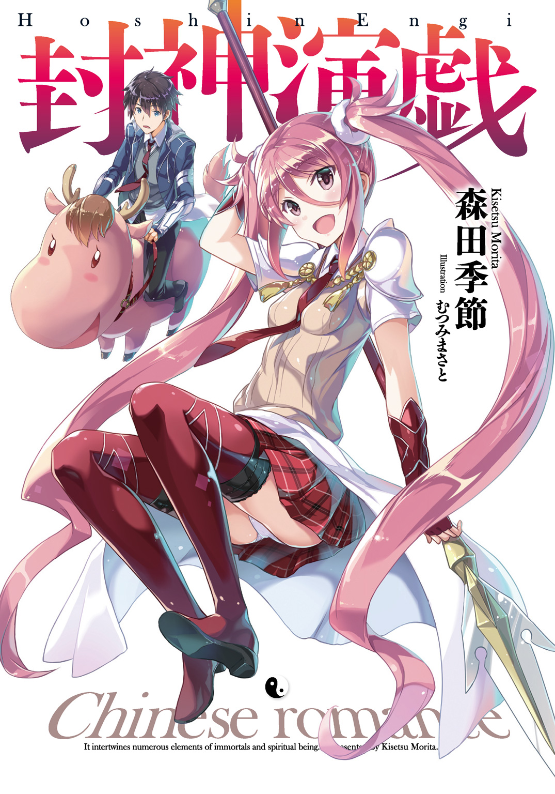
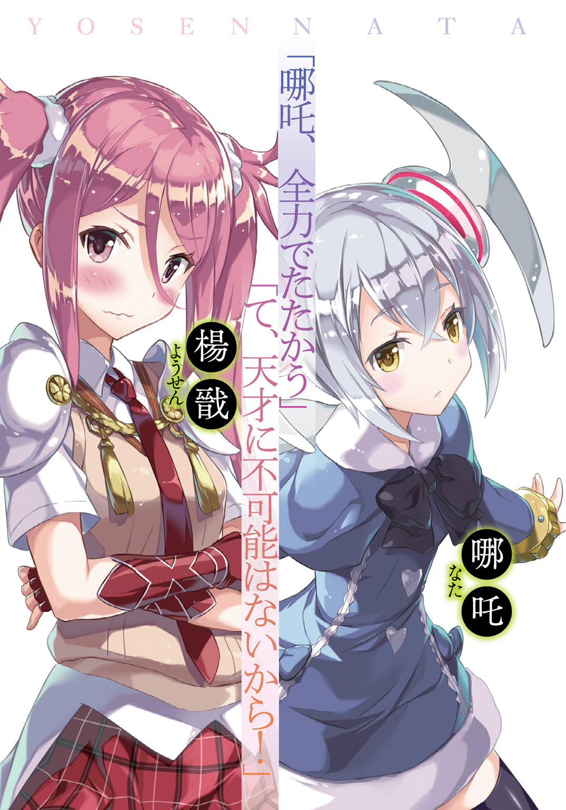
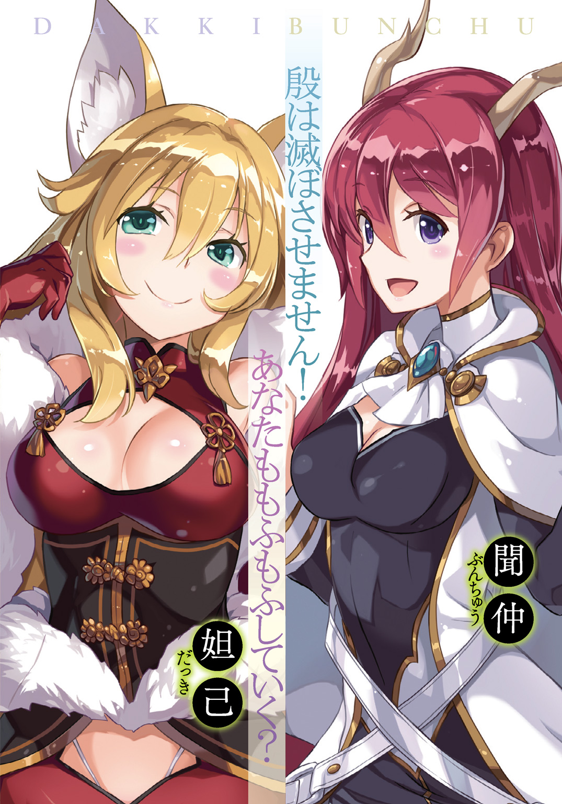
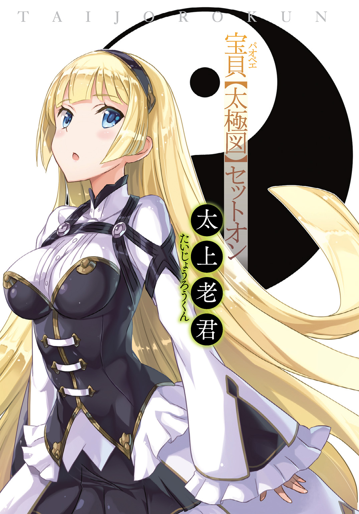
 ダッシュエックス文庫DIGITAL
ダッシュエックス文庫DIGITAL
封神演戯
森田季節
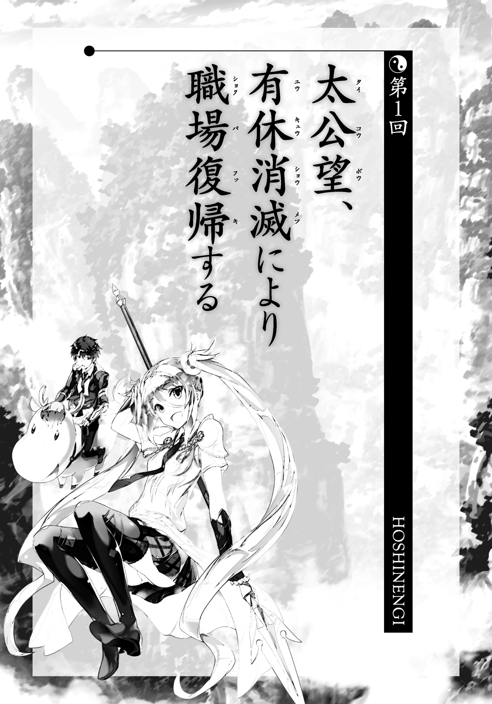
斬砥ィィィンッ！ 毅砥ィィィンッ！
剣で羽扇に斬りつけたのに、異様な金属音が響く。実際、白鶴童子の持つ羽扇には傷もついていない。それだけでその扇が特別なアイテムだと知れる。
「太公望さん、力不足ですよ！ もう六十年は仙人やってるんでしょう？」
「うるさい！ 俺は強さを求めて仙人になったんじゃない！」
白鶴童子が宙に舞う。タイトスカートもわずかに舞う。元が鳥だからか、人の姿の時でも彼女は空を飛びまわれる。
むっつりした顔は、戦闘だからというわけではなく、彼女のデフォルトだ。
白鶴という名前のくせに、いかにもバリバリ仕事ができそうな黒いスーツ姿。ある意味、スーツ姿でする仕事場のほうが彼女の戦場なのだ。ついでに、髪も烏の濡れ羽色という表現が似合うような長い黒髪だった。
「そんな調子じゃ、元始天尊様を倒すなんて永久に無理ですね。つまり、この世界で働き続けるしかないんです！ さあ、馬車馬のごとく働きなさい！」
「嫌だ！ 俺は自由になりたい！ 自分のためだけに時間を使いたい！ そして永久に寝たり遊んだり寝たり遊んだりして、ぐうたら過ごしたい！」
「あなたの快楽って寝ることと遊ぶことしかないんですか」
「そうだ！ せっかく不老不死の仙人なんだから、そのメリットを最大限に生かすのだ！ だから、だから、だから、俺はその夢のために今は苦しいことも痛いことも我慢する！ ラスボスの元始天尊を倒すまで戦い続ける！」
自分の想いを叫んだつもりだったが、いまいち締まらない。内容が実利に直結しているせいだろうか。しかし、世界平和のためとか思ってもないことを言うよりは、このほうが正しい気がする。
「どうしようもない怠け者にはお仕置きが必要ですね」
白鶴童子は右手の扇をさっと太公望のほうに向ける。
「あとで戦闘の残業手当も申請しないといけませんね。全弾発射っ！」
今度は白鶴の攻勢だ。
扇から羽根が飛んでくる。それは羽根というより針、否、むしろ銃弾に近い。
まずい。防御手段がない。
そんな時は回避だ。神回避。いや、神より仙人のほうが格上のはずだから、仙人回避。強引にその場から跳躍して、全弾よける。蜂の巣になったら、神も仙人も平等に助からない。
「よっ！ はっ！ ふぉっ！ どうにか、しのいだ......」
跳び上がりつつ、流れ弾のような羽根を体をくねらせて、かわす。今回は助かったが、もう一回同じことをされたら、次は封神だろう。
封神されたらゲームオーバーだ。また、イチからやりなおしだ。
「本当にかわすことにかけては一人前ですねえ。さすが、人生逃げてばっかりのことはあります。言い訳ばかり上手くなって、代わりに何を失ったのでしょうか」
「よけただけで言いすぎだっ！ 労災申請できるぐらいに心が傷ついた」
中空にぷかぷか浮かびながら、白鶴は蔑むような目で見下ろしている。いや、実際に蔑んでるし、位置的に見下ろしているのも事実だ。
くそ、難易度高すぎるぞ。さっきの回避だって、なかば運で乗りきったようなものだ。運も実力のうちだが、運だけに頼るようでは、長くは続かない。
「では、もう一撃いきましょうか。継続は力なり。いずれ、この攻撃があなたを打ち抜くでしょう。あなたとの勤務態度の差がこんなところに出るのです」
白鶴はもう片方の左手にも扇を持った。これもいわゆる二刀流にあたるのか。
ヤバい。攻撃が二倍になったら回避するスペースが消える。つまり絶対当たる。死ぬ。厳密に言うと死ぬのではなく、封神される。
だとしたら、生き延びるための方法はただ一つ。
逃げるのではなく、防ぎきることだ。
その論理に間違いはない。
問題があるとすれば、太公望にそんな力がないことぐらいのものだ。
「さあ、太公望さん、これで終わりです！ 後任はもっと従順な仙人にさせてもらいますよ！」
羽根が太公望の周囲一帯を絨毯爆撃する。
もはや、太公望一人でその攻撃を乗り切る手段はない。
ならば――味方が来てくれればいいのだ。
太公望の前にさっと、影が飛び出す。
それは金色の長い髪をなびかせた一人の少女。服にも随所に金の刺繡が入っていて、まるで、光そのものを体現しているように、高貴に輝いて見えた。
「まったく、なってないなあ、太公望は」
戦場に出てきたにしては落ち着きすぎている態度で、少女は幕のような何かを体の前に張る。一見、赤と緑のストライプの入ったタオルケットのようだが......。
「じゃじゃ～ん。【風火蒲団】！」
そのタオルケットは異常な磁力でも持っているように、羽根を集めてしまった。そして、羽根は布に刺さることすらせず、ぽろぽろと落下する。
「太公望、もしかしてこんなのも防げないの？ 同じ無職同盟として恥ずかしいよ。働いて、もうちょっと強くなってから出直すべきかもね」
「勝手に人を公の場で言いづらい同盟に加入させるな」
体のほうはそのままで、横着に顔だけを少女は太公望のほうに向ける。
「見殺しにしちゃおうかなとも思ったけど、元始天尊とまで戦うって心意気は感心したよ」
「一番の目的はぐうたらすることだけどな」
「うん、ぐうたらしてずっとボクと遊んでいたいんだよね？」
「そうは言ってない」
うかつにうなずくと、本当に未来永劫、遊ぶことになりそうで怖い。この少女に逆らえる者など、ほぼ宇宙に存在しないだろう。
「じゃあ、次は太公望だけでかわしてね」
攻撃を防いだタオルケットにくるまって、少女は戦線から離脱しようとする。本当に、通りかかっただけだったというぐらい、平板な調子で。
少女の感情の変化は顔を見てもわかりづらいが、怒ることもすねることもある。
それは困る。彼女がいないと太公望は絶対に負ける。
選択肢なんて最初からないのだ。これは運命だ。
そんな時は、その運命を思いっきり肯定するのが、一番理にかなっている。
「李誕、わかった！ お前と遊ぶために自由な時間をくれ！ 遊んでやる！ 何億時間でも遊んでやる！」
「心からそう思ってる？」
まだ少女は疑っている。ならば、叫ぶしかない。
「李誕、俺にはお前が必要だ」
必要だから必要だと言っただけのことだ。しかし、受け止め方次第では好きだと言ったように聞こえなくもない。もちろん、それは受け止めた側の責任だ。ウソは言ってないのだから。
「最初からそう言えばいいのに」
乗りきった――そう太公望は思った。
李誕と呼ばれた少女は、また布のようなものを出す。その布は一見真っ黒のようだが、注視してみると、無数の白い点がついていた。
「宝貝【太極図】セットオン」
途端にその布が広がっていき、大気と混ざり合っていく。その布は宇宙を圧縮したものなのだ。数瞬のうちに周りは見事な星空となっている。
「プ、プラネタリウムの幻影ですか......？」
残念ながら、それは実際の宇宙だ。視界に映る、光る星はすべてこの世に在る。
「それじゃ、バイバイ」
少女がつぶやく。流星が一斉に白鶴を襲う。
これこそ、正真正銘、回避場所のない攻撃だ。
「うわあああ、待ってください......待ってください！ こっちはしがない中間管理職です！ 責任をとらなきゃいけない幹部クラスじゃないんですよ！ どうかご慈悲――」
そこで白鶴の言葉は途切れる。数えることもできないほどの流星で、肉体が消滅したせいだ。
彼女がいたはずの場所から何やら白い玉のようなものが飛び出る。身を捨てての最期の攻撃ではない。魂魄だ。
仙人は不死の存在だが、物理的な概念である肉体が維持できなくなることはある。仙人にだって心臓もあれば血もある。心臓を抉られ、血をすべて抜き取られたら肉体は機能停止する。その場合、魂魄だけが残る。
その魂魄は封神界という集積場に送られる決まりだ。封神界は魂魄を引き寄せる巨大な磁石のようなものである。
「李誕、やっぱりお前はすごい。仙人界最強って言われるのもわかる」
争いは一瞬で決着した。あまりにも破格の力だった。
「さすが、太上老君の名を与えられてるだけのことはあるな」
彼女のことを李誕と本名で呼ぶのは太公望だけの特権だ。ほかの者は、この偉大で、巨大な仙人を、敬意をこめて、太上老君と道号で呼ぶ。
「もっと褒めていいんだよ」
少女はタオルケットをつかみながら、ぷかぷかと地面に戻ってくる。
「お前は褒めても笑ってくれないからな。俺は無駄なことはしないポリシーなんだよ」
「それじゃ、笑ってあげるよ」
「え？」
「太公望のためだけにね」
太上老君は誰にも見せたことのないような笑みを―――
深刻なエラーが発生しました。現在、復旧中です。しばらくお待ちください。
「これってセーブされてるのかな......。せっかく、初めて白鶴を倒せたと思ったのに......」
布団の上、ゲームのコントローラーを握り締めて、青年は呆然としている。布団の上だからなのか、服もパジャマのままだ。
見た目は若いのに、覇気というものがない。短期的・長期的を問わず、人生における目標とかないタイプの顔だ。
そして、顔はゲーム内のキャラと完全に同じだ。近頃の技術革新はすごい。登場人物のしゃべる言葉だって実物の性格を元に極めて忠実に再現されている。その正確さが災いした。現実に想像することが難しいことをゲームがやろうとして、止まってしまったらしい。
目の前のモニターには停止中のゲーム画面が映っている。大迫力のスピーカーを設置の上音漏れしないように防音設計までしているこの部屋も、ゲームが動かなくては何もできない。
「ゲーム内でもボクは笑わないって設定なんだね」
隣では律儀に正座しながら少女がコントローラーを持っている。
もし、街中で出会ったら、自然と目がいってしまうぐらいの美少女だった。化粧で作ったタイプの美しさとは違う。基本スペックが高すぎる正真正銘の美少女。
けれど、ゲーム同様に見事なまでの無表情なので、何を考えているのかは判断不可能だろう。初対面の人物なら、この子、機嫌悪いのかなと不安にすらなる。
青年がそんな少女の表情に気を留めないのは、よほど親密なのか、相手の様子に気づかないほど鈍感なのかのいずれかだ。この場合、正解は前者のほうだ。
二人は暇さえあれば、ゲームに時間を費やしていた。それすら仙人の修行のひとつなのではないかと信じそうになるほどに求道的に。もちろん、何の修行にもならない。
「実在の人物でゲームができるというのは斬新だけど、こういうバグもあるってことだな。あとで、制作者の太乙真人に言っとこう。製品化までの道は遠い」
まだゲーム画面は動かない。こういう時間、絶妙に手持ち無沙汰で困る。
「太公望、下手だよね」
ぼそりと少女が言う。しばらく動かないと思っているのか、コントローラーも手放している。
「いや、あれは白鶴が強すぎる！ あんな弾幕防ぎようがない！ それと、李誕の能力がチートすぎるだけだ！ あんな便利な毛布あったら、そりゃどうにかなるわ！」
バカにしているみたいに、太上老君は「ふあぁ」とあくびをした。絶対ナメてるのに、そのしぐさもかわいいのが腹立つ。
「そもそも、このゲーム、登録したキャラによって強さにばらつきがある。俺が弱すぎる。いまだに二面のボスの白鶴で詰まってたとかおかしいぞ。ゲームバランスにも改善の余地アリだ」
「仮に太公望でプレイしても、ボクは勝てたけどね。ノーミスクリア」
さらりと、太公望のプライドにハンマーで殴りかかるようなことを太上老君は言う。
「お前、大言壮語にもほどがあるぞ」
「あのね、このゲームはアクションのようでいて実態は覚えゲー。作業みたいなもの。単純な移動の繰り返しだけで、攻撃をやりすごせるようになってる。白鶴童子の羽根の攻撃も絶対安全なポイントがあるから」
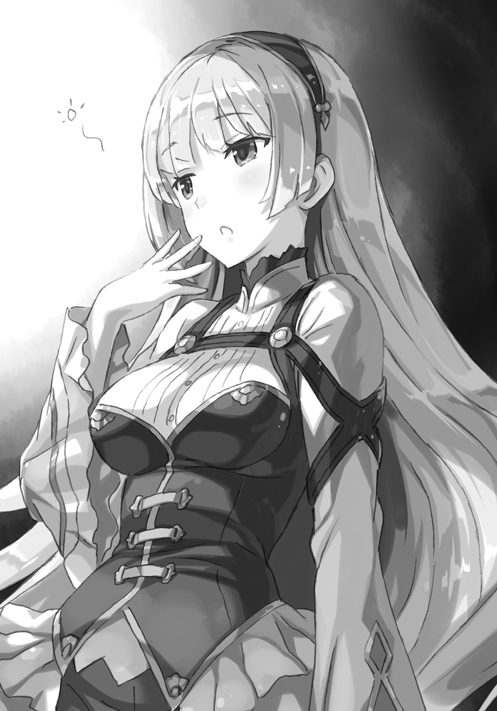
「待て。それは聞き捨てならないな」
太公望は少しばかり、むっとした。
「あれ、太公望ごときがボクにいちゃもんをつけるつもり？」
雰囲気からはわかりづらいが、太上老君は仙人界でもトップレベルの実力を持つ超大物である。しかも、組織に所属するのを潔しとせず、たった一人で自由に生きていた。言葉を変えれば、ニートだ。
そんな太上老君に物申すなど、まともな仙人なら怖くてできないことだ。
「このゲームを作業だと言ったな？ だから、お前はダメなんだ。ゲームの意味を辞書で引いてみろ」
と言いつつ、太公望はスマホ（っぽい宝貝）で「ゲーム 意味」で検索する。辞書は本棚にあると思うが出すのがダルい。
「ほら、意味に『遊戯』とあるだろ！ なお、次に遊戯を辞書で調べると当然ながら『遊び』という意味が出る！ イコール、ゲームとは遊ぶことだ！」
「何を鬼の首とったように言ってるの？ 意外なことでも何でもないし」
「お前もまだまだ修行が足りてないな。ゲームの本質というものを理解していない」
仙人界の中で、太上老君に修行が足りないとか言えるのは太公望だけだ。太公望の師匠の元始天尊ですら、太上老君の弟弟子にあたる。
「お前のやっている作業という言葉に遊びの要素があるか？ 遊びのどこに価値があるかといえば、それは『楽しい』という部分だ。作業となり果てた行為に楽しみはない。李誕、お前はこのゲームを極めたがゆえに楽しみという本質を失ったのだ！ つまり、なんか、感覚的にお前はゲームに負けてるのだ！」
「............」
無表情で太上老君は太公望を見ている。いつも無表情だけど、ちょっと残念そうな無表情。
微妙に気まずい空気になったと、言った本人も自覚していた。
「ニートって何の得にもならないことに理屈っぽくなって、それで自分の存在意義が肯定された気になりがちだよね。論破したつもりでいてもらってもいいけど、それで世界は一ミリたりとも変わってないよ」
「待て待て待て！ ニートではないぞ！ ちゃんと崑崙って組織に所属してるからな！ 有給休暇を消化してるだけだ！ この瞬間も働いてはないがジョブは持ってる！」
「有給休暇って何年あるの？ 仕事行かなくなってからけっこう経つよね。その間、一歩も外に出てないんじゃないの？」
「人聞きの悪いこと言うな。デリバリーの食事が届いた時は受け取りのためにドアの外に出る」
太上老君は何も顔には出さないが、「ふぅー」と諦めたように息を吐いた。
「太公望はそろそろ働くべきかな」
「いいや、まだ働かない。もうちょっとゴロゴロダラダラしたい。それに働いてないお前にだけは言われたくない。お前のほうこそ、有休どころか完全に無職だろ」
「ボクは一人であてどもなく旅行して人生を満喫してるからいいんだよ。働かないのはボクぐらい偉くなってからでもいいかもね。誰かのために生きるのも大事だよ」
そんなこと言っても、自分がぐうたらするために戦うってゲーム内でも叫んでいたし、誰かのために生きようにも、そんな「誰か」が思い当たらない。
「ボクのためにでもいいよ」
「お前のほうが強いんだから、守る必要がない」
「バカ」
ちょっとすねたように太上老君が言った。
「まあ、いいけどね。太公望が実はすごく強いってボクは知ってるから。太公望のサボりは力をあまり見せないようにするためのサボりだもん」
「やめろ。勝手に俺を過大評価するな」
「働けば、その真価が発揮されるはずだよ」
どうして、そんなに働かせようとしてくるのか。こいつ、崑崙の就職支援員か何かか。
「とにかく、誰がなんと言おうと俺は働かない。お、やっとゲームが動いた」
いよいよ未知のステージだ。さあ、白鶴童子の次のボスは誰に設定されているのか。
ピンポーン。
――とインターホンが鳴った。
「誰だ......？ 公共料金はすべて口座引き落としにしてるぞ。宗教の勧誘か？」
「通販じゃないの？」
「いや、午前中に受け取ってるのを人に見られたら、働いてない人と思われそうだから、夜八時から九時の受け取りにしている」
「なんで、実際に働いてないのに、働いてないと思われるのは容認できないのかな」
モニターで顔を確認すると白鶴童子がいた。今も鶴の格好ではなく、人間の少女の姿をしている。勤務時間内だから、スーツ姿にタイトスカート。ゲームとまったく同じだ。あと、その仏頂面もゲームでは見事に再現されている。
「げっ......」
彼女は崑崙の職員で、元始天尊の秘書をしている。
つまり、彼女が来ているということは、仕事に関する話をしに来た可能性がすこぶる高い。というか、勤務時間中にスーツ姿で友達でもない奴のところに遊びに来ないだろう。
「太公望さん、いらっしゃいますか？」
白鶴をムゲに扱うということは、自分の師匠でもある元始天尊にたてつくことと同じだ。さすがに無視もできず、ドアを開けた。
「お久しぶりです、太公望さん。うわっ！ カビくさい部屋！」
白鶴は嫌そうな顔で鼻を押さえた。引きこもっているとはいえ、部屋がくさいと言われるとちょっと傷つく。
「何か用か......？」
一応、位としては太公望のほうが偉いのでタメ口だ。
「元始天尊様がお呼びですので、至急いらしてください。それぐらい、伝達用宝貝でメール飛ばせばいいのではと聞いたら、『直接誰かが呼びに行かないと、来るわけがない。メールが届いてなかったとか言い訳を作って絶対来ない』とおっしゃっていました」
「あの人、俺の性格をきっちり読んでるな......」
「というわけで、来てくださいね」
「嫌だ」
だが、断った。
「好きとか嫌とかそういった問題じゃないんですよ......。フタユビナマケモノの仙人でも、もうちょっと働きますよ......。働いてください」
「俺は有休を消化する！ 有休が尽きてから考える！ これは労働者の正当な権利だ！」
「いえ、もうありませんよ、あなた」
白鶴は何かをプリントアウトした紙を押しつける。
どうやら勤務表らしい。太公望と名前がある。その横に「有休」「有休」「有休」「有休」「有休」とゲシュタルト崩壊を起こしそうなほど、その二文字が並んでいる。
「これが最終ページまでいっても、続いてまして......何度か確認しましたが昨日の時点で尽きています。このままだと無断欠勤扱いで、クビ。最悪、崑崙からの追放処分ですよ。次元を飛び回る能力に長けてなかったら、ほっぽり出されて封神どころか何もないような空間を永久に漂うことになります。つまり、近い概念の言葉で言い換えると、事実上、死にます」
「........................」
「さあ、年貢の納め時ですよ。今日から一緒に世界のために働きましょう」
「仕方ない。死ぬか」
「おかしいでしょ！ せめて死は怖がりましょうよ！ 死ぬぐらいなら、働いてくださいよ！」
なんでだ。死ぬとか脅してきたから、脅しには屈しないというところを見せたつもりなのに。「見上げた根性ですね」とか言って褒めろよ。
「久しぶりすぎて、働くのが怖い」
たぶん、白鶴には理解されない心情だろうけど、そういうものなのだ。
ずっと、行かなかったらそうそう復帰できない。人の目とか気になるし。アイドルの復活ライブとは違うのだ。原則、アウェーなのだ。
「知りませんよ！ そんなの一、二週間も働いてたらじきに慣れます。あなたが働けば、私たち崑崙の職員も幸せ。それで利益を享受する人も幸せ。あなたも幸せ。ほら、すべてが幸せになるんですよ」
おかしい。自分が幸せになる論理展開のところにぽっかり穴が空いている。
だが、職員が呼びに来た以上、無視するにも限界がある。
どうやら、この夢のような生活も今日でおしまいらしい。心から楽しいものだったかというと、疑問符がつくが。
「李誕、不本意ながら出勤しないといけなくなった。カギかけるから出ていってくれ」
「カビくさい部屋、掃除しといてあげようか？」
「ところで、お前もカビくさいと思ってたのか？」
「うん、ちょっと」
できれば、言ってほしかった。そしたら、気合入れて掃除したんだけど。そこで黙ってるのって、やさしさじゃないんだ。いや、やさしさかもしれないけど、本人はかえって傷つく系統のやさしさなんだ。
「掃除は帰宅したらするから、いい」
「留守番しといてあげようか？」
たまに太上老君の見返りを求めないやさしさに惹かれそうになる。もう全部、太上老君の言葉に任せてしまおうかと思う時がある。
ただ、それに甘えたら、あとはずぶずぶと底なし沼のように落ちていく気がして怖い。
「お前は帰れ」
最低限の自立はしようと、心を鬼にして、言った。
「ねえ、パジャマ姿のままだとまずいんじゃない？」
それもそうだ。すぐに着替える。太上老君がいたけど、男の自分が着替えるだけだから、向こうが気にしてないならいいだろう。
待っていた白鶴に「あの、ここ、一人暮らし用の部屋なんで、同棲してるなら規約違反になるんですけど......。わざわざ上には言いませんけどね」と言われた。一緒に暮らしてるわけではないのだ。ほぼ毎日、太上老君が遊びに来てただけだ。
「それじゃ、またね」
太上老君は万能タオルケット【風火蒲団】にくるまって、どこかへ飛んでゆく。太公望も戸締まりをして、とぼとぼと歩く。横に監視役の白鶴を伴って。
「外の景色って、こんなんだったっけ。すべてが新鮮だ」
「まだ、部屋を出て十五メートルぐらいですよ......。どんだけ引きこもってたんですか......」
「十六年ぐらいかな」
「あなたのいた国だと、赤ちゃんが高校に入学する年数ですよ」
「いや、実質二十年ぐらいだったかな」
「赤ちゃんが成人式に出席するほどの年数ですよ」
有休を使いはじめた時は、「もう我慢できん！ 仕事休む！」と憤りに近いものがあったはずだが、そういう感情も自然と消えていた。あとには「働きたくない」という、労働に対する忌避感だけが残った。そのせいか、仕事自体を忘れることはできないままだった。
なぜ、仕事が嫌だから休んでいたのに、それで素直に幸せになれなかったのだろう。職員をボスキャラにして倒すようなゲームをわざわざやっていたんだろう。
それから、白鶴は何かに気づいたのか、顔をしかめた。
「そういえば、太公望さんからもカビくさいにおいがしてますよ」
部屋にずっといたので、においが染みついていたのか。いや、逆の可能性もある。カビくさい自分の体臭が部屋についたのかもしれない。救いなさすぎ。
「風呂に入りに戻っていいか？」
「ダメです」
崑崙というのは、一言で言えば巨大な船である。
船という字よりは「艦」のほうが近い。サイズで言えば東京二十三区のうちの世田谷区ぐらいの面積がある、そう記憶している。
どうしてそんな覚え方をしているかというと、太公望が世田谷区出身だったからだ。日本にいた頃の名前は、大宅望海。少し女っぽい名前だった。その名前をもじって、太公望と仙人っぽい名前を作った。
そんな世田谷区規模の船の中にはいくつもの通りと部屋がある。巨大すぎるので、ちょっとした森や山、池なんかもある。雨も降れば風も吹くし、冬になれば雪も積もる。
天井も相当に高くて、かすんで見えないほどなので、異世界から人間を連れてきたら、ここが船の中だとは気づかないだろう。崑崙という名の世界そのものが、ある空間の中を進んでいると考えたほうが現実に即しているかもしれない。
あまりに広いので、内部の移動手段もちゃんと設けられている。
「俺、元始天尊様のこと、苦手なんだよな」
黄巾力士というヒト型ロボットのような移動用宝貝に乗って、太公望は目的地を目指す。白鶴は鶴に戻ってその横を飛んでついてきている。
「珍しい男の仙人同士、仲良くやれないんですか？」
「むしろ、同族嫌悪って感じだな......」
人間が仙人になるための必須条件である仙骨という骨は、原則女性が持って生まれてくる。女性でも相当に稀なことだが、男の太公望はさらなる例外だ。
「賭けてもいいけど、再会するなり物理的に叩かれる」
「まさか。子供っぽくはあっても、崑崙で一番偉い人ですよ」
そして、扉というよりは門に近いような入り口を開けて、元始天尊のところに参上した。
「お久しぶりです、太公望です」
破虚ーンッ！
いきなりハリセンでぶっ叩かれた。
「これは無断欠勤の分！」
「ほら、当たった......。白鶴、あとでみかんくれ......」
「私、何も賭けてないですよ。みかんぐらいならあげますけど」
白鶴は人に戻って、後ろに下がっていた。
「ったく、どれだけ休んでるんだよ！ 有給休暇使い切る仙人なんて初めて見たよ！」
ハリセンを持って文句を言っているのは小学生ぐらいの年格好の「少年」である。ただし、仙人は不老不死なので年齢は見た目に準じない。
文句を言いながら、曲芸用かというような大きなボールに乗って、ころころ移動している。ハムスターより落ち着きがない。
「有給休暇についてはルール内のことだからいいでしょう。俺がスカウトされた時だって、仙人になって不老不死になったら、永遠にゴロゴロできると聞いたからですし。そしたら有給休暇の分しかゴロゴロできないなんて。一種の誇大広告ですよ」
「そりゃ、あくまでも崑崙は目的を持った組織だもん。歴史が歪むことがないよう、チェックするって立派な役目があるんだから」
崑崙は船の名前でもあり、「歴史管理者」の一つを指す呼称でもある。
歴史管理者とは、時空の中にある、無数の世界にイレギュラーがないか監視する組織だ。寿命の制約がない仙人は、時空を移動する船に乗って、延々と点検を行っているのである。
この崑崙という船の外は、いくつもの世界が浮かんでいる時空の海だ。外に出れば、普通の生き物は即死する。いや、時空の海の中はまともに時間も流れていないので、死すら訪れない奇妙で悲惨な状態になる。
では、世界の歴史にイレギュラーを起こす存在とは、いったいどういうものなのか。
――まさしく、彼らのような仙人だ。
「ここに呼ばれたってことは、どっかの世界に派遣されるんですよね......。嫌だなあ......」
通例、崑崙の職員はいくつかの班に分けられて、各世界に飛ばされる。そこでトラブルを起こしている仙人を逮捕したり、退治したりする。
「気分が晴れないんですよね、この仕事。敵の仙人を『封神』するのも含めて......」
封神とは仙人界の用語で、「神（に等しい力を持つ者）を封印すること」の意味だ。
仙人のような超時間的・超人間的な存在は普通、死ぬということがない。そのため、問題児の仙人は封印してしまうしかないのだ。その施設が封神界だ。
封神された仙人（厳密に言えば、仙人以外の人間離れした力を持った者の魂も含まれる）はそこで刑期のようなものを終えて、また仙人の世界に戻るらしい。
現時点でもいろんな世界の仙人やそれに匹敵するような力を持った存在の魂魄が多数、収容されている。
「まあ、後味悪いのはわかるけどね、害虫駆除するのとは違うし。相手は同じように考え、しゃべり、笑う存在だから」
「はい、だからサボりたいんです」
「結局、サボりたいだけかよ。思ってても言うなよ」
「元始天尊様、サボることが仕事になる部署ってありませんかね？」
言ってる本人もよくわかっていなかった。仕事を休むから、サボりなので、サボることが仕事になるというのは、理屈としておかしい。
「悪いが、君にはたっぷり労働をしてもらうよ」
ころころと、元始天尊は太公望の周囲をボールに乗ってまわっていく。いかめしい顔で怒鳴る上司も嫌だが、ボールに乗ってうろちょろしている上司もリスペクトしづらい。
まあ、労働はやむをえまい。有給休暇が消えた以上、休むための正当な根拠が失われてしまった。きっと、どこかの世界でリーダーをやってる十二使の下について働くのだ。
「君にはある世界のプロジェクトリーダーをやってもらおうと考えてる。十二使クラスでもないのに、リーダーって大抜擢だよね。頑張ってね」
「えええええっ！ リーダーなんて無理無理無理無理！」
「ダメだって。有休も使い切ってるからこれ以上サボれないよ。サボったら、封神しちゃうよ」
「じゃあ、封神されます」
ボールの上で器用に元始天尊はこけた。
「そこは抵抗しようよ！ 生きる意欲なさすぎ！」
白鶴と同じ反応をされた。やはり、秘書とその上司だけある。
「だって、俺レベルの仙人をリーダーにするって、一種のイヤガラセでしょ？ リーダーをやるのなんて、十二使か、さらにその上の幹部ぐらいのものですよ」
「いや、君をリーダーにするのには、それ相応の理由もあるんだよ。今回の世界、問題を起こしてる仙人のトップが地球出身なの」
「そりゃ、すごい偶然ですね」
この時空の海の中には文字通り数えることができないほどに世界がある。太公望と同じ世界出身の仙人を探すだけでも、そうそうできることではない。
「一応、やる気になったと判断して話を進めるよ。仙人の名前は妲己」
部屋のモニターに妲己とおぼしき仙人の姿が映る。
「ほう、相当の美女ですね」
「その美貌で国王をたぶらかしてる。まさに傾国だね。ちなみに――」
「狐の仙人なんですよね。見りゃわかります」
美女ではあるが、そんなことより、その耳と尻尾が先に目につく。尻尾なんて、太くて、なおかつ気味が悪いぐらい長い。モニターに収まりきっていない。足を崩してはいるが、はるか後ろまで尻尾が伸びているように見える。
「仲間も多いし、なかなかのやり手だよ。やってることが、たんなる贅沢三昧なのが救いだけどさ。おかげで、まだ利権搾取型でとどまってる」
「ああ、国を乗っ取ろうってわけじゃないんですね」
仙人が人間世界におよぼす問題行動にはいくつかのカテゴリーがある。
まず、利権搾取型。
仙人であることを隠して、人間社会の中で利益を得ようとするタイプだ。たとえば速く走れる宝貝を使ってオリンピックで金メダルを取るとか、その世界の文明でまだ発見されていない科学的発見をしてちやほやされるとか。美女のふりをして王妃になって贅沢をするというのも、ここにあてはまる。害としては一番小さく、程度が低ければ無視される。
次に、立身英雄型。
仙人や宝貝の力を思いきり使って、救国の英雄になったり、王朝を創始したり、神とあがめられたりすることを狙うタイプだ。歴史に大きな影響を与えるので取り締まりを必要とする。
最後が、破壊願望型。
その世界をつぶすこと自体を目的にしているタイプだ。人間の力で仙人を止めることなどできないから、早急に排除せねばならない。
問題行動が複数のカテゴリーにまたがるケースもあるが、基本的にこの三つに大別される。
「今回は敵の立場が王妃というのが厄介ですね。いきなり消してしまうと、影響が大きい。何かもっともらしい理由がほしいところですね」
「君はやっぱり頭の回転が速いね。面倒だし、放置しておきたかったんだけど、このままだと歴史が変わっちゃうところまで来ちゃったんだよ。滅びるはずの国が滅ばなくなった。そうなると、利権搾取型でも黙っているわけにはいかない」
楽しそうに元始天尊はうなずいたが、太公望はとくにうれしくなんてない。聡明であることが仕事に結びつくのなら、聡明でないほうがありがたい。
「参考までに、この世界の命数――つまり、寿命を出してみるね」
部屋の大型モニターに年表のような帯グラフが現れる。「夏」とか「殷」とか「周」とか「春秋」「戦国」といった文字がそこに書いてある。
「どこかで聞いたことのある歴史だな......」
「ああ、君のいた世界に近いかもしれないね。妲己って仙人も過去の知識が使えるような世界のほうが楽だろうし」
ほぼ無限に世界はあるのだから、自分の所属していたところと似た世界もあるのだろう、そう太公望は解釈した。もっとも、自分のいた世界の「殷」や「周」の歴史を太公望はとくに知らないので、あまり意味はないが。
「ちょうど、この「周」に変わる直前の「殷」という王朝の末期に妲己は寄生してる。だから、最初から「殷」を滅ぼすはずの「周」の手助けをして、「殷」ごと滅ぼせばいい。妲己の仲間の仙人も「殷」の家臣になってる者が多いから処刑して封神しちゃえばいいし」
しかし、その説明に太公望の眉がぴくりと動く。
「師匠、その話、妙に聞こえるんですが」
「というと......？」
元始天尊のボールが止まる。
「王妃として国をダメにするなら、殷は滅亡に近づきこそすれ、歴史が変わって滅び以外の道を歩むのはおかしくないですか？ 論理展開が矛盾してますよね。王妃となって、王という専制君主を陰で操る道を選ぶだなんて、国をダメにする常套手段ですし」
太公望の目はさっきまでのだらけたものとはまるで別人だ。
理由は崑崙の職務がそれだけ重いからだ。
歴史に影響を与えるという行為は、その過程で数えられないほどの存在の命運を左右する。死なずにすむはずの者が死に、消える。幸せになるはずの者が地獄に落ちる。無論、そんなことに手を下した仙人の心にも傷を残す。
たとえ、それが職務として妥当なものだったとしても。
「さすが元始天尊様の一番弟子ですね。あの太上老君様までが一目置いておられるのも、ちょびっとだけわからないでもないです」
白鶴まで珍しく敬意のこもった目を太公望に向けていた。逆に言えばさっきまでは、この給料泥棒め、ぐらいの視線だったのだが。演技でもいいから、笑顔を向けてほしい。
「ああ......うんとね、国というのは王が怠惰だから滅ぶとは限らないんだよね......。実は、妲己がいなかった場合、殷は王の勤勉ぶりによって滅んだんだよ」
映像が殷の年表に変わる。縦に長く続く年表で、横組みで事績が、左側の帯の部分に王の名前が書いてある。とくに一番下の紂王という欄は文字でびっしり埋まっている。
「この最後の王はすごい英邁な君主でね。国の問題点を見つけては、改革を繰り返したんだ。だけど、急な改革に反発が起きて――」
「内乱が起きて滅んだということですね」
「いえす。そんなレアなケースじゃない。君がいた国だって、平清盛、後醍醐天皇、豊臣政権――変更を加えすぎて、国内からの抵抗勢力を押さえられずに短期間で滅んだ政権はいくつもある。そのあとの政権の多くがなんだかんだで旧政権の政策を取り入れていっているのは、『やったことが問題だった』のではなく、『やり方が問題だった』ことの証左だよ。生き物は仙人も含めて、元来保守的だ。そのあり方を変えられすぎると不安になるのさ」
「今回の殷のケースも、紂王がだらけた性格になったせいで、じわじわと国が悪化するだけにとどまって、滅ばなくなりかけている――こういうことですね」
「いえす、その二」
「つまり、働きすぎは悪。働かないぐらいがちょうどいいということですね」
「のー。自分の引きこもりをどさくさにまぎれて肯定しないでよ」
そこは否定された。
「というわけで、お願いね、太公望君♪」
容姿相応の愛らしい笑顔で、元始天尊は仕事を頼んでくる。
依頼というよりは命令に近いのだが。
「殷が滅ばなくなったおかげで死なずにすんだ人もたくさんいるんでしょうけど――そこは、まあ、やるしかないですね。生き死にを管理するのも仙人の仕事です」
少し冷めた目で太公望は力なくうなずく。だから、あまり働きたくないのだ。
「君は仙人になって六十年そこらだよね。まだ、人の命を扱うのがつらいのはわかる。でも、こういうのも慣れだから」
「元始天尊様はどれぐらいで慣れました？」
「二百年ぐらい？」
あと百四十年か。引きこもっていればすぐだが、そんなに有休はもらえないだろう。
「それじゃ、君を今から妲己封神計画の担当リーダーに任命します」
辞令も何もなく、口頭で。太公望も「拝命つかまつりました」と答える。
「さてと、リーダーの役職手当なんだけど」
「有休五十年」
「君だけにはやらない。はいよ、まず、この宝貝ね」
元始天尊が出してきたのは、ほどほどの長さの杖というか棒というか、そういうものだ。
宝貝というのは、仙人が使う、特別な力を持ったアイテムの総称だ。なので、形状にも効果にも法則性はない。傷を癒すものから、その逆で敵を病気にするものから、あらゆるものがある。もちろん、仙人個人の能力も大切だが、この宝貝の質も仙人の能力に大きく影響する。
「なんか、この宝貝、弱そうですね......」
「失礼な。【打神鞭】っていう、風を起こす強力な宝貝だよ！」
「ほほう。この宝貝、ここで試していいですか？」
「危ないからダメ。仕事する世界に飛んでから使ってね」
「この宝貝、師匠に向けて試していいですか？」
「話、聞けよ」
なくしてもまずいので、太公望はポケットにそれを突っこむ。短いのでちょうど収まった。
「それから、乗騎も用意したよ。君も仙人の格は割と高いんだから、そろそろ霊獣を持ちなさい。厳正な乗騎試験の結果、合格した子を君につける」
「マジですか！」
これには目の色も変わる。はっきり言って、宝貝なんかより何十倍もうれしい。
「もしかして、ネコ科ですか!? 猫、大好きなんです！」
「ネコ科......。私は苦手なタイプです......」
白鶴が憂鬱な顔をしていた。野生の鶴の時代に野良猫に襲われた記憶でもあるのだろうか。
「ほら、ずっとゴロゴロ眠っても怒られず、それどころか、むしろかわいいとか言われる生き方ってサイコーじゃないですか」
「ライフスタイルに共感覚えてるだけなんですね」
白鶴の目が、また腐れニートに向けられるものに変わった。
「テンション高いところ申し訳ないけど、ネコ科じゃないんだ」
「じゃあ、イヌ科ですか？ もふもふできる毛並みの犬もいいかも」
「イヌ科でもないよ」
「牧歌的な牛とかでもいいですよ、並んで草原で昼寝するのもオツじゃないですか」
「牛でも馬でもないね。むしろ、ダメなのがあるとしたら、どんなの？」
「カバとかブタとか。近年増えすぎたアライグマの乗騎より嫌です」
元始天尊の玉乗りがまた急にストップした。顔にヤバいぞと書いてある。
「ちなみに、な、なんでダメなの......？」
「普通、『ペット飼いたいとしたら何？』って聞かれたら、猫とか犬とか答えるでしょ。あんまりブタとかカバとか答えないでしょ。それだけのことですよ」
「じゃ、じゃあ......四不像ちゃん、入ってきて......」
すぅっと空を飛んで、部屋に入ってきたのは、カバとブタを足して二で割ってファンシーかつファンタジックにしたような生き物だ。角らしきものも生えてはいるが、かなりやわらかそうで、第二の耳と言われたら素直に信じてしまうと思う。
「おつかれさまっス！ 私、四不像と申しますっス！」
霊獣が元気に声をあげる。人間の言葉がしゃべれる霊獣はなかなか珍しい。
「この子が霊獣の四不像ちゃんね。せっかくだし、人の形も見せてあげて」
「わかりましたっス！」
ぱっと四不像は少女の格好に姿を変える。
なんか、昔流行ったメイドの格好に似てるな。ちゃんとしたメイドじゃなくて、メイド喫茶にいるほうのタイプ。大きな目がくりくりと動く。角と耳は人間になってもそれぞれ残っている。猫耳とか犬耳とかいう言葉で分類するなら、これは何耳なのか。
「太公望さん、はじめましてっス！ 粉骨砕身働きますので、よろしくっス！ 力を合わせて悪い仙人を倒しましょうっス！」
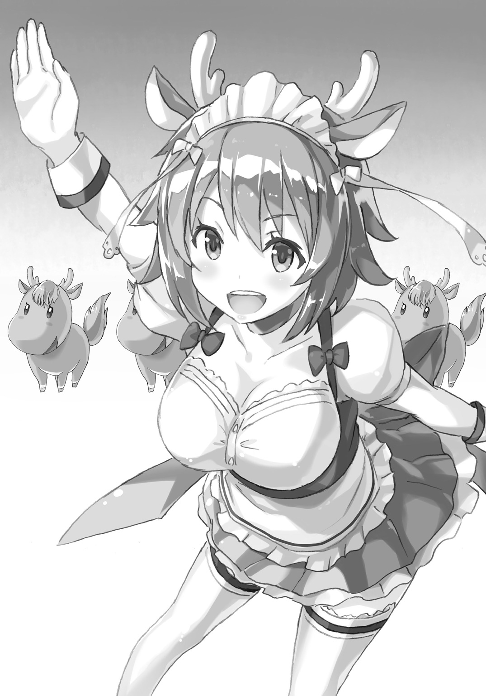
そのまま、右手を「いえーい！」と振り上げている。全体的にテンションが高い。
だが、太公望のほうは、ずっと真顔だった。
「あ～あ、カバとかブタとかの系統か」
空気が凍りついた。どうやら、禁句の一つだったらしい。
「あの、私の先祖はシフゾウっていうシカ科の動物なんスが......。しかも、頭は麒麟、体は竜とすら言われてて......」
「メジャーな近い動物で言えばカバだろ。そうじゃなきゃ、ブタだな」
女性に対して言ったら訴えられそうな言葉だが、この場合はたんなる事実だ。
「申し訳ないですが、チェンジで。こんなの、じいちゃんに週刊少年ジャンプ買ってきてって頼んだら、週刊新潮買ってこられたぐらいミスチョイスじゃないですか。週刊しか合ってねえよみたいな」
「え！ いきなりお役御免っスか!? 試験をクリアしてきたから、能力はお墨付きのはずっス！ しかも、軽快なトークもできるっス！」
むしろ、うるさい。「メ～」とか、たまに鳴くぐらいでいい。
「能力じゃない。ヴィジュアル面だ。猫が飼いたくてペットショップに行った奴に、カバを勧める店員がいたらバカだろ」
なんとか、ネコ科の霊獣にしてもらうため、太公望はあえて辛辣な言葉を並べた。霊獣に罪はないことは知っているが、どっちみちネコ科を求めている自分が主人になったら霊獣も不幸だ。ここは我慢してくれ。
だが、霊獣のほうは、その言葉を真に受けていた。
「もしかして、私、か、かわいくないっスか......うぅ......。ごめんなさいっス、美人ってタイプではないっスよね......」
人間形態の四不像は今の見た目が残念だと言われたと判断したらしい。早速、涙目になっている。
「ああ、違う、違う！ 人間バージョンの話じゃない！ 今の君はけっこうかわいいと思う......うん、かなりかわいいほうだ！」
泣かれるとまでは思ってなかった。まともに会話した女子なんて、ほぼ太上老君しかいないので、こういう傷ついた反応をされたこともない。
すると、ぱっとまた四不像の顔が明るくなる。喜怒哀楽の変化が激しいキャラだ。そして、変化は表情だけにとどまらない。ぴょんと太公望に抱きついてきた。
「うれしいっス！ 私、かわいいんスね！ すごく光栄っス！」
「わかったから......引っついてこなくていい......」
丁重に四不像を押し戻す。
「私、頑張るっスよ！ 八面六臂の活躍見せるっスよ！」
四不像は太公望の手をがしっととると、ぶんぶん振った。意欲をアピールしたいらしい。あまりにも四不像のスウィングが激しいので、太公望の全身が揺れていた。
「俺はそういう根性論の精神が苦手なんだ。とくに、頑張るとかすぐ言う人って、絶対に無理」
四不像もこれはまずいと思って、自分から距離をおく。
「わ、わかりましたっス......。努力して、先輩が不快感を覚えないようにするっス......」
「ああ、ダメダメ。努力ですべてが覆るとか、そういう発想が残ってる時点でダメ。努力だけじゃ変わらない流れみたいなものって社会にはあるけど、そういう時、なんでも自分のせいにしちゃって鬱になっちゃうから。やっぱ、無理だよ。無理。雇用のミスマッチ。君は俺みたいな奴のところに来るべきじゃない」
わざとらしく首を振る。というか、わざとだ。
絶対にこんな仙人の乗騎なんてやりたくないと思わせてやる。詳しいことはわからんが、恋愛と一緒だ。自分から振るから、罪悪感などが雪のように積もるのだ。相手から振られる形になれば、相手の決断だから自分のせいじゃないもんねと思える。
「君、もう少し後輩のやる気を買えよ」
「元始天尊様、こういうやる気のある子ほど、離職率が高いんですよ。『自分のやりたいことはこうじゃなかった』とか言って、一年ぐらいで辞めちゃうんです。だらだら最低限働くことしか考えてない奴のほうが長続きするんです。俺はこれを『クリエイティブなことがやりたいとか過剰に言ってる新人が、最初に事務や営業に配属されると、思ってたのと違うとか言ってすぐ辞めちゃう現象』と呼んでます」
「正論と言えば正論だけど、この場で言ってほしくないな......」
元始天尊も困惑しているのか、ボールの上にべたっと転がった。
「あの、先輩はなんでそんなにやる気がないんスか？」
「あと、先輩って言うのもやめてほしい。体育会系のノリも俺は大嫌いだから。君、好きなスポーツってある？」
「バレーとバスケっス。あと、なんと言ってもサッカーっスね！」
「濁音からはじまるスポーツなんて、それだけで心が濁りそうだ。あと、犬じゃないんだから、毬を追いかけて何が面白いんだか」
単語自体を否定するあたり、ポイント高いぞ。さあ、幻滅しろ。
だが、四不像もなかなかの強敵だ。彼女の一族は霊獣界ではかなりの名門で、かといって躾がゴリゴリに厳しいというわけでもなく、青春もしっかり謳歌していた。
高校では生徒会活動にも従事し、運動部のほうでも精を出していた。クラスメイトの連絡先は全員知っており、同窓会にも毎年顔を見せる。つまり、正真正銘のリア充なのである。性善説で生きているので、この程度の太公望の攻撃には屈しない。
「じゃあ、先輩はどんなスポーツが好きなんスか？」
「スポーツが嫌いだ」
なぜ、スポーツの中に好きなものがあるという前提が成り立つのだろうか。年寄りに、好きなトレーディングカードゲームは何ですかと聞いたら、何も答えられないだろう。
「ということは、ライブとかではじけるタイプっスか？ 夏は野外のロックフェスに二日は行ってるっス！ 先輩は好きなバンドとかあるっスか？」
「いや、ない。音楽って、バカでも音を聞くぐらいはできるし、参加のハードルが低いから、こじらせる中高生がたくさん生まれるんだ。俺の学生時代もそうだった。どうせ大半の奴は就職するような歳になった時には中高生の頃聞いてた曲なんて忘れてるんだろ」
白鶴が小さく「ちっ」と舌打ちした。少なくとも、彼女は太公望の術中にはまっていた。
よし、これだけ言えば、四不像も諦めるのではないか。
「スポーツも音楽も興味がないってことは、もしや恋愛に情熱を燃やしてたっスか!?」
四不像の目がキラキラと輝きだした。どうも、勝手に恋バナの予感を覚えているらしい。
バカな......!? なぜ、暗黒面をこれだけ見せても怯まない!?
「俺、仙人に選ばれるぐらいだから枯れてた。そういう時期のカップルって、すぐ別れるし。それで面倒な修羅場とかなってるの見ても、なんかいろいろときつそうだよなって」
「仙人だからって枯れてればいいってもんじゃないよ」
そろそろ元始天尊も腹が立ってきているようだった。
よし、作戦を変更する。元始天尊が、ああ、無理だと思えばそれでいい。師匠にクズだと心底思われてやる。こちらは失うものなどないのだ。失うもののない奴はある意味、無敵なのだ。
「君、何のために生きてるの？」
「師匠、目的意識などなくても生物は生きていけますよ」
ダメ人間キャラはやり抜いた。
さあ、諦めろ。ほかの乗騎に替えろ。
「うん、この二人は相性ぴったりだ。いいパートナーになれるよ」
全然違う方向を見ながら元始天尊が言った。
「なんだよ！ 結局、出来レースかよ！」
「ほら、ハイとロウを足して二で割ったら、ちょうど真ん中ぐらいみたいな？」
そのたとえって、あまり相性のいい意味に聞こえないのだが、いいのだろうか。
「今から人を代えると、人事部のほうが怒りだしますんで」
事務的に白鶴が言った。
「太公望さんが人事部に行って話をつけてくれるならかまいませんが、これだけ休んでいた人が、そのうえ面倒なことを言いだしたら、殴られると思いますよ。止めはしませんが。太公望さんが殴られても痛くもかゆくもないからいいですが」
白鶴って、素で「仕事が恋人です」とか言いそうなタイプだよなと思った。
万策は尽きた。
「わかりました。この子と組みます」
「よろしくお願いしますっス！」
四不像がまた喜んで飛びついてきそうだったので、事前に数歩移動しておいた。本当に、四不像が何もないところに飛びこんでいた。アクションゲームか。
まだ、戦いは終わっていない。善後策を考える必要がある。仕事で楽ができるかどうかは元始天尊と直接話しているこの時間にかかっている。
「あの、元始天尊様、俺がリーダーということはほかの参加仙人への指揮権があるわけですよね。（そいつらに全部やらせるので）名簿をください」
「なんか、ろくでもないこと考えてる想像がつくな」
「いえ、まずは一緒に戦う仲間のことを知らないと、計画も立てられませんから。仲間のことを知るのはリーダーの第一歩じゃないですか」
ポジションからすれば、リーダーは直接戦う必要はないのだ。丸投げを繰り返して、自分の業務をミニマムにしてしまえばいい。
「メンバーはまだ未定。正式に決まり次第、殷まで追っかけさせるから、ひとまず君と四不像ちゃんだけで行ってきて」
一瞬、意味がわからなかった。
「は？」
多少、威圧的に言った。
「リーダーしか決まってないプロジェクトなんてありえますか！ 自分だけ正社員の支店長でほかすべてバイトの店舗よりブラックですよ！」
「ちゃんとすごい人、送りこむからさ～。ね、ね？ 信じて？」
ボールの上で手を合わせて、元始天尊が言ってくる。
このボール、蹴ってやろうか。
「じゃあ、すごい仙人にリーダーやらせてくださいよ！ 燃燈道人とか、もうすぐ今の仕事が空くはずでしょ！ 知ってますよ！」
「あの人、実力あるけど、独断専行タイプだから任せづらいんだよ......」
「じゃあ、竜吉公主は？ あの人も今、閑職でけっこうのんびりしてるはずですよ」
「あの子もね、体力がなくてよく休むんだよね......。リーダーには向いてないかなあ......」
意外と崑崙って、人材不足なんじゃないのか。
「それだったら、俺だって下の子と上手くやらなそうでしょ？ コミュ力とか絶望的にないですよ。飲み会とか絶対に来ないタイプですよ」
「君の場合、後輩の子とケンカするようなモチベーションがないから、どうにか続きそうでしょ。尊敬もされないけど、明らかな問題行動も起こさないタイプ」
地味に元始天尊の言葉も容赦ない。
白鶴が、この人たち、仲がいいのか悪いのかどっちなんだろうって顔で見ている。
「わかりました。行きます」
心を殺して、太公望は言った。すべては有休が尽きたせいだ。
「はい、先輩！ 朝も昼も夜も頑張りましょうっス！」
その瞬間、さっきはかわされていた四不像が再び抱きついてきた。今度はキャッチ成功だ。形の上では、女の子に抱きつかれているのだが、とくにうれしさはない。働かねばならないという絶望のほうがまさっている。
古代の聖人は言った。「働いたら負けだ」と。俺は負けたのだ。
「あ、君、残業する時はちゃんと残業代申請するんだよ。あと、頑張るって言葉はできるだけ使わないように」
淡々と仙人としての人生訓を説きながら抱きついてきた四不像を離す。
「それと、本体が霊獣だからって、あまりボディタッチもしすぎないように。君みたいにやたらスキンシップとろうとするタイプはたまにいるけど、それで相手を勘違いさせてトラブル起こすことがあるから」
「あっ、もしかして、先輩、照れてるっスか？ その態度も照れ隠しっスか？」
離しても離しても四不像が寄ってくる。色仕掛けというより、なれなれしいペットという感じだ。
「照れてはいない。暑苦しいし、どいてくれ。というか草食系男子ってアタック強すぎる女にはガチで引く生き物だから、無意味どころか逆効果になるぞ」
「私のことはスープーって呼んでくれてけっこうっス！」
「え～。仕事上の関係の人をニックネームで呼ぶとか気持ち悪くない？ 店員のネームプレートにケンジとかリカとか下の名前だけ書いてる飲食店みたいなキモさがあるんだけど。あと、離れろって。ハグされてもうれしくないから」
太公望が押し返しては、四不像が「私は気にしないっスよ～」と抱きつくということを二人は繰り返していた。
「ネガティブな仙人とポジティブすぎる乗騎ですか。意外と相性いいんですかね？」
白鶴が不思議そうにその様子を遠目で見ていた。
「たぶん、大丈夫なんじゃない？」
無責任に元始天尊が言った。
そんななか、太公望は内心でこう思っていた。
どうせ、一週間もしたら、愛想尽かして、この子のほうからやめるだろ。
だって、自分が霊獣だったら、こんな奴の乗騎なんてしたくないから。
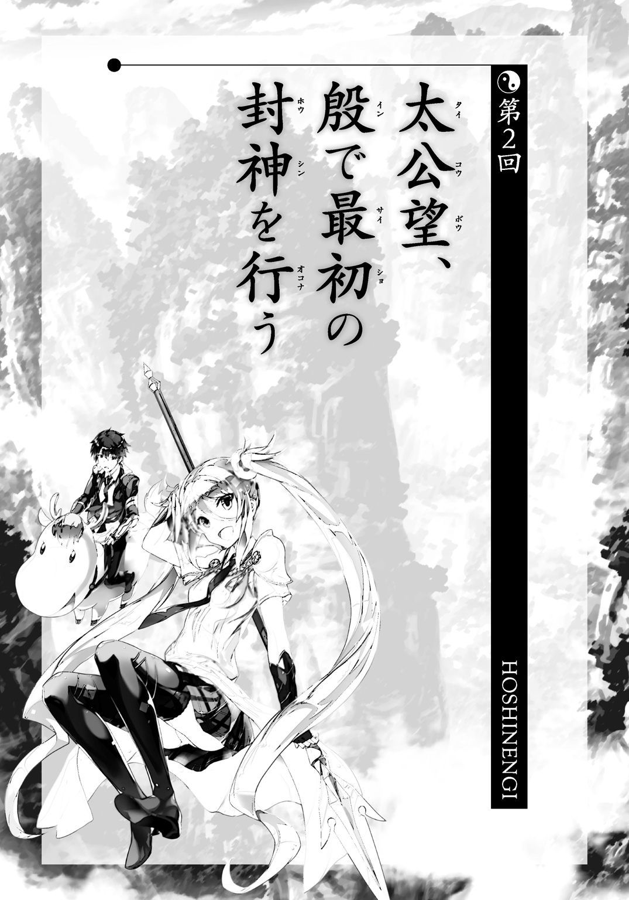
殷王国は、その世界の中で最大級の面積を有する国家だった。
東西南北の四大諸侯が百国ごとの小国家を管理し、さらにその頂点に殷の王が君臨する。まさに空前の大国家であり、とくに殷の首都である朝歌の繁栄は目覚ましいものがあった。
しかし、そんな大国家も急激に揺らぎはじめていた。
きっかけはある女性が君主、紂王の妻の一人として後宮に入ってきたことである。
その名は蘇妲己。小国家の国主の一人、蘇護の娘として後宮の一室に入った。あくまで名目であるが。真相は娘を後宮にやりたくない蘇護が素性の怪しい女を身替わりにしたという噂である。もしも、ばれれば厳罰だろうが、その女に王が惚れれば、何の問題もない。
すぐに紂王は、妲己の美貌に我を忘れ、まともな政治を行わなくなった。
城の主が乱れれば、城の風紀が乱れるのも当然のこと。
やがて、王城の中は頽廃的な空気で満たされるようになる。賄賂が横行し、清心の士が無実の罪で陥れられる。
その空気は城下の街にも蔓延した。酒池肉林の騒ぎが毎晩のようにくりひろげられる一方、殺人や強盗が多発するようになった。
街の喧騒と比べると、王城はまだ静かだ。まして、後宮はその王城の、さらに奥まったところにあるのだから、なおさらだった。
今日も後宮の中では、紂王が政務を行わず、妲己の部屋の中で眠りに落ちている。
その紂王のそばに座っているのが妲己だ。
狐の耳と、狐にしてはあまりに大きすぎる尻尾がふにふに動いている。その尻尾を枕代わりにして、紂王は眠りこけている。この尻尾の寝心地が最高なのは妲己も知っていた。彼女が寝る時も、この尻尾を枕にしているからである。
妲己は扇でぱたぱたと王にやさしい風を送っている。その様子は、我が子をいつくしむ母親のようでもある。
ただし、母親にしては妖艶にすぎる。妲己の顔は淡く朱が差した白桃のようだ。
そして、彼女は美しい声で、歌を歌う。子守唄ではなく、とてもキーの高い、この世界のものではない音楽だった。
後宮で妲己ほど美しい女も、妲己ほど歌が上手い女もいない。
「姉さん」
その部屋の中に、すっと一人、少女が現れる。何枚も薄絹をまとったその姿は異国の占い師のようだ。その薄布のせいで顔が見えそうで見えない。
妲己が妖性とでもいうものを体現しているとしたら、彼女のほうは聖性を有している。
「なあに、胡喜媚？」
男なら聞いただけでけいれんを起こしかねないような、なまめかしい声。
「差し入れです」
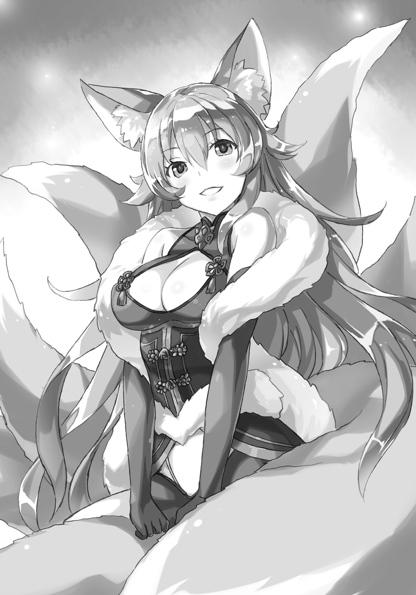
胡喜媚と呼ばれた少女がつぶやくと、部屋の中に、あぶらあげの満載した皿が置かれる。
「あら、これはなかなかの逸品ね。油の照り具合でわかるわ」
おいしそうに妲己はあぶらあげを食べながら、尻尾を胡喜媚の頭にやった。撫でてやっているらしい。薄布がずれそうなので、胡喜媚が手で押さえた。
「姉さん、今日ももふもふですね」
「そうよ。あなたももふもふしていく？」
「いえ、今日は報告があって参りました」
妲己と比べると、胡喜媚は真面目だ。
手の上にはいつのまにか青い透き通った玉が置かれている。
「先ほど占いを行いましたら、こんな恐ろしい結果が出ました。大きな楓のある庭で、灰色の嫉妬深き獣は、ゆらめく丘で虜となって、罪と罰の仮面をかぶるだろう――――と」
「抽象的すぎてわからないので、要約してちょうだい」
胡喜媚は未来を占うのが得意だが、結果を聞いても、誰も解釈できない。なので、結果だけ教えてくれればいいのだが、一応胡喜媚はそのまま話す。
「つまり、崑崙から刺客が降りてきたようです、姉さん」
「あらあら、困ったわね」
「何を今更。歴史管理者が来ることは予想がついていたじゃないですか」
胡喜媚は部屋の隅に立てかけてあった石琵琶をとると、たわむれにつまびきはじめる。低い音が部屋の空気をふるわせる。
「この琵琶の妹もそろそろ復活させる時では？ 私たちも本格的に活動を再開させましょう」
「う～ん......この子にはもっとしっかりと力を蓄えさせてあげたいんだけど......」
「姉さんのハイトーンヴォイスも、妹の心をかきたてるギターもなつかしいです」
「そうね。久しぶりにやってもいいかしらね」
「やはり、私たち『三姉妹』は音楽をやらないと。でないと、何をもって、三姉妹だと言うのかと言われてしまいますよ」
胡喜媚はなまめかしく、琵琶をぺろぺろと舐めた。薄布が顔から落ちそうで落ちない。やっぱり、顔は見えそうで見えない。
「あら、天子様はまた眠っていらっしゃるんですね」
琵琶のリズムがわずかに変わる。ようやく、紂王に気づいたらしい。
「姉さんに騙されて、かわいそうな方ですこと」
「かわいそう？ そんなことはないわよ」
少し心外そうに妲己は言う。
「間違いなくこの人は天才だった。百年先を見据えた国づくりができていた。でも、凡庸な家臣たちはその偉大さが理解できなかった。きっと、甘えたかったと思うわ。自分のことをわかってくれる誰かにね」
「だから、甘やかしていると？」
「そう。でもね、なによりも、この人は天性のリズム感があるの。宇宙を奏でることができる素質がある。もちろん、使い物になるのはもっともっと先のことだけど」
「ということは......まさか......」
胡喜媚の口元が少しばかり歪んだ。今の言葉は、妲己が紂王をエサから仲間に格上げしたことを意味する。
「仙人ではなく、人間が選ばれるとは思いませんでした......」
「本当に、それだけの力がこの王にはあるの。私たちとともに、宇宙を相手にできる」
それから自負のようなものをこめて、
「この人のことを一番幸せにしているのは私よ」
胡喜媚は何も言わずに苦笑するのみだ。そして、琵琶を弾く手を止め、静かにもとの場所に立てかける。
「では、崑崙の仙人の件は、適当な刺客を送りますね。モルモットで様子を見ましょう」
「ええ。あなたのほうが知恵は回るから。ああ、そうだ、胡喜媚」
「何でしょうか、姉さん？ また私に占っていただきたいんですか？」
「いえ、あなたの占いは別にどうでも――」
「占いによると.........四角い円がまわり、五つの月が重なる夜、セルロイドのドラキュラが笑いながらナイフを突き立てた。さあ、フィナーレがはじまる.........つまり、今日の天気は晴れです」
「あっ、そう。まあ、今、昼の十二時だものね。今の時点で晴れてるから、そりゃ、そうよね」
この占いは大げさだが、結論はけっこう単純である。一度や二度はいいが、会うたびにやられると、けっこうウザい。ぶっちゃけ、興味ない。
「ちなみに、私が言いたかったことは、それじゃないの。あなた、姉ぐらいにはちゃんと顔を見せなさいよ」
胡喜媚の顔は見えそうで見えないので、なんかストレスがたまるのだ。
「それは姉さんの命令でも無理ですね。これにて失礼します」
「もふもふしていってもいいのよ」
「興味ないです」
胡喜媚はぱっと姿を消す。
そのあとには鳥の羽根が一枚床に落ちているだけだった。
「たまには、もふもふしていきなさいよ」
◇ ◇ ◇
「けっこう、もふもふしてるんだな」
太公望が四不像（霊獣形態）に最初に乗った感想だ。
「うん、やわらかいから長時間乗る時でも疲れなさそうだ」
「褒め言葉、ありがとうございますっス！」
「でも、どうせなら、これで猫みたいな見た目だったら、もっとよかったな」
「いきなり、私の存在、全否定っスね......」
「でも、猫が好きなのは、趣味の問題だから仕方ないだろ。ほら、相手の話に合わせようと好きでもないものを無理に語っても、絶対にどっかでばれるもんだし」
白鶴が以前に、「あなたは、間違ったことは言ってないかもしれないですけど、その場を盛り下げます」と太公望を評していたが、こういう発言のことを指すのだと思われる。
正論が人を不幸にすることもある。
「それじゃ、殷のある世界を目指して出発するっス！」
崑崙の船のハッチが開く。その先は時空の海の真っただ中だ。ここを通り抜けて、殷がある世界に入っていく。
空を飛ぶのと時空の中を飛んでいくのとでは、移動の原理自体が違う。世界と世界の隙間を満たす時空は一般的な大気とは別の陰陽の気で満ちているからだ。
一部の仙人と霊獣以外はとてもじゃないが、時空の海になど出ていけない。太公望一人で行けば、おそらく遭難する。
四不像は崑崙から離陸し、時空を超えて、殷のある世界を目指す。とくに決まった名称はない。世界の数はとにかく多いからだ。十五桁の数字でラベリングはされているはずだが、ひとまず、殷のある世界とでも呼べばいいだろう。
時空の海から殷のほうに入ったら、今度は空を飛ぶ。霊獣にとってみれば、時空も空も同じように移動できる（ことが多い）。
「搭乗時間は体感時間で言うと、どれぐらいだ？」
「七時間ぐらいっス」
「じゃあ、着くまで寝ることにする」
「別にいいっスけど、眠って落下すると厄介っスよ？」
「大丈夫だ。座りながら寝る技術は学生時代に、とことんまで極めた」
快調に時空の中を四不像は突き進む。
「うおぇ......うえっ......」
殷の地に降り立った直後、太公望は激しく吐いていた。乗っている最中は耐えたが、着いた途端、ほっとしたのか、また逆流してきた。
「霊獣に乗るのってこんなに酔うものなんだな......」
「申し訳ないっス......。先輩に快適な空の旅を約束できるよう、これから頑張るっス......」
「いや、吐いて、すっきりした......。ああ、スープー、その姿は目立ちすぎるから人間に擬態しといてくれ。この世界はおそらく獣は浮かない」
「了解っス！」
どろんと煙みたいなものが出たかと思うと、四不像は少女の姿になっている。耳が多少気になるが、霊獣の格好よりはいいだろう。
「そういえば、殷のどこに行くっスか？ ひとまず当たり障りのない平原に降りましたっス」
たしかに周囲は荒涼とした原野が広がっている。一箇所、遠目に城壁のようなものが見えるので、あれがこのあたりの街なのだろう。
「実はあまり考えてなかった。むしろ、全然考えてなかったと言っても過言ではない」
「妲己は朝歌にいるんスよね？ 朝歌に乗りこんでみるっスか？」
「朝歌って何だ？」
「いや、殷の首都っスけど。聞仲さんがいなくなってからの朝歌は荒れてるみたいっス」
「え？ 聞仲って、あの金鰲の幹部の聞仲？ 俺でも知ってる大物だぞ」
「あの人、昔の殷で、仙人の力を行使しない条件で文官の最高官である太師として殷の政治を見てたそうっスよ。つか、今の話、配布されてた資料に書いてあったっスよね......？」
「ああ、ファイルで何か送ってきてたな。開いてないから知らなかった」
「え......？ 事前情報一切なしで来たんスか......？」
四不像は軽い衝撃を受けたらしい。顔が引きつっている。
「俺は説明書を読まずにゲームするタイプだから。人生は行き当たりばったり。ばったり倒れたらその時はその時」
ある意味、仙人らしい生き方かもしれなかったが、組織の人間としては問題だった。
「先輩、あまり仕事に熱意ないっスね」
「定められたレールの上を走るのが嫌だったんだ」
言ってみた自分でも、けっこう痛々しい発言だと思った。
「あっちに街らしきものがあるし、あそこで聞いてみよう」
――到着から三日後。
「ふ～ん。花の都の朝歌も今は荒れに荒れて、国の辺境では諸侯の反乱も起こっているレベル。しかし、紂王はまともに政務をやる気もなく、みんな悩んでいると。西伯侯姫昌に天下をとってほしいという意見も増えている――うんうん、だいたいのところはわかった」
昼間街に入っての情報収集で、太公望は殷についての現状を確認していた。夜は街を出て、平原にテントを張って寝る。食事は崑崙の携帯糧食がしばらくはある。
「で、軍事方面のトップの黄飛虎と、太師の聞仲と二枚看板で頑張ってたけど、今は聞仲がいないから黄飛虎だけでどうにかやっていると。忠臣がほかにいないこともないが、とてもダメになった紂王を止めることはできない――か。うん、典型的な滅亡前の国家だ。これは西伯侯が動くところが、歴史のターニングポイントになりそうだ。その途端、日和見を決めこんでた諸侯も草が風になびくように、反乱にまわるだろ」
「本当に行き当たりばったりだったのに、ちゃんと情勢をつかんだっスね......」
案外、動き出すと太公望は早い。といっても、やってることは情報収集でしかないが。
「今、やれることはこれだけだからな。もっとプロジェクトのメンバーが増えるまでは待機してよう」
「先輩、見直したっス！ やっぱり先輩はできる人っス！」
「君、ポジティブシンキングの人だと思うけど、俺を褒めると後悔するぞ」
――さらに三日後。
斬砥ィィィンッ！ 毅砥ィィィンッ！ 斬終ッ！ 窮イイィーン！
「あっ！ 一人だけ回復した！ 李誕、どうして隠しアイテムの場所知ってるんだよ！」
「マップをくまなく歩いてたら気づくよ」
「なんでゲームの持ち主の俺より詳しいんだよ！」
太公望は三日前からやってきた太上老君と連日ゲームに興じていた。
太上老君がきっちり太公望の部屋からゲーム一式をモニター含めて持ってきてくれたのだ。
「ところで、李誕」
「何、太公望？」
「あの部屋、カギかけてなかったっけ？ ゲームよく持ってこれたな」
「ボク、合鍵を持ってるよ」
「そっか。あんまりいろんな奴の部屋の合鍵作るなよ。俺以外だと訴えられるぞ」
「太公望の部屋しか作ってないから、大丈夫」
これで怒らないのだから、太公望は気が長いのかもしれない。
「あとね、掃除もしておいたよ。勝手に本とかゲームとかは捨ててないから安心してね」
「そっか。ありがとうな。カビくさかったか？」
「ボク、太公望のにおい、嫌いじゃないよ」
やっぱりカビくさいのかと思い、ちょっとショックだった。
「先輩、お菓子っス......」
四不像が出してきたのは携帯糧食のクッキーだ。仙人は動物性たんぱく質を嫌がる者が多いので、バターすら使っていない。一方で、人間を食らうのが大好きな、化物じみた仙人というのもいるのだが。
太上老君はもちろん四不像も知っている偉大な仙人なので、ちゃんと接客しないといけない。雑誌とかで、すごい仙人ランキングをやると、だいたい元始天尊・通天教主・太上老君あたりが上位を独占する。太上老君以外は組織のトップだ。
「うん、そこに置いといてくれ」
「ありがとうね、スープーちゃん」
四不像はありがとうと言えばいいってもんじゃないと思った。
「あの、そろそろ作戦とか立てなくていいんスかね......？」
「籠城戦（テントに籠もる的な意味で）」
まだコンビを組んで一週間ほどだが、四不像はこの先輩、人としてまずいのではないかと考えはじめていた。しかし、どうせ人じゃなくて仙人だからいいんだもんね～みたいなことを言う。絶対言う。
そして、それを悪化させているのがこの太上老君だ。
ただの引きこもりに一緒にゲームしてくれる美少女の友達がいたら、それで人生勝った気になってしまい、いよいよやる気も出なくなる。史上最悪の甘やかしなのではないか。
「今日はいい天気っスよー」
「テントから出ないからとくに関係ない」
「こんな天気のいい日は、散歩でもしてみると気分いいんじゃないっスかねー」
「ゲームしてるほうが気分がいい」
四不像は思った。たしかに長時間労働はきつい。だが、だらだら仕事がない日を過ごすのも、これはこれできつい。だいたい、これは労働と言えるのか。お菓子出してるだけじゃないのか。もっとクリエイティブな仕事がしたい。こんなことのために乗騎の試験受けたんじゃなかったのに。
いづらくなって、四不像はテントの外に出た。
「あとさ、李誕。お前なら知ってそうだから聞くんだけど」
「うん、何？」
「今回、俺たちが滅ぼすことになってる殷は、あの聞仲が生まれた国なんだろ。だとしたら金鰲が担当しようとしなかったのか？」
金鰲は崑崙と同じ歴史管理者の組織だ。崑崙のような船とは違い、巨大な大気のかたまりの中に、いくつもの居住用の星を浮かべた構造になっている。
「そんなの、直接金鰲に問い合わせてよ」
「嫌だよ。金鰲は妖怪仙人率が高いからさ。人間出身者が主体の崑崙とはウマが合わないんだ。お前みたいに無所属の仙人は気づかないかもしれないけど、同業者どうしの根深い対立みたいなのもある。働くならせめて楽しく働いたらいいのにな」
「だからって、ボクから情報を引き出そうとしないでね」
「そういうとこは固いな」
「ズルはダメってこと。太公望はその実力をちゃんと示さなきゃ」
太上老君は太公望にやさしい。けれど、甘いわけではない。外から見ると同じに見えるが大きな違いがある。でなければ、今より太公望はだらけていたはずだ。
「あいつらと戦争するために情報を欲してるわけじゃないからいいだろ。ただ、あいつらが殷を滅ぼすつもりなら自分がやらなくてもいいからラッキーだなと思っただけ」
言い訳のようになってしまったと、軽く悔やんだ。
話に気をとられていたせいか、太公望の操作するキャラ（これも太公望だが）がダメージを受けていた。これでは三面のボスの楊戩も、また太上老君だけで戦うことになりそうだ。それってゲームの持ち主として相当恥ずかしいぞ。
「意地悪じゃなくて、金鰲のことは本当にわからないんだけどね。金鰲に行くことなんて、めったにないし」
太公望とは対照的に軽快にゲームを進めながら太上老君が言う。ついにコントローラーを置いて、右手だけで操作しはじめた。まるで熟練のピアニストのようだった。
「でも、妲己のことはちょっとわかったかな」
重要度の高い話が出そうだ。振ってみるものだ。
「なんかね、妲己って人、この世界の人間まで仙人にしてるっぽいんだよね。そこまでして仙人がほしい理由がわからないけど、バックに組織らしい組織がないからなのかな。付け焼き刃の改造でどうなるんだって話だけど」
「ふうん。まあ、妲己も自分の護衛がほしいんだろ。自分が歴史管理者から狙われることになるって、自覚してるはずだ。仙人が増えるのは仙人界としてはあまりよろしくないがな」
「護衛のためだけってわけでもないみたい」
太上老君は画面を一度止める。
「なんか、来たみたいだよ」
「ああ、ゲームして待ってた甲斐があった」
太公望の言葉と同時に、テントの外にいた四不像があわてて、入ってくる。
「先輩、気づいたら囲まれてたっス！」
外に出ると、土と石でできた人型のものがテントの周りをぐるりと、とり囲んでいた。生乾きの埴輪みたいだと太公望は感想を抱いた。
「なんでかな。何もおかしなことなんてしてないはずなんだけど。もしかして、一緒にゲームやりたいのか？ 悪い、このゲーム二人用なんだ」
ざっと、異形の群れの数と特徴を確認する。数は百ぐらいか。不格好な剣のようなものを持っていると思ったら、手の延長で石や土を伸ばしただけだった。
出来の悪い石人形と土人形。
こんなことができる人間は存在しない。仙人が関与している。
「話が聞きたい。代表の仙人はどこか？」
すると、中年の男が二人、前に現れる。服装からこの国の高官とわかった。
「はっははははははっ！ 私の名は費仲。宝貝【酸切土梗】を妲己様より与えられました」
「同じく、尤渾。【誅人石】を妲己様から授けられた」
男たちが順番に名を告げる。その名前には心当たりがあった。
「聞いたことあるぞ。どちらも殷の廷臣だな。なんで、こんな仙人の真似事をしてる？」
「くっくくくくく。どうやら、殷に害をなす仙人がいると聞きましてね」
「成敗するためにやってきたのだ、国家転覆を目論む仙人め」
費仲という名前の奴がなんかウザいなと太公望は思った。よく、こんなキャラで出世できたな。自分が王だったら絶対左遷するぞ。
太上老君がテントから顔だけ出して「ピンチなら、手を貸すけど？」と言ってきた。
「別にピンチじゃない。お前はゲームをセーブしておいてくれ」
「ボクを守るために戦ってくれるの？」
「俺が守れるぐらい、弱くなってから言えよ。今日は珍しく戦いたいんだ」
太公望の手には杖と言えなくもない、棒のようなものが握られている。
「【打神鞭】を試してみたかった。こんな輩にならいくらでも使えるだろ？」
「先輩、私はどうしたらいいっスか......？ どうしたらいいっスか......？」
パニックになっている四不像が背中から抱きついてくる。だから、暑苦しいって。
「スープーはさがってろ。前に立つと危ないぞ」
太公望は四不像を背にかばうように立つ。
「少しは主人のことを信頼して見ておけよ。戦いは量ではなく質だから」
戦いにデザインセンスは不要だが、石と土の兵士が粗雑な出来なのは、力を使いこなせていないことの表れだろう。宝貝を生かすも殺すも使い手次第だ。
「ひゃっははははは！ よし、土の兵士、行きなさい！」
「同様に、石の兵士も進撃せよ！ 蹂躙せよ！」
二人の指導者の声を受けて、人型たちが動きだす。
しかし、太公望は落ち着いた調子で、
「っはっっ!!」
【打神鞭】を前に一度振り下ろす。
轟ォォォォォッッッ！
続けざまに耳をつんざくような烈風が起こる。風というよりは見えない壁がぶつかるような衝撃が【打神鞭】の前で発生していた。
敵の兵士たちは一瞬で平原の彼方にまで飛ばされる。二人の新米仙人も飛んでいったようだ。
その威力の反動で、太公望のテントまでつぶれかけたぐらいだ。太上老君が中に入っていなかったら、遠くに流されていったかもしれない。
四不像の「飛びそうっス！ タイフーンっス！」という悲鳴も聞こえた。人間状態の四不像は小柄だから、無理もない。
「元始天尊様がくれただけのことはあるな。風速はどのくらいかな？」
左手を額に当てて、太公望は急にスペースのできた原っぱを見つめる。
「さて、同じ要領で残りもやるか」
テントの背後にいた兵士たちにも、前に出て、【打神鞭】を振ってやる。兵士たちはあっけなく飛んでいく。中にはそのあとの落下の衝撃で壊れるような者もいた。所詮はまともに固まってもいない土や石だ。
「やっぱ、仙人は宝貝持ってこそ一人前だな。仕事量は半人前のままでいいけど」
数秒のうちに、テントを囲む無数の兵士は一掃された。相性も良い。こちらは典型的な広範囲攻撃用の宝貝だ。
しかし、一息つく暇はない。すぐにまた新しい人型が地面から生えてくる。
「ふふふふふふ！ 少し飛ばされてしまいましたが、それだけでは埒が明きませんよ！ この兵士たちは永久に出てきますからね！」
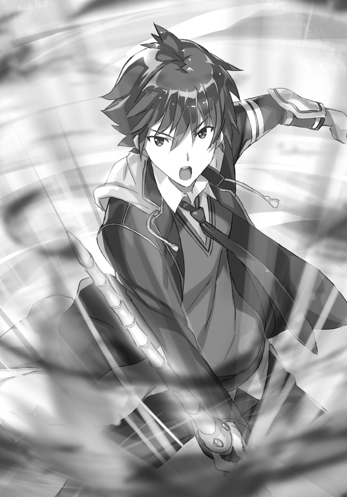
風に流されていた費仲が遠くから叫んでいる。
「そうだよな、お主らの宝貝をどうにかしないと話は終わりにならないよな。というわけで、とっとと宝貝を出して降伏しろ」
再度、顔を現した兵士たちを風で叩きつぶす。
「はっきり言うけどお前らのおままごとじゃ、本式の仙人には勝てない」
小さくため息をつく。つきながら、連中の背後の巨大すぎる存在を思う。
仙骨がある人間は、たしか一千万人に一人ほどの確率のはず。それはあくまで仙骨があるかどうかであって、そのまま仙人になれない者や仙骨があると気づかずに死ぬほうが大部分だ。
なのに、偶然、国の高官二人が仙骨を持っていたなんてことは――ありえない。しかも、仙骨を持ってる率が女より低い男が二人もだ。
だから、常識的に考えれば、以下のようなひどい可能性が出てくる。
たとえば――妲己は仙骨を作る力を持っている。
あるいは――妲己は何十年も前からこの世界に関与し、仙骨を持つ者が高官として自分の側近のような地位に来るようにコントロールしていた。
いずれにしろ、気の重い話だ。享楽めあての野良仙人にしては計画が遠大すぎる。
「繰り返す。すぐに宝貝出して、逃げ帰ってくれ。心配しなくても、追撃するほどお前らに興味もない」
「それは残念ながら不可能な話だ。なにせ、我々の宝貝は渡しようがないのでな」
今度は尤渾のほうが起き上がりながら言った。
「なぜなら、我々の宝貝はこの地面の土と石そのものだからだ！ 一日かけて、この土地の普通の土と宝貝の土を入れ替えた」
また小さな人型がわらわら湧いてきた。すぐに風で飛ばしていくが、めまいがしそうなほど壮大な宝貝じゃないか。無限かと思うほど、ぽこぽこ出てくる。
「そのスケールは考えてなかったな......」
となると、この新米仙人の素質が並はずれたものか、この二人の背後にいる妲己が化物めいた仙人なのか、いずれかだが――
「まあ、後者だろうな。兵士の質が低いし」
自分は冷めている。
これはゲームではない。現実だ。
だから、いつもつまらない。
「足下の地面すら敵になっている状態で、お前らが勝てるわけがないのだ！」
「けど、こんなザコをどれだけ生み出しても、俺も死なない」
「ふん！ 我々の力はまだまだこんなものではないわ！ 何もかもぶち壊してやる！」
地面が大きく揺れ、石でできた巨人が現れる。体長は三十メートルといったところか。
「ギャーッ！ こんなの無理っス！ 踏みつぶされるっス！」
四不像はそのあまりの大きさにさらなるパニックに陥って、走り回っていた。性格のせいもあるかもしれないが、落ち着きがない。リア充だったので、人生の中でも、あまり困難にぶつかったことがないのかもしれない。
「スープー、怖いなら霊獣に戻って空飛んでろ」
ぽんと、カバっぽい霊獣の姿に四不像は戻った。
「でも、先輩は大丈夫っスか......？ 一緒に逃げたほうがいいんじゃないスか......？」
「テントに籠もって体がなまってたし、ランニングするのもいいんじゃないかな」
あまりサマにならない調子で、太公望は走り出す。もちろん、巨人は追いかける。
「俺、スポーツは嫌いだけど、足は割と速かったほうなんだよ！」
「ふふふふふ！ 巨人を作れるのは尤渾さんだけではありませんよ！ 土の巨人スタンバイ！」
今度は石の巨人よりひとまわり小さな土の巨人だ。石より土のほうが固定させるのが難しいのだろうか。その分、まとめて十体も出てきた。
数が増えてもやることは同じだ。走って、走って、巨人に踏まれるのを防ぐ。
さほど太公望が真剣でもないのに、巨人は追いつけそうで、追いつけない。
仙人の身体能力は人間の比ではない。それでも、巨人は追い回してくる。疲れたから休むという知能すら石や土にはないだろう。
「一つ、尋ねたい。お前らは妲己のせいで国が乱れてるとは考えないのか？」
走りながら叫び気味に聞く。まだ二人とは距離が空いている。
「ははははは！ だから、何なんです？ おかげでこちらは甘い汁がたくさん吸えている。実に素晴らしいことですよ。さらに、こんな力まで手に入れることができました！ 我々より幸せな人間など、そうはいませんよ！ 国が乱れようがどうなろうが、我々は幸せです！」
「それに妲己様はこちらの利権を奪う気もない。無事に共闘ができるというわけだ！」
「うん。心を操られたというわけではなく、元から心が腐ってたってわけか。いや、元からというのは言いすぎか。やはり労働が悪い。働いているうちに当初の志も忘れ、賄賂をねだり、権力を保持しようと躍起になる。すべて労働の副産物と言っていい」
納得する人間の少なそうな極論めいたことを言って、勝手にうなずく。どうせ独り言だ。
逃げる方向を少しずつ費仲たちの側にシフトする。
「もう一つ、聞くぞ。俺を倒しに行けと言われて、怖くなかったのか？」
「ひゃっはははははは！ 何様のつもりですか！ 逃げてばっかりの仙人をどうして怖がらないといけないんですか？」
「そうだ、風を起こすだけで、いったい何ができる？」
かわいそうに。自分たちが捨て駒にされていることもわからないのであれば、妲己と共闘している気にもなれるのだろう。
無知も幸せの一つなのかもしれない。こいつらの場合、厚顔無恥と言ったほうがいいかもしれないが。
「さてと、仙人なら、倒しても問題ないよな」
走りながら【打神鞭】の機能を確認する。小さな文字が棒に刻んであるのだ。
風量 弱 中 強
種類 とばす きる まきあげる オート
どうやら風で切り裂くこともできるようだが、血なまぐさいことになりそうだし、今回はやめておこう。あまりひどいことをしたくないのだ。頑張る人の一部は他罰的になって、頑張ってない奴は死んでもいいとか言いだすことがあるけど、そんなわけない。頑張らない人が生きる余地だって必要だ。頑張っている人が突然燃え尽きて、何もできない人になることだってあるのだから。
まして、何があったのか知らんが、頑張って金と権力に固執する、こんな連中になっちゃったら不幸でしかないし。
「そろそろ、いいかな」
太公望はくるりと踵を返すと、風量を「中」から「強」に変える。
「はっ！ はっ！ はっ！」
立て続けに巨人の顔、それも軽そうな土の巨人のほうに風をぶつける。
「ひゃははははは！ やられたところで巨人は復活するだけです！」
「うん、わかってる。俺は無駄なことって嫌いだから」
土の巨人が風にあおられて倒れる。
「ふん！ ひっくり返したところで何度でも生み出してやるわ！」
尤渾が気炎をあげているが、そんなもの、聞く気もしない。
後ろの土の巨人が、倒れてくる巨人にぶつかって一緒に倒れる。
そのまた次も。また次も。また次も。
ドミノ倒しは収まる気配を見せない。むしろ勢いを増して加速していく。
土の巨人の勢いが、石の巨人までもを転倒させる。
その石の巨人の足下に費仲と尤渾の二人がいる。
「あっ！」「あっ......」
情けない驚嘆の声が、二人の最期だった。
そこから魂のようなものが二つ飛ぶ。
これが封神だ。魂魄が封神界に飛んでいったのだ。
術者が消えたせいで、巨人も消滅する。あとには、ただの石と土が残っているだけだ。
「頭脳戦――ですらないな。宝貝に慣れてないから、宝の持ち腐れになる」
「やったっス！ 超かっこよかったっス、先輩！」
上空から四不像が急降下してきて、抱きついてきた。霊獣だと抱きつけないので、ちゃんと直前に人の姿になって。
「そうか？ かっこいいか？ もらった宝貝で風を起こしただけだぞ」
体が引っつくのは苦手だが、勝利の時はまんざらでもない。四不像がつけているらしい、さわやかな柑橘系の香水が鼻腔をくすぐる。体育会系のくせに、そんなところは意外と女の子っぽい趣味だと思う。
「初仕事、ご苦労様」
太上老君も【風火蒲団】に乗って、太公望のところまでやってきた。魔法のじゅうたんか。
「太公望はやっぱり強いよ」
「あんなの、誰でも倒せるだろ。まあ、こんな調子でのんびりやる」
「うん、太公望は太公望のペースで仕事をするのが一番だよ。ボク、太公望のことは宇宙で一番わかってるから」
「それって俺本人より俺に詳しいってことか？」
「決まってるじゃん」
一切の躊躇なく、断言された。でも、人間、自分の背中すら見られないのだから、あながち間違いでもないのかもしれない。自分の実力を客観的に評価できれば、さっきの二人だって封神されずにすんだはずだ。
「それじゃ、ボク、そろそろ行くね。あのゲーム、飽きちゃったし。太公望が戦ってる間に、ラスボスまでクリアしちゃった」
「マジか！ たいして時間なかったはずだぞ！」
「ちなみにあのゲーム、ラスボスは元始天尊じゃなかったよ。真のボスがいるの」
「うう......きっちりネタバレしやがって......。ちなみにラスボスは誰だ？」
「教えてあげない。太公望、ボクにかまってくれないし。あっかんべー」
太上老君はタオルケットに乗ったまま、天にふわふわとのぼっていく。
「じゃあ、またな」
「バイバイ」
太陽と一体化したように見える太上老君が手を振ってきた。その手も次第に太陽と混ざって、見えなくなった。
「ひとまず、第一試合はこっちの勝ちだな」
「先輩、この調子でどんどん敵をやっつけるっスよ！ 妲己も余裕っスよ！」
四不像の主人を見る目もかなり改善されたらしい。もっとも、期待のまなざしというのはこの主人ははっきり言って苦手だ。
「しかし、一週間もいて、よくないこともわかっちゃったな。予想はついてたから、落胆はしないけど。希望を抱かなければ、落ちこむこともないのだ」
「なんか、またネガティブな処世術っスね......。ちなみによくないことって、なんスか？」
「仙人が襲ってきたということは、どういうことを意味する？」
「怖いっス」
ある意味、正解だが、太公望の言いたいこととはズレていた。
「俺たち、すでに妲己に気づかれてるってことだよ」
◇ ◇ ◇
「ふわぁあぁ、あっ、すみません......」
会議での報告中、呂岳はついついあくびをした。しゃべっている側なのに、眠気が体を支配している。自作の体力を奪うウイルスでも漏れているんじゃないかと疑ったほどだ。
金鰲の幹部級の会議は予定時間を残して終了した。あまりにも議案がなかったためだ。最高指導者の通天教主が閉会を宣言すると、幹部がぞろぞろと退出していく。
歴史管理者の一つである金鰲も、今はほとんど介入する世界がない。
最近のトラブルといえば、とある世界の殷という国が滅ばなくなっているということぐらいだが、それはすでに崑崙が関与しているので、金鰲は遠目に見ているだけだ。
このまま何十年も平和な時間が続けばいいのに。そんなことを考えながら、呂岳は自分の部屋のある「星」への帰路を「船」で進んでいた。「船」はオートで動くので、どうしても考え事の時間が長くなりがちだった。
金鰲の中に陸地はない。空間に浮かぶそれぞれの「星」に仙人は居住している。そして、店舗の「星」で買い物をし、職場の「星」で仕事をする。
「星」の間の移動は小型の「船」で移動する。ただし、「船」も「星」に似た球体なので、小さな「星」との違いはわかりづらい。どうも、金鰲の設計者は球形が好きだったらしい。
呂岳はぼうっと、「船」の窓からシャボン玉がいくつも浮かんでいるような金鰲の景色を眺めていた。
本当は、この白衣ももう着たくない。疫病を発生させて人をまとめて殺すだなんて、まるで死神じゃないか。
でも、呂岳はなかば諦めている。自分はすごく運の悪い仙人なのだ。どうせ、またろくでもないことが起こる。そんなことを考えていると、「船」が止まった。自分の「星」の前に来ていた。
「船」から出て、正面に来ると自動ドアが開く。眼前に巨大なコンピューターとモニターが見える。ここは彼女の研究室も兼ねていて、最新型の宇宙演算装置が置いてある。
そのコンピューターでずっとデータの入力をしている仙人がいた。
「聞仲、会議までサボって、まだ続けてるの？」
作業中のその仙人は頭に鹿のような角が生えている。髪は呂岳と同じように長いが、髪よりもまず角に目がいく。人間出身であるにもかかわらず、その仙人は生まれながらに異形の角が生えていた。そのせいで金鰲にスカウトされたようなものかもしれない。
「あと五分ください。あと五分あれば結果が出ますから」
「その台詞、昨日も聞いたわよ。五分どころか、十時間ぐらい経ってる」
それでも、聞仲はじっとモニターを見ながら、入力を繰り返している。こうなったら、聞く耳なんて持つわけない。どうして、こう一途なんだろう。
聞仲の頭から本当に煙が出ていた。知恵熱という言葉があるが、いくらなんでもやりすぎだ。
ジュースをコップに入れて、聞仲の横に置いた。
「休憩ぐらいとったほうがいいわよ。あと、煙が多くなってる。クラッシュするわよ」
「もうすぐ終わりますから。本当ですから」
「......昨日から寝てないでしょ。ていうか、何時間ぐらい起きてるの？」
「二徹ぐらいなら、私はかまいませんから」
「こっちがかまうわよ」
ワーカホリックにも限度というものがある。呂岳は頭を抱えた。
「あのね、存在してる国の命数の計算に間違いなんてあるわけないでしょ？ 殷は周によって滅ぶの。それは変わりようのない事実なの。さみしいかもしれないけど、認めなさい。仙人をやってれば母国が滅びるのはみんな一度は経験することだか――」
聞仲はくるりと呂岳のほうを振り向くと、
「もう少しだけ、迷惑をかけさせてください」
怖いぐらいに深く頭を下げた。
「個人の部屋で命数の再計算ができる設備を持っているのは、呂岳さんだけですから。私はどうしても、このまま殷が滅ぶとは信じられないんです！」
「わ、わかったから、頭上げなさい！ あなたも幹部なんだから簡単に頭を下げちゃダメ！」
呂岳はあわてて聞仲の頭を起こそうとする。
「ありがとうございます、呂岳さん――あっ......」
聞仲の頭が上がる前に、彼女の体が傾く。そのまま、呂岳のほうに倒れかかってきた。とっさに聞仲を受け止める。
ごほごほと苦しそうに咳きこむ聞仲。その咳には、血も混じっていた。
「ほら！ マジで封神しちゃうって！ 過労封神なんて前代未聞よ！」
「いえ、これぐらい頑張れば、だいじょ......」
「いやいやいや！ 大丈夫じゃないから！ ほぼ死にかけだから！ 私が何もしなかったらこのまま封神コースだから！ ほら、メンテナンスするから、その服脱いで！」
呂岳はその場で聞仲を俯せにさせて、背中を露出させる。
聞仲の腰のあたりは、肌の質感とは異質な金属やプラスチックの部分がのぞいていた。
「ったく......。半分ぐらい体を失って、また死にそうになるってどういうことよ......」
文句を言いつつ、呂岳はドライバーを部屋の隅の工具棚から持ってきた。すぐに部品をいくつかいじる。まず切れそうになっている電池を新しいものに取り替える。それから、トナーも、ドラムカートリッジも新しいものにする。
「なんでこんなに消耗してるのよ......。交換時期早すぎるし......。ああ、もう！ 何度も徹夜できるような体じゃないんだから！」
「かたじけないです。いつもご迷惑おかけしていますね」
「自覚があるなら、もうちょっと体に気をつかいなさいよ......。これじゃ、私、医療関係者というより、ロボット開発者よ。はい、後ろは終わったから、おなかもこっち向けて」
聞仲がゆっくりとあおむけになおる。肌にしては白すぎるところは、よく見ると機械になっている。呂岳が場所を覚えているボタンを押すと、ふたが開いて細かい機械ボックスのようなところが現れた。ここが聞仲の心臓部だ。
金鰲の中で、最も真面目な仙人が誰かと聞かれれば、たいていの人間は聞仲と答えるだろう。「あの方は金鰲でも働いているうえに、母国の殷の面倒まで見ようとしていた。いつ寝ているんですかね」とよく言われていた。
簡単なことだ。本当に寝てなかったのだ。不眠不休で働きすぎて、五十年以上前に一度倒れた。その時、同じプロジェクトの仲間だった呂岳に助けられて、一命をとりとめた。
働きすぎたところで、魂が傷ついたりすることはない。
しかし、肉体は別だ。過労がたたって、肉体的に聞仲は死にそうになっていた。
呂岳は、肉体の一部を機械に変えて、聞仲を救った。メンテナンスに終わりはないから、呂岳はずっと聞仲の近くにいなければならなくなった。
「そりゃ、そこまでボロボロになるまで働いたら、若くして幹部にもなるわ......」
聞仲がもっと普通の働き方をしていれば、こんな頻繁に保守作業が必要なこともないはずだ。いつ倒れるかわかったものじゃないから、呂岳の心労は減ることもない。
布を出して聞仲の角も拭いてやる。ふあぁっと蘭の香りがした。香水をつけているのか、ほんのりといいにおいがした。そんなことに気をつかう余裕があるなら寝ろ。
「これ以上問題箇所が増えちゃうと、脳にも手術がいる。そしたら、額に第三の目をつけたり、この立派な角もとることになるわよ」
「それは、ちょっと、もったいないですね......」
「だったら、自分をもっと大事にしなさい。よし、ちょっとは湯気も収まってきたかな」
湯気も機械のオーバーヒートによるものだ。服が蒸れないように、湯気は頭から出るようにしたが、そのせいで見た目に深刻さが足りなくなった。
命がかかっているというのに。
「聞仲、三日ぐらい休んだほうがいいわよ。機械の部分も昔より増えちゃってるし......」
「わかりました。では、殷の件が解決したら、休みをとります」
「だから、たまには休みもとらないと体が腐って――えっ、本当に？」
呂岳は半信半疑だった。耳の異常ではないかと思ったほどだ。
「はい。殷を守ることが私の存在意義みたいなものですから。それが一件落着すれば、少し骨休めをしたいなと思います」
「あなたは、出身国を愛しすぎなのよ。滅ばない国なんてないんだから、もっとおおらかに構えてないと。言っても聞かないの知ってるけど」
「はい、こればかりは譲れません。私、太師ですしね。一応、王の次に偉いんですよ」
そんなに殷が好きなら仙人になるべきではなかった、そう呂岳は思う。
「呂岳さん、もし、時間があれば、旅行にでも行きませんか？」
「気なんてつかわずに、ほかの誰かと行ってもいいのよ」
「でも、途中で故障したりしたら大変ですから」
なんだ、そんな理由かと呂岳はため息をつく。ため息でもついてないとやってられない。
「わかったわ。しばらくのんびりしましょう」
口から少し垂れていた血を呂岳はハンカチでぬぐってやる。ある意味、赤い血が出ているうちは、まだいい。それは体が生きている証拠だ。
「呂岳さん、あなたがいてくれてよかったです」
「私は、あなたが目の前で倒れてくれなきゃ、もっと楽できたのにね。仲間が動けなくなったら、医療知識のある仙人が見るしかないじゃない。ああ、やれやれ」
「殷の件が片付いたら、本当にゆっくりしますから。あと、呂岳さんにも何かお返しをしないと......」
いや、何度も命を救ってるお返しなんて、ちょっとやそっとじゃできないからな。
呂岳も踏み倒されるつもりで助けているのだ。
聞仲には悪いが、とっとと殷が滅ぶという結果が出てくれればいいと呂岳は思った。そんな呪いのようなことを考えて、機械ボックスのふたを閉じる。聞仲も服を元に戻す。
ピコン！
電子音がモニターから鳴る。聞仲はよろよろと体を起こすと、画面のほうに目をやった。
「解析が終了しました」の文字が表示されている。
聞仲はおそるおそる確認のボタンを押す。
ＢＣ一〇四六年 西岐（周）の姫昌の反乱、殷によって鎮圧される。
ほうけたように、聞仲はその結果を見つめて、それから叫んだ。
「ほら、殷は滅ばないんだ......。殷は存続できるんですよ！」
「ちょっと見せて！」
すぐに呂岳は聞仲を押しのけてコンピューターを調べる。
何か不確定要素の入力に漏れでもあったんじゃないのか？
意図的に結果が歪むような因子でも入れてるんじゃないのか？
「すべて......正常......。念のための再計算をやっても同じ......」
呂岳は愕然として、モニターの結果を見ていた。
「やった、やった！ 殷は助かるんです！」
聞仲は動けなくなったばかりのくせに、子供のようにはしゃいでいる。また倒れるんじゃないかと呂岳はひやひやする。本当に、損な役回りをさせられている。
「でも、金鰲の公式発表では殷が滅ぶことになってるし、それは崑崙も同じだし......」
「そういえば、そうですね」
急に聞仲の声が冷たいものになる。
身体感覚的に永すぎる無言の時間が続く。
呂岳はまずいことになったと思った。
自分たちの知らないうちに何が起こっていたのか、そして、生真面目な聞仲がどんな結論を出すか、だいたい想像がついた。
「なぜ、殷が滅ぶという誤りが複数の歴史管理者の間で共有されていたのか。崑崙と金鰲の幹部がグルになっていた――そういうことになりますよね」
聞仲の目は仕事の時のような、誠実なものに戻っている。
そして、誠実だからこそ、聞仲は深く憤っている。
「最初からおかしいと思っていました。殷の治世は実に安定していました。王一人が少し革新的だったぐらいで国が滅ぶほどの反乱が起こるとは思えません。仙人界の上層部は滅ばないはずの国を滅ぼそうとしていたんです」
「でも、どうして殷を滅ぼす必要があるのかしら......？」
「妲己という仙人のせいですよ。殷の王妃におさまっているその仙人を、殷ごと滅ぼそうとしているわけです」
聞仲の声は静かだ。だからこそ、呂岳は恐怖を感じた。
「そんな......野良仙人一人のためにそんなことをする......？」
「理由は別にあるのかもしれません。ですが、理由が何であろうと関係のないことです。大切なのは――滅ぶはずのない国が仙人の都合で滅びつつあるということですよ。白を黒とするような悪の所業、断じて放ってはおけません」
呂岳は何も反論することができない。
聞仲の言葉はまっとうすぎるほどの正論だ。
そう、いつも聞仲は理想主義の中で生きている。その理想を実力で形にしてきた。時に、体が壊れるほどの無理をしてまで。
「私たちは、歴史のゆがみを糾す歴史管理者です。なのに、仙人が自分たちのために歴史を動かそうとしている、こんなことを許しておけば、正義が死ぬ」
呂岳は聞仲の目を再び見た。
もう、すでに彼女の中で覚悟が決まっている。
「すみません。旅行は延期になっちゃいそうですね」
一度、聞仲は笑みを見せる。
「私は戦います。金鰲とも、崑崙とも。仙人としてのプライドにかけて。たとえ、この身が朽ちようとも。どんな辱めを受けようとも」
聞仲は右手を胸に置いて、そう高らかに宣言する。
「それは、反乱の意志アリと受け止めてもいいのよね？」
金鰲の幹部の一人として、呂岳はそんな言葉を聞き流すわけにはいかない。
「あなたはお人よしすぎるわ。どうして、私の前でそんなことを言うの？ しかも私は半分機械でできてるあなたをスクラップにすることだって、たやす――」
聞仲は、遠慮がちに呂岳のほうに手を差し出した。
「その手は何？」
「私が故障した時、なおしていただけませんか？」
「故障をなおすふりをして、あなたを殺すわ」
「医は仁術と言います。つまり、呂岳さんは人格者なんですよ。患者の私が言うんだから間違いありません」
聞仲は昔からこうだった。細かい作戦も立てずに、無理矢理にぶつかってくる。
自分を過去に助けてくれた先輩を疑うことなどありえない。
こんな性格にした責任の一端は自分にもあるのだと呂岳は反省する。信念を貫いて、体が壊れかけた時、その先の未来を作ってやったのは呂岳だった。
おかげで聞仲は挫折を知らない。まっとうに生きればすべてがいいほうに進むと今も考えている。
呂岳は視線を聞仲の手から、その顔に移した。よくも、まあ、そんな晴れ晴れとした顔ができるものだ。
「余計なことをしなければ、平穏に生きられるのよ」
「私、命は自分以外の何かに使います。でも、呂岳さんに生かされた命ですから......もし私を野放しにできないのなら――メンテナンスの時にでもその命を取り上げてくださってけっこうです」
呂岳は思った。
ほら、自分は本当に運が悪い。
のんびり暮らすなんてできない星の下に生まれたのだ。
「私、自分が助けた人間をみすみす死なすのって耐えられないの」
そして、その手を握る。聞仲の顔が輝く。帰ってきた飼い主を見つけた犬みたいに。
あながち間違いでもないか。
問題は、このペットは大きすぎて飼い主を引きずっていくことだ。
「私が手を貸すからには、絶対に勝つからね」
「はい！ 誤った歴史を糾してみせます！」
こんな純粋な目をしているから、この仙人は体を維持できなかったのだろう。
「さてと、いくらなんでも頭数が足りないわね」
幹部である聞仲にも呂岳にもそれなりの部下がいるが、事を起こすとなると心もとない。あと、幹部クラスで確実に自分の側につきそうな者は――
呂岳はコンピューターのボタンを一つ押す。画面がぱっと切り替わり、仙人の姿が映る。
『あら、お姉様からご連絡だなんて珍しいですわね』
どこか、おっとりした雰囲気のある少女だ。もし、動物にたとえるなら、タヌキといったところか。
この仙人とは同郷で昔からよく面倒を見ていた。そのせいか、呂岳によくなついている。
「趙公明、あなた、私のこと、好き？」
『はい、お慕いしておりますわ、お姉様』
「じゃあ、私のために死ねる？」
直球で聞いてみた。
『はい』
迷いもなく、にっこりと趙公明は答えた。
『せっかく、仙人として高い地位も得たのですから、一度ぐらい大勝負をしなければもったいないですわ。それにお姉様と一緒に戦うのなら、何も怖くありませんもの。ともに、一花咲かせましょう！』
「私の後輩ってこんなのばっかりなの？」
ため息をついたあと、呂岳は聞仲のほうに目をやった。
「一人、いいのが見つかったわ」
「仲間を死なせるつもりはありませんがね」
少しだけ聞仲の角のある頭から湯気があがる。
反乱の狼煙ということか。
「湯気が出てるから、水、飲んでおいたほうがいいわよ」
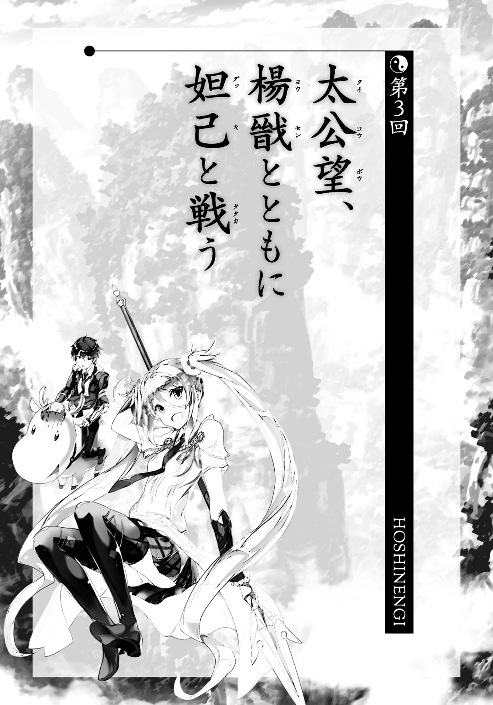
「うう......水......。ミネラルウォーターとか贅沢は言わないから、何か液体......」
朝歌郊外の平原、太公望はあおむけになって、空を見上げながら、手を伸ばしている。数秒先には息絶えてしまいそうな有様だ。
殷に降り立ってから最大のピンチだが、敵の襲撃を受けたわけではない。食べるもの、および飲むものがなくなったのだ。
いくら、仙人といっても何も口にしないままでは体のほうが保たない。食べるものがないのはまだ耐えられるが、水がないと肉体の生命活動に差しさわりが生じる。
「先輩、ここには何もないっス......。耐えてくださいっス......。きっと、これを耐えれば、苦痛がまた消えるターンに入るっス！ いわゆるランナーズハイっス！」
人間形態の四不像は手を握り拳にして 応援している。ただの応援なので、もちろん渇きは癒えない。少女の涙で生き返る人間がいないのと同様、少女に頑張れと言われても、のどは潤わない。
「ランナーズハイって、脳内麻薬が分泌されてるようなもんだろ......」
「私はサッカー部の副々キャプテン時代、そうやって強くなったっス！」
副々キャプテンって偉いのか、偉くないのか、どっちなのか。けど、四不像はやはり、体育会系だったのか。どうりで、すぐに頑張らせようとしてくるわけだ。根性論は人を病ませ、世界を蝕むので、至急滅ぼすべきだ。
「ところで、スープーは飢えは大丈夫なのか......？」
ぎくっ。そんな顔を四不像はした。
「おい、まさか、一人だけ何か隠し持ってるんじゃないだろうな......」
「実は......」
近くの雑草を四不像はぶちっと手で抜く。
「私、シカ科なんで、草食べてれば平気なんスよね......。毎夜、霊獣形態になってむしゃむしゃ食べてたっス......」
「そうか......。お前まで飢えるようなことがなくて、よかったよ......」
「先輩、なんとなくかっこいい台詞ですけど、意地張らずに働いてれば、こんなことにはならなかったっス......」
「つ、追加の労働なんてしてたまるか......。働くというのは人生における時間の損失だ......」
「不老不死の仙人が言っても、あんまり説得力がないっス......」
どうして、こうも飢えることになったのか。これには別段深くもない事情があった。
敵の仙人二人を無事に撃退した太公望だったが、場所を移動せざるをえなくなった。このままとどまるのは妲己に狙ってくださいと言っているようなものだ。
それで、どうせ移動するならと進路を殷の都である朝歌に向けた。本来なら四不像を霊獣にして、飛んでいったほうがはるかに速い。しかし、四不像はあまりにも目立ちすぎる。敵にその存在を捕捉される危険が高くなる。
結局、徒歩でゆっくりと進む方法を選択した。別に急ぐ旅ではないので、問題はない。最初から援軍の仙人が来てから朝歌には入る予定だったからだ。
しかし、一点、問題が起こった。
食糧が尽きた。
これまでずっと崑崙から持ってきた携帯糧食のクッキーに頼っていた。それが移動十日目にしてなくなった。同時期に崑崙から持ってきた水も尽きた。
クッキーのせいで、のどの水分が取られて、消費しすぎたのだ。
街の横を通ることもあったが、太公望は殷の貨幣など一切用意してなかった。
四不像は、ああ、これはどこかの街で働かないといけないなと思った。
しかし、太公望は――
「俺は働かない。パンがなければ飢えればいい」
――などと、ふざけたことを言いだした。
「考えてもみろ。俺たちは崑崙の任務でこの世界に来ている。決して物見遊山の観光ではない。つまり食事ぐらいは支給されて当然なのだ。これは崑崙側の怠慢だ。よって、俺に働く義理などない。崑崙から食糧がやってくるまで、このまま耐える」
「そんなに働きたくないんスね......」
四不像もそろそろ主人の性格がわかってきた。
「ああ、だいたい得体の知れない旅人を雇ってくれるような仕事といえば、肉体労働系に決まってるしな。俺に一番向いてないタイプだ。それに、腐っても七十年以上生きてる俺が四十や五十しか生きてないオッサンに若造扱いされて、こき使われるのは嫌だ」
「わかりましたっス。それじゃ、私が働きに出る――」
「ダメだ」
太公望は両手をクロスさせて×を作る。
「スープーはあくまでも俺の霊獣だ。お前も働くな。あと、霊獣にだけ働かせるのは罪悪感あるし。お前がこの時間、働いているんだなとか考えながら、だらだらするのはきついだろ」
「先輩......なんだかんだで後輩想いなんスね！」
ポジティブに解釈して、また四不像が抱きつく。これだけ毎日のように抱きつかれると、太公望でなくてもありがたみが薄れるかもしれない。
「罪悪感は、ぐうたら生きるうえで最大の敵だからな。うかつに生じさせてはいかんのだ。反対に、自己正当化の理由は多ければ多いほどいい」
――そして、ついに朝歌の郊外あたりで、力尽きてしまったというわけだった。
これでは四不像一人で働きに出かける余裕もない。その間に、主人のほうが干からびてしまいそうで、危なっかしい。
飲まず食わずを貫いたせいで、太公望はほとんど立てなくなるまで衰弱していた。
「スープー、お前には今まで世話になったな......。仲間たちが手を振ってる......」
「先輩！ それ幻っス！」
「断食行で無理して死んじゃうだなんて、情けないな......」
「勝手に修行だったことにしてるっス！ そんなに志は高くなかったっス！ 死ぬ間際までセコいっス！」
「お花畑、きれいだな......。バナナにマンゴー、ナツメヤシ......」
「お花畑の内容が食べられるものばっかり！ やっぱり飢えてるっス！」
「あれ、元始天尊様じゃないですか......。俺もそろそろ封神界に入りそ――」
「いいかげんにしろっ！」
ぽかりと太公望はハリセンで叩かれた。これは幻覚ではなかった。
「ぶげほっ！」
その威力が強すぎて、太公望は思いきり宙を舞った。何も食わずにやせ細っているので軽くなってるのかもしれない。
その少年はまさしく、元始天尊だった。殷に来たからか、珍しくボールには乗っていないが。
「ったく！ 食べるものがないとか言って、じっと耐えしのぐとか頭おかしいよ！ それぐらい、現地調達すりゃいいじゃん！ 子供か！」
「師匠の見た目で子供かって言われたくないですけど......。これに関しては謝罪しませんからね。食糧よこしてくださいよ......」
「ああ、わかったよ！ その代わり、食糧渡したら、飢えてるふりして働かないのもやめてよね！ 本当に非常識だ！」
「非常識？ それなら作戦中の現地までのこのこやってくる崑崙のトップも相当に非常識ですよね、元始天尊様？」
すっくと起き上がると、元始天尊の姿をした何者かに指を突きつける。
もう情けない姿を見せる必要はなさそうだ。
生気の宿った目で応対してやろう。
「まあ、でも、いくらなんでもそんな非常識なことを師匠がするはずないでしょうから、偽者ということでよろしいですよね？」
「し、失礼だな、君は！ どう見てもぼくはぼくだろ！」
「わかりました。それじゃ、ボールに乗ってくださいよ。あれ、【盤古旛】っていう超強力宝貝だから、肌身離さず持ち歩いてるはずですよね？」
「そ、そうだね......」
元始天尊はボールをその場に出すと、上に乗ろうとして、すぐ落下した。予想以上にバランスをとるのが難しいらしい。
「はい、偽者確定。はい、看破。元始天尊様は寝る時以外、そのボールの上で過ごしてるからな。むしろ、たまにボールの上で寝てるからな。バランスが悪いところでしか眠れないという、難儀な人なんだ。誰だか知らないけど、正体を現せ」
元始天尊の目がやけに鋭いものに変わったかと思うと――
その姿は少女のものに変化する。
日本の女子高生の制服みたいなチェックのスカートに、白系のセーターにネクタイ。その要素だけなら、ああ、女子高生っぽいなと思うことだろう。もっとも、羽織っているマントは少し余計だが。
ピンク色のツインテールも含めて、要素だけならかわいい少女の範疇に入りそうだ。
ただし、まとっている空気のほうはずいぶんと異質だ。
なにかトゲのようなものが雰囲気にある。手には身長よりも長い三叉の槍が握られているし、目つきは猛禽類みたいに鋭い。
少女の横には、人間が乗ってもびくともしなさそうな大きな白い犬が控えている。彼女の乗騎なのだろう。こちらは温厚そうだ。
「噂のとおり、悪知恵は働くようね。今回の妲己封神計画の援軍として派遣されてきた楊戩よ。この犬は乗騎に使ってる哮天犬」
「えええっ！ あの天才仙人と名高い楊戩さんっスか！ 幹部の十二使とタメ張る実力者じゃないスか......」
四不像がびっくりするのも無理はない。ポジションからすると、自分の主人より格上に当たるような仙人がやってきたのだ。
若手の出世頭である実力者で、将来の幹部と目される位置にいる。ずっと休んでいた太公望と比べるのが失礼なほど実績もある。
「元始天尊様はすごい人を送りこむって言ってたけど、ちゃんと守ってくれたみたいだな」
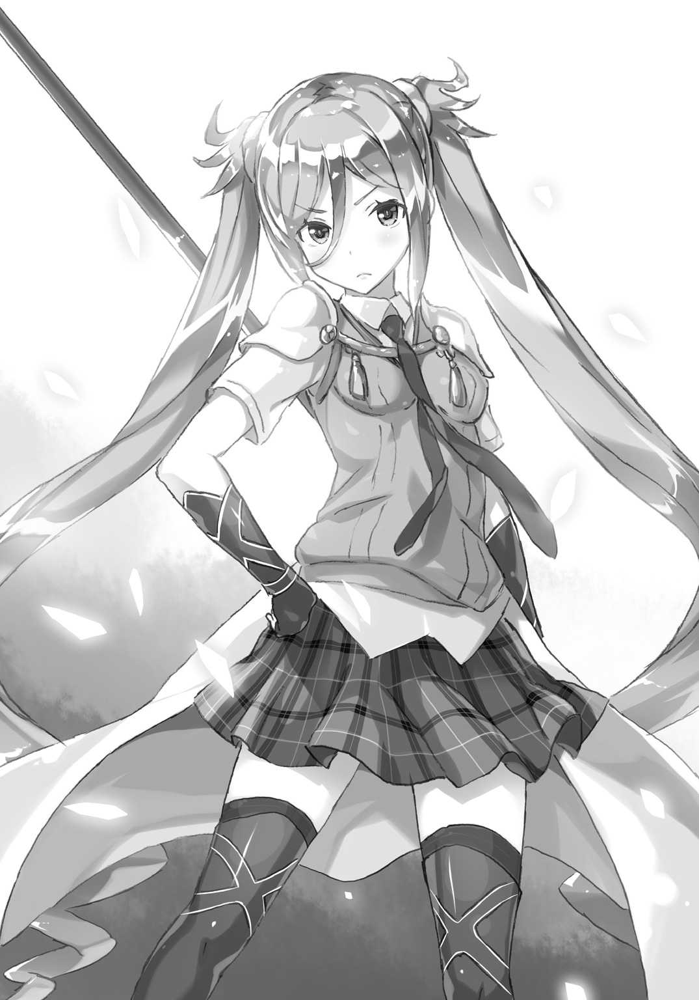
これだけの人材が送られてきたとなれば、妲己討伐も現実味を帯びてきた。リーダーとしての自覚も少しぐらいは湧いてきそうだ。
もっとも、それで素直に喜べはしない。
「逆に言うと、楊戩が助っ人に来ないといけないほど、妲己は大物ってことか」
ろくでもないプロジェクトに自分は参加しているようだ。
だが、ろくでもない事態は、もっと目の前に迫っていたのだ。
「来てくれてありがとう。俺は太公――痛っ」
楊戩に蹴られた。
軽く蹴ったとかではなく、ドカッとかガスッとかいった乱暴な音が似合いそうなほど、容赦なく。その一撃で体がよろけたぐらいだ。
「おい、お前、何を......」
「うっさい。黙れ」
抗議しようとしたら、また蹴られる。
「あなた、やり口が陰険なのよ！ 援軍送れってアピールで、ハンガーストライキとか信じらんない！ 死ねっ、死ねっ！ つか、殺す！」
バギッ、ドグッ！ 濁音の入った音が容赦なく聞こえてくる。聞こえちゃいけない種類の音だ。そのまま地面に沈む。
四不像も異常事態に気づいたのか、止めに入ってきた。
「あの......楊戩さん......先輩が死んじゃうっス......。先輩が非常識だったのはまちがいないっスけど、それぐらいに――」
「邪魔すんじゃないわよ」
四不像も同じように蹴られた。
「攻撃される覚悟もないのに邪魔しようとするんじゃないわよ。ったく！ どうして、こんなセコいバカの下で働かないといけないのよ！ ランクとしては私のほうが上でしょ！」
「た、助けてっス......。暴力反対っス......」
乗騎も仙人と同行する以上、争いに巻きこまれる危険は十二分にある。が、まさか最初の被害が味方の仙人からってどんな事態なんだ。
「ああ......思い出した......。楊戩って、超暴力的ってことで有名だったな......」
むしろ、その性格と言動のせいで、昇進が止まったとのもっぱらの噂だ。こんなの、リーダーにしたら、部下がどんどん辞めていく。
「じゃあ、何？ 私におしとやかになってほしいっていうの？ そういう台詞は自分が真面目になってから言いなさいよ」
ぐりぐりと靴で踏まれた。
「お望みなら、今すぐ子供作れない体にしてあげるわよ？」
「お前......実は楊戩に化けた敵の仙人だろ......。というか、そう思わせてくれ......」
味方から封神されそうになるとは......。おおかた、自分の下で働くという人事は楊戩のプライドが許さなかったのだろう――と推測はしてみるが、この調子だと誰にでもこういう態度をとっているのかもしれない。
「あなたの噂は崑崙でよく聞いたわ。どんな変人かと思ったけど、見た目はフツーね」
「なあ、靴で背中踏みながら言うのやめてくれないか......」
「黙りなさいよ。舌ごと刺すわよ」
三叉の槍で脅された。話し合う余地がない。
「私の聞いている二つ名だけでも、『元始天尊様の懐刀』『崑崙一の詐欺師』『最年少の十二使候補』『ヒキニート』『有休全消化者』『十五年間、有休を使い続けた男』」
「俺はニートじゃない。あと、最後の二つはたんなる事実だ。『最年少の十二使候補』っていうのは、正直盛りすぎじゃないのか」
「私もそう思うわ。だいたい、能力あっても十五年も休んでたら、人事評価最悪でしょ」
上司を殺そうとしている仙人が人事評価にケチをつけないでほしい。
「十二使になんてなったら、サボれなくなるからな。昇進不可能なぐらい休み続けてやった」
「へ～、自分は実力あるけど、それをどうにか隠してるって設定なのね。なにげに自己評価は高いんだ。そうよね。スペックが高いって設定にしてないと、自分が活躍できない現実に耐えられないもんね～。いつまでも、自分を騙し続けてね～」
などと言いながら、また靴でぐりぐりやってくる。Ｓにもほどがある。
「おい、心にまで傷を負いそうだから、このあたりにしといてくれ......」
暴力振るわれて辞めるんだったら、おそらく許されるだろう。
やっと来た仲間がこの楊戩って、やはり懲罰人事じゃないのか。
「ちょっと、こっち向かないでよ。パンツ見えちゃうじゃない！」
「だから蹴るなって！ ラッキースケベとか思える状況じゃねえよ！ リアルに肉体の危機だ！ なんでこんなのが平然とクビにならずにまかり通ってたんだ？」
心の余裕がなくなってきた。まさか、強敵がこんな近くにいるとは思わなかった。そろそろ【打神鞭】使って応戦するしかないのではないかと真剣に考えはじめた時――
「すぐチャラになるんだから、気にしないの」
奇妙な言葉が飛んできた。
楊戩がしゃがみこんでくる。手ぐらい差し伸べてくれるのか。今更その程度のやさしさではチャラにはならんぞ。
手というより、やけにとがった付け爪が伸ばされてきた。
見た目もかなり禍々しい。この世界の不安を象徴しているようなマーブル模様だった。熱帯に潜む猛毒を持つ蛇の柄にこんなのがあった気がする。
「今度はその爪でいたぶる気かよ......。そういう、先端が刺さる系の拷問は苦手なんだ......」
「ちくっとはするけど、我慢しなさい。あまりうるさいと封神するわよ」
あながち冗談とも言いきれないので、黙らざるをえない。
楊戩の爪が、腕を押した。
痛みが走ったような気がしたが、なぜかそれが一瞬にして消えた。
むしろ、さっきまで被ったダメージもウソのように消えた。
「あれ、なんか急に体が楽になったような......」
「これは、宝貝【向春爪】。つついた人間の傷を全快させるの」
「おい、なんだ、そのチートな宝貝は......」
「ただし、私が与えたダメージに限るんだけど」
即座に利用価値がなくなった。
おおかた、本来は深手を負って降伏した敵仙人を助ける時にでも使う宝貝なんだろう。虐待した仲間を回復させるためでは断じてない。
楊戩は四不像にもちくっと爪を立てた。「あっ、痛みがなくなったっスー！」じゃないぞ。こいつ、あとで治るならいいだろって論理で殴りまくってたんだぞ。
ひとまず、起き上がる。いつまで倒れてるんだと、また蹴られそうだ。
「あ～あ、わざわざ出向いてきたはいいけど、やっぱりたいした男じゃないわね」
相変わらず、楊戩の口は悪いが、言葉だけなら気にならなくなってきた。
慣れてきているのか。悪い兆候だ。
「あのね、【向春爪】があるからって、誰でも殴ったり、蹴ったりしてるわけじゃないのよ。まず、女の子には手加減してる。あと、上司にも手加減してる」
手加減していようが、女子も上司も殴ったり蹴ったりするという事実にむしろ引く。
「ちなみに、私は全力であなたを蹴ったわ。それが何を意味するかわかる？」
「お前がろくに出世できてない理由がわかる」
「次言ったら、刺すわよ」
また、三叉の槍を向けられた。武器で脅してくる部下とか、有能とか無能とか以前の問題でアウトだ。
「私はあなたなんかリーダーとして認めてないの！」
びしっ！ そんな音がしそうなぐらい、まっすぐ指を差された。というか、刺された。付け爪をはずした指先で額をぐいぐい押されている。一時的に自分をドＭにする宝貝とかないと乗り越えられそうにない。
「口元を隠すと、女性は実際より美しく見えるわ。想像は現実を凌駕しがちだもの。あなたの場合もそれと同じよ。全然表に顔を出さないせいで、存在が謎に覆われてる。結果的にとんでもない力を秘めた存在であるかのように見えるだけ！」
「うんうん。やっぱり楊戩は生半可な仙人とはレベルが違うな。俺の存在をよく把握してる。さすがは天才と言われているだけのことはある。俺はほんとにたいした仙人じゃない。今回みたいなリーダーをやれるタマじゃない」
こいつの人格はともかくとして、言葉に間違いはない。
しみじみとうなずいた。
「なので、お前が代わりにリーダーをやってくれ」
転んでもタダでは起きない。どさくさにまぎれて、リーダーを押しつけてしまえ。
「それは無理よ」
「なんでだよ」
「この作戦のリーダーはあなたとはっきり決まってるわ。それを現場の判断で変えることなんて許されないから」
「くそ！ そんなところだけ真面目か！ もう下克上とかしろよ！」
「今の私にできることと言えば、あなたの実力を見極めることね。リーダーにふさわしくないと判断すれば、殴ったうえでリーダーからはずすべきだと上に正式に申請するわ」
「よし、今すぐ申請してくれ」
「いいえ。ちゃんと冷静に適性を見て、決めるわ。すぐにはわからない部分もあるから」
「だから、なんでそこは真面目なんだよ！ 勢いで弾劾しろよ！ 俺がやる気ないのは明らかなんだから交替してくれよ！」
「先輩！ あまりにも発言が卑屈すぎるっス！」
ついに四不像がツッコミを入れてきた。
「まあ、さほど時間を置かず、あなたの問題点が白日のもとにさらされると思うわ」
楊戩の素行にも多数の問題点があると思ったが、白日も何も最初から隠されてないので、これ以上マイナスになりようがない。
「ふっ、その割にはすでにお前は一点、見誤ってるようだけどな」
にやりと笑ってやる。ただ、笑った直後に攻撃を受けるんじゃないかと内心ひやひやした。
「まさか......。いったい、何よ......？」
「俺は飢えているふりをして、お前を待っていたわけではないぞ」
「えっ？」
楊戩のこめかみがぴくりと動いた。
「俺はな......本当に飢えていたのだ............」
そのまま、力なくその場にくずおれた。
「何か水をくれ......。あと、胃が動きそうにないから、流動食......」
「もう、そのまま土に還ってもいいわよ」
かなり辛辣な言葉が飛んできたが、
「水もあるし、携帯糧食も用意してるわ。朝歌に入る前に、とっとと備えなさいよ」
多少の慈悲はこの暴力的な天才もかけてくれるようだった。
二日後に一行は朝歌に出発することに決めた。
太公望の衰弱ぶりがけっこう深刻だったのだ。
そして、楊戩が着いた日の夜。本格的な作戦会議が開かれた。
というか、強制的に楊戩が太公望を自分のテントに連れていった。
楊戩のテントは、外部から見ると、普通の三角屋根のものだが、幕を開けて入ると、内部は３ＬＤＫはあるような空間が広がっている。天井もなぜか板張りでそのうえ高い。どう見ても、高級マンションだ。
「これ、どういう仕掛けっスか......？」
四不像は入るなり、理由がわからず、周囲をきょろきょろ見回している。太公望もタネはわかるが、経験するのは初めてだ。
「空間をいじる宝貝か。あまり、崑崙でこの手のものを使う奴はいないんだけどな」
「ご明察。これは前に金鰲から買い取ったものよ。どうやら金鰲の妖怪仙人の中には空間や次元といったものに興味を持つ者が多いみたい。人間の仙人との違いの一つね」
応接室のような、ソファが並んでいる部屋に行くと、楊戩は席の一つに腰を降ろす。
「金鰲と関わるのを嫌がる幹部もいるから気をつけとけよ。俺は何とも思わないけど」
崑崙はどちらかというと、人間由来の仙人が多く、金鰲は獣や木石出身の仙人が多い。二つの歴史管理者の関係は必ずしも良好ではないが、理由の一つは出自の違いだろう。
なお、妖怪仙人という表現は多少差別的な意味合いがあるので、本人の前では避けられている言葉だ。
「戦争状態じゃないんだし、いいものを買うのは普通でしょ？ 空間を操る宝貝の開発なら、金鰲のほうが一歩先をいってるのは事実だし」
楊戩は天才と言われているだけあって、かなり徹底した実力主義の考えで動いているらしい。
「元始天尊様に、あなたのところに加勢に行けと言われた時は、正直言って、何かの間違いだと思ったわ。手の空いている仙人ならほかにいくらでもいたもの」
「そうだろ。堂上元老で余ってる燃燈道人とかがリーダーをやるべきだった」
堂上元老とは大学の名誉教授みたいなもので、元十二使だった仙人のポストである。といっても、仙人は死なないので、堂上元老となった者も三人しかいない。
「あの人では無理でしょ」
燃燈道人、どれだけ人徳ないんだ。
「あなたは元始天尊様の直弟子だから、リーダーに抜擢されることがありえないとも言えないけどね。実力で見れば、言うまでもなく私のほうが上だけど」
思わず、太公望は苦笑した。本当に歯に衣着せぬ物言いだ。
わざわざ口に出したりしないが、内心助かる。楊戩は口は悪いが、その分、彼女の真意がわかる。そこがあいまいなままだと、一緒に戦っていくことはできない。
「けど、妲己について個人的に調べてみてから、この人事の意味がわかったわ」
犬耳の少女が部屋に入ってきて、三人分の紅茶を置いていく。
「この人、誰っスか......？」
「乗騎の哮天犬よ」
楊戩レベルなら乗騎が変化できてもおかしくはない。それより話の本筋が気になる。
「いったい、何がわかったんだ？」
「妲己についてわかってることが少なすぎることがわかったわ」
それだけ言うと、楊戩は一度ティーカップを手にとって、お茶に少し口をつけた。挙措だけ見れば、純然たるお嬢様だ。
「妲己があなたと同じ世界の出身であるということまでは崑崙も把握してる。千年ほど前にはあなたの国で悪事を働いて、逃亡した経緯すらあるらしいわ。玉藻前だっけ。裏を返せば、それから千年間、彼女の動きは杳として知れない。そして、突如として、この世界にやってきた。ここまで相手のプロフィールが謎めいているのは異例だわ」
「お前の言う通りだ。だから、お前が派遣されたんだろ」
楊戩もこちら側の意図がわかったらしく、目でうなずいた。
「先輩、私にもわかるように説明してくださいっス......」
「実力者を集めて、総力戦で決着をつけろってことだよ。少なくとも、元始天尊様はそのつもりらしい」
リーダーの太公望と同格クラスの仙人を送りこんでくるというのは、組織的に動くことを考えていない証拠だ。あるいは、末端の仙人では犠牲者が出ると想定しているのか。
「あなたが上司として親分風を吹かすキャラじゃないのは、評価してあげるわ。偉そうなこと言う奴だったら、蹴り飛ばしてやろうと思ってた」
すでに初対面から蹴られてるのだが。
楊戩のプライドが高いのは、太公望も聞き知っていた。というか、この言動で腰が低いとか言われても困る。そりゃ、天才は誰かの下で使われるのは面白くないだろう。
かといって、リーダーの力をあまり見くびられるのもＮＧだ。リーダーに従ってもらえないと、太公望もゆっくりできない。もしや、元始天尊はサボらせないために楊戩をここに送りこんだのか？ だとしたら、自分対策としては見事な起用だが......。
ここは少しばかり、はったりをかますか。
「一方で、殷の情勢のほうはシンプルね。調べればすぐにわかったわ。もちろん、私の能力と才能があればこそだけど」
太公望は内心、こういうビッグマウスな人間って苦手だなと思った。
「そこで、私は以下のような作戦を提案するわ。殷の王城に潜入し、妲己の動きを探るの。ちょうどあの国には――」
「金鰲の仙人である聞仲が太師として仕えていたから、お前が変化の術で聞仲になりすまして、王城に入るのがいいだろうな。俺の顔がばれてなければ、聞仲の部下の仙人として俺たちも王城に入れる。そこで妲己のことを調べて、次の展開を考える。これが俺からの提案なんだけど、どう思う？」
ぎろっとにらまれた。楊戩の言葉をさえぎって発言したから――ではないはずだ。
こちらは言うことは言ったので、飄々とした様子で、楊戩の反応を待つ。いきなり蹴ってくる危険性もあるにはあるが、恐らく今回はそれは杞憂ですむだろう。
しばらく無言の時間が続いたが、やがて楊戩は根負けしたように――
どんっ。
力の入ってない右の拳で、向かい側の席に座っている太公望の胸を軽く押した。これは叩いたというレベルではないだろう。それから、太公望に重心をかけて傾けた体のまま、
「太公望、あなた、心を読む力を持ってたりする？」
「心を読むどころか、長らく引きこもっていたから、空気を読む能力すら怪しいな」
「わかったわ......」
楊戩は前のめりのまま、おずおずと叩く時に使った右手を差し出してきた。
「あなたの提案は私の考えていたものと、まったく同じだった。私が自分の提案を適切なものと考えていた以上、あなたの状況判断能力はリーダーに値すると認めざるをえないわ......」
よし、これで最低限の信頼は勝ち取ることができた。
実力主義の人間には、受け入れざるをえないような才覚を見せてやるのが一番早い。自分の尺度の中で実績が示されれば、否定しようがない。
「俺は基本、自分が楽できることしか考えないからな。楽ができることと効率がいいことが一致すれば、少しは役に立てるかもしれない」
さっと、楊戩に手を伸ばす。この握手で友好関係が築ければ、しめたものだ。
楊戩は最前線で戦って、力を見せたいだろうから、いくらでも働かせてやる。
その分、リーダーの仕事が減るのだ。
「お前には期待してるぞ」
だが、楊戩はさっと右手を引っこめた。太公望の手が空を切る。
それから、急いで白いゴム手袋をはめて、もう一度手を出してきた。
「私の肌に直接触れられるのは、なんか嫌」
「俺はばい菌か......」
「ちょっと、カビくさいわよ」
「最悪だ！」
思うところはあるものの、太公望は楊戩と握手を交わした。
◇ ◇ ◇
二日後の昼、やけに高級そうな馬車の中で太公望たちは揺られていた。
「自分が乗り物に乗るのは変な気分っスね......」
「独特の縦揺れが気になるけど、他人に顔を見られないのはいいな」
馬車には御簾がかかっていて、誰が乗っているか、外からはわからない。ただ、馬車の見た目からして、相当の貴人のものであることは、群衆にもすぐに知れただろう。
――と、太公望の背中がゆるく蹴られた。
「もう、朝歌に入っているので、余計なおしゃべりは謹むようにお願いします」
「わかってるさ、楊せ――聞仲様」
太公望たちの後ろに座っているのは、聞仲の姿をした楊戩だ。
楊戩は変化の術を極めている。
ただ、本人曰く、角が生えている仙人というのは落ち着かないらしい。
「いいですね？ まず、王城に入って紂王に謁見します。その時にはあなたたちにもついてきてもらいますが、それから先は断りなくうろちょろしないように。妲己についての調査は私のほうでやります。あなたたちは大師の居室で昼寝でもしていればいいですよ」
かなり高飛車に楊戩は言う。
太師という役柄になりきっているのか、素なのかは判断が難しいところだ。
「俺を見くびるな。言われなくても昼寝するからな」
「昼寝するぐらいなら、ランニングでもしてほしいっス」
誰がするか。そういう努力のための努力みたいなの、一番嫌いだ。
「ところで、楊戩、お前、人に仕事を投げるの、苦手なタイプだろ」
「だって、私ほど仕事を完璧にこなせる人がいないんだから仕方ないでしょう......。やらせたらやらせたで、『このバカ！ ぶっ殺しますよ！』と思うようなことばかりで......ついつい自分でやったほうが早いと思ってしまって......」
多少は自覚もあるのか、聞仲に化けた楊戩の顔が曇った。
「典型的な、能力はあるけどリーダーには向いてないタイプだな、あんまり無茶すると過労で倒れるぞ」
「何もしなさすぎて、飢えてた人に言われたくないです」
見事に切り返された。
働きすぎるのも、まったく働かないのもどちらも問題だ。
「それと、今は聞仲である私のほうが上司ですからね」
どっちが上司かどうかは、楊戩にとってかなり重要なポイントらしい。
「あまりつまらないことを言うようだと、また蹴りますから」
「俺としてもお前が働いてくれて、自分が寝てられるなら万々歳だ。マイ枕まであるからな」
太公望は太公望でガチで昼寝するつもりだった。
働くなと言われているのに働いてなるものか。
「しかし、お前の変化能力、本当に見事だな。本物にしか見えん」
聞仲は金鰲の幹部なので、仙人の会議などで太公望も一、二度見かけたことがあった。怖いぐらいに似ている。
「私の変化能力は容姿も質感も完全に再現が可能ですから。宝貝の使用なしにこんなことができるのは、崑崙でも私だけです」
「そこは異論ない。お前ほど術の得意な奴はほかにいないからな」
「ええ。ただ、この角はどうにかしてほしいですが......。ずっと、変な感じなんです」
馬車の後ろから聞こえてくる声が、少し困ったようなものに変わる。
「それと、聞仲って......こんなに胸があるんですね......うらやましぃ......けど、なんだか重たい......」
今度はその声が、やけに小さなものになる。
「何か言ったか、楊戩？」
「何でもありません！ 放っておいてください！ バカ！」
聞き返しただけでバカと罵られるのか。やっぱり声は聞き漏らさないように注意したほうがいいのかもしれない。
顔パスというのは、こういうのを言うのか。朝歌の街に入る際の検問で、聞仲が戻ってきたことを告げたら、すぐに王城に案内された。
ずっと妲己のいる後宮に入り浸っていて、ほとんど表に顔を出さない紂王までが聞仲を迎えに現れるという。やはり、聞仲の実力たるや、生半可なものではない。
聞仲（に化けた楊戩）の後ろに控えて、太公望も紂王の登場を待つ。
さすがに王城の中はまだまだ静謐が保たれている。だからといって、正常とまでは言えない。この妖しいにおいはどうにかならないのか。
普通の人間は気づかないかもしれないが、腐乱寸前の果実が発するような爛熟した空気が漂っている。これで、人間を洗脳したり幻惑したりするのだろう。
「スープー、あまり深く呼吸しないほうがいいぞ」
小声で横の四不像に注意をする。
「これが敵の力っスか......？」
「術の一つだろうな。宝貝ではないと思う。洗脳なんて権力掌握に必須の装置が故障でもしたら目も当てられないからな」
やがて、「紂王様のおなぁーりー！」と衛兵たちが声をあげた。
人間にしてはかなり大柄な男が、ゆっくりと玉座につく。
「聞仲よ、久しぶりだな。お前がおらんせいで、この国は乱れっぱなしじゃ」
「申し訳ございません、陛下。仙人として、過度の干渉はできないもので」
後ろから見ていても、その楊戩の受け答えは高官そのもので、あの暴力的ツインテール女の雰囲気は微塵もない。妲己以上の化け狐ではないかと思うほどだ。
「まあ、事情があったのはわかっておる。そちがこの国を誰よりも愛しておるのは朕も幼い頃から承知のうえじゃ」
「もったいなきお言葉、痛み入ります」
「むしろ、国王の朕よりもこの国を愛しているのが、そちの唯一の問題と言えなくもないのう」
冗談を言って、紂王はくつくつと笑う。
この受け答えだけだと、ごく普通の王で、ことさら暗君という印象も受けない。
「後ろの二人の者は、お前の配下か。ならば、仙人であるな？」
「はい、殷のことも学ばせようと思いまして、随行させてまいりました」
太公望と四不像はこれまで以上に深く頭を下げた。本日の仕事は終了。あとは帰って、寝るだけだ。空腹が最高のスパイスになるように、疲労も素晴らしい安眠導入剤になる。
疲れているのは本当だ。
人疲れというやつだ。王と顔を合わせるわけだし、近くに群臣も集まっている。
それに、いつ侵入者をひっとらえろと言われるかわからない。逃走中の犯罪者が偽名を使って、警察署に来るようなものだ。内心たまったものじゃなかった。
「ところで――聞仲よ、話は変わるが」
「はい、なんでしょう？ 善政の要諦なら何時間でもお話しいたしますが」
「そちはいつ見ても、いい女であるの。その角すらも撫でてやりたいぐらいじゃ」
「ちゅ、紂王様、ご冗談はほどほどに......」
不意に、紂王の雰囲気が変わった。
あっ、これはダメな君主の感じだ。
というか、手をわきわきさせている。
「その胸ももみしだきたいぞ......」
日本で政治家が言ったら、即座に辞職ものの発言だった。
そして、その目が妖しく光る。
聞仲に化けていた楊戩が「きゃあぁ！ 何するの！」と悲鳴をあげて、胸を押さえた。口調も思わず、楊戩の素に戻っている。
「ふふふ、これが朕の力、『眼光ブラホックはずし』じゃ。ついに女体に触れずとも、ブラを自由に扱えるようになったぞ。おお、ブラなしでは、やはりその胸のサイズだと少し垂れるようじゃな」
バカな能力だが、意外と侮れない。
なにせ、人間が異能じみた力を使っているのだ。
「ぶ、ぶん殴......ど、どこでこんな破廉恥な技を......？」
楊戩は顔を真っ赤にしていたが、どうにかキレたりするのだけは抑えられたらしい。紂王を殴りとばしたら、作戦どころじゃない。
「ああ、これは――おっと、我が妻が来おった」
我が妻という言葉に緊張が走った。
「妲己よ、政務の場まで顔を出さんでもよいのに」
後ろから着飾った女が入ってくる。
容姿も、なるほど傾国と言われるのがわかるだけの美しさだが、そんなことより、にじみ出る空気と――その尻尾が気になってたまらない。
妲己は狐の姿を完全には消していない。耳も生えているし、尻尾は長すぎて終わりが見えないぐらいだ。紂王の横に来た時点で、まだ先端が視界に入っていない。
「尻尾！ 尻尾を隠せてないっス！」
つい四不像が口走ってしまった。
仕方がない。この尻尾はツッコミ待ちとしか思えない。
「あら？ 尻尾なんて生えてませんけれど」
と言って、妲己は不思議そうな顔をした。
「えっ......。生えてるようにしか見えませんっスけど......」
「はっはっは。たしかに我が妻は怖いほどに美しいが、狐ではないぞ」
紂王が当然のように言う。
「そうですよ。私が狐だなんてそんなことあるわけないじゃないですか」
なんてことを言いながら、妲己は自分の尻尾を撫でている。
「ところで、あなたたち、もふもふしていかない？」
「やっぱり、尻尾あるの前提じゃないっスか！」
「スープー、諦めろ。おそらく、人間に対する妖術のせいだ......」
太公望が小声で四不像に耳打ちした。突っ込んだら負けだ。
「わかりましたっス......。ところで、あの人が来てから変なにおいが強くなったっスね......」
先ほどから感じていた甘い香りの元凶は間違いなく、この仙人だ。
「あら、聞仲様、お会いするのは初めてでしたかしら？ 私、妲己と申します」
太公望もあらためて紂王の横に立つ妲己に目を向けた。
禍々しいと表現しても、邪悪と表現しても、それを上手く説明したことにはならないだろう。ただ、ひたすら薄気味悪い空気が漂っている。本当にこれは空気か？ むしろ固体のようなもので押されているような圧迫感すら覚える。
この気魄、崑崙の十二使クラスか......いや、さらに上か？
「ぶ、聞仲と申します......。どうか、王を支えていただければ......」
楊戩も雰囲気に押されていた。やむをえまい。太公望も、そこに立っているだけなのに、やけに息苦しいのだ。
「聞仲様のこれまでのご活躍、お聞きしたいわ。また、お呼びしてもよろしいかしら？」
「は、はい......。時間が合えば、いくらでもお話しいたしましょう......」
楊戩の声は、明らかにふるえていた。暴力性が見事にはぎとられたみたいに従順だ。これは、もはや平伏している演技の域ではない。
「では早速、今から女同士、一対一でお話をいたしませんこと？」
まさか、早速ばれたのか......？
楊戩だけでなく、一行の顔が引きつった。
後宮に楊戩だけが入ったら、男の太公望は援護もできない。
「あの......今日は疲れましたので、これにて下がらせていただきたく......」
「あなたは女でしょう？ なら、後宮で眠ってもよいのですよ」
妲己も引かない。
いつもの楊戩なら「行きたくないって言ってるでしょーが！ こっちの意見を尊重しなさいよ！」とか言えるのだが、聞仲に化けてる手前そういうわけにもいかない。というか、自分は言いたいこと言うくせに、相手の押しには弱いらしい。
「ほら、三十分ぐらいでもいいんですよ」
「さ、三十分だけなら、お言葉に甘えても......いいかもしれないですね......」
ダメに決まってるだろ！ こいつ、訪問販売とかで騙されるタイプだ。
そうか、天才ってアドリブに弱いんだ......。これは助け舟を出さないと、とんでもないことになる。
「失礼いたします！ 聞仲様の弟子でございます！」
とにかく、声を張り上げた。
「我が師はブラホックがはずれて、どうしていいかわからなくなっております。実は我が師は特別なブラで胸を押さえつけていないと、まったく頭が働かないのです。もしブラがなければ、胸の重みが気になって集中することができず、そこらの人間よりもはるかに劣ったスペックになってしまうのです。その一例をお見せいたします」
と言って、後ろから人差し指で胸を一度だけつついた。ぷゆん。
なんか、これまで感じたことのない弾力があった。
「ふあっ！ はぁ......何しゅる......ふぇえ......ぶっころ......ひぃあぁ......何これ......人に触られたら......こう......感じてぇ......あぁっ......ひゃふぅぅぅ......」
あっ、これ、無事に切り抜けられても、あとで殺される流れだな。
もはやあえぎ声そのものだ。おそらく自分以外の存在に化けているせいで、感覚的なものも鋭敏になっているのだろう。
声を聞いた紂王がちょっと前かがみになった。
その気持ち、よくわかります。
太公望も頭を下げるふりをして、前かがみになった。
「――とまあ、こんなていたらくでありまして、いくら後宮といえども、こんな状態の師を一人でうかがわせるのは不安でございます。まして、師は殷の太師という重職にあります。つまり、師が恥をかけば、それは国の恥も同じ。どうか、下がらせていただきまするよう」
「うむ......。そちの顔色もよくないようであるし、今日はもう休め......」
紂王がこう言ってしまえば、妲己も黙るしかない。
一礼をすると、楊戩一行は逃げるように――いや、たしかに妲己から逃げて、その場から下がった。
そして、人の目が届かなくなったところで、
「胸、触ったわね」
太公望は肩に手を置かれた。
これは封神かな？
「............ゆ、許すわ」
「え、マジで？ 背骨粉々にするとか、熱した油を頭からかけるとかしないのか？」
「方法はアレだけど、救われたのは事実だわ。ありがと......」
女子の胸を触ってお礼を言われる職業があったら、転職したいな。
王城の中にある太師の居室に入ると、楊戩は大きくため息をついた。走ったわけでもないのに、やけに汗をかいている。まだ、誰が見ているかわからないので、変化は解かない。
「妲己のやつ、なかなかとんでもないわね......。いるだけであんなにプレッシャーを感じるって普通ある......？」
「思った以上に厄介そうだったな、あれは......」
「さすが、この私の派遣が必要なだけはあるわね」
「そこで、自分褒めるのかよ」
そう言いながら太公望は絨毯に寝っ転がる。
高官の部屋だけあって、無茶苦茶リッチで広い。引きこもるのはもっと狭いほうが落ち着くけれど、こういう部屋でごろごろするのもそれなりのよさがある。
「先輩、私もごろごろしたいっス～」
「だから、すぐに抱きつくなって」
シカ科の動物の本能なのか、四不像はとにかくよくひっついてくる。
一人でゆっくりくつろぐ時間が減るので迷惑だ。太公望は四不像には原則動じない。
抱き合いながら二人が転がってる横で、楊戩は一人思索にふけっている。床に誰かいるからといって、すぐに踏んでくるわけではないらしい。
「ここまで得体が知れないのは困るわ。絶対、あの女の化けの皮をはいでやるんだから！ それが終わったら、周を本格的に動かすわよ！」
楊戩の周という言葉を聞いて、四不像をどかして、俯せの体をあおむけに変えた。
「なあ、周の登場は必須のことなのか？」
「えっ、何を言ってるのよ。歴史的には周が成立することは――ひゃあぁっ！」
いきなり楊戩が場違いななまめかしい声を出した。
理由は彼女の胸に後ろから手が伸びていたからだ。おいおい、まさか紂王が自制心を押さえきれずにもみに来ただなんてことはないだろうな。
「聞仲、君に会えなくて寂しかったよ。うん、君はしばらく見ないうちに一段ときれいになった。でも、この胸の感触のほうは何も変わっていない」
宝石でもちりばめているのか、やけにキラキラ光るジャケットの人間が楊戩の後ろに立っている。声は中性的なハスキーボイスで、髪の毛は黄金色のボブカット。オーケストラの指揮者でもしたら、よく似合うだろうと太公望は思った。
その手はするすると胸のボタンまではずして、服の中に入っていく。あまりに手慣れた様子なので、常習犯なのだろう。
いや、のんびり傍観してる場合じゃない。何が起こってるんだ......？
楊戩に命の危険はないようだが、ほかの危険にさらされそうだ。
むしろ、とっくにさらされてるのか。
「あ、あなた、何者よ！ これ以上やったら、軟体動物かってぐらい骨砕くわよ！ あっ――――た、太師にこんなことしたら死刑に処しますからね！」
この期に及んでも聞仲の役を演じきろうとする楊戩の心意気やよし。それでも、じっとしてはいない。相手の足を容赦なく踏みつける。
「『何者よ』か。つれないなぁ、聞仲。僕の名前まで忘れてしまったのかな？ だいたい、こんなことを君にするのは一人しかいないだろう？」
王城でセクハラしてくる人間はほかにいないという情報に楊戩は一瞬だけほっとして、いや全然現状が改善されてないと思いなおした。
「本当に処刑しますからね！ 私は容赦しませんからね！」
「同格の人間同士のスキンシップだ。死刑は重すぎるんじゃないかな。今日はいつもの蘭の香りはしないんだね。それでも、聞仲、君は最高だよ」
同格？ 殷の太師である聞仲と同格の人間など、ほとんどいないはずだ。
「あっ、俺、このたび、聞仲様とともに初めて殷にまいりました......ええと、望海と申します。あの、どちら様でしょうか......？」
ここは初対面の設定を利用することにしよう。
「僕の名は黄飛虎、殷の人間ならこれだけでわかるんだろうけど、君は仙人だものね。この殷という国で将軍をしているよ。聞仲がいない間は僕一人で殷を守っていた」
「げっ！ 軍部のトップかよ！」
本音が漏れた。そんな大物にいきなりばれたら、作戦がパーだ。
「あの......この国の将軍様は、今は女性だったと聞いていたのですが......」
「望海君の言うとおりだ。僕は心も体も女だよ」
黄飛虎がＹシャツのような服のボタンをいくつかはずす。これまで隠されていた豊満な胸がばんと前に突き出た。太公望も思わず、息を飲んだ。
「しかし、女の将軍となると珍しいし、聞仲のように仙人というわけでもない。それで、部下に侮られないためにも、こういう男らしい姿をしているというわけさ」
その服装が男らしいのかは判断が難しいが、女の子っぽい格好ではない。
「女のひらひらした服装では戦争できないというのもあるしね」
それは事実だ。歴史を繙いてみても男装した女性指揮官の名前がいくつか浮かぶ。
「事情はわ、わかりました......。だから、将軍、この手も、やめて......くださ......セクハラですよ！」
「はははっ！ 女同士なんだから、大丈夫さ」
もちろん同性でもセクハラはセクハラだと思うが、もはや楊戩にはそんなことを指摘する余裕もなくなってきていた。
「うぅ......。こ、これじゃ......変化が続かな............」
「ブラのホックがはずれて苦しそうにしている君を見て、自分を抑えきれなくなったんだ」
太公望のとっさの策が余計な問題を引き起こしていた。
「や、やめてってば！ 変なところ触らないでっ！」
「僕は女だからね。君がどこで気持ちよくなるかも男よりはるかに詳しいのさ！」
「やめ......もう、ダメ......はあぁ......！ あああぁぁぁっっ！」
絶叫とともに、聞仲の姿が一瞬で楊戩のものに変わる。
変化にはそれなりの精神集中がいる。胸をもまれたせいで、集中が途切れたのだ。むしろ、ここまで耐えた楊戩がすごいぐらいだった。
崑崙で楊戩にこんなことをする命知らずな人間はいないので、本人も知らない弱点を突かれたに等しい。
黄飛虎がつかんでいた胸が一気にひらべったくなって、手をすべらせそうになる。つかむという動作が、手を当てるというものに変わる。
「おや？ 美しい髪のお嬢さん、君はいったい誰かな？ 聞仲に化けていたのかい？」
きょとんとした声で黄飛虎が尋ねてくる。
何もかもばれてしまった。
これは、逃げるしかなさそうだ。
殷の将軍を前にして殷を滅ぼすために来ているとは言えない。楊戩の力なら、また違う誰かに化けて、王城に入ることもできる。黄飛虎だって出入りする女全員の胸をもみには来ないだろう。......来ないだろうか？
「もしかして、君たちがこの国を滅ぼそうとしているという仙人かな？」
そこまでばれてるなら、いよいよここには残れない。四不像に霊獣になれと命令しようとした時だった。
「妲己を倒すつもりなら、僕も協力するよ」
空気がしんと静まり返った。
ほかならぬ殷の将軍がそう言ってのけたのだ。立場からすれば、無礼講の酒の席でも許される台詞ではない。
「今の言葉、本当なの......？」
楊戩が冷え切った声で言った。胸をもまれて、パニックになっていた空気はもうない。
「ウソだったら、刺すわよ」
目が据わっている。これは本気だ......。
「あなただけではなく、太公望も刺すわよ。胸つつかれ損だから」
そんなバカな。さっきはお礼言われたのに......。
「僕はね、敵軍を騙すことはあっても、きれいな女の子にウソをつくことはしないのさ。そんな悪徳を犯すぐらいなら、死んだほうがマシだからね」
「妲己もそれなりにきれいな女の子だと思うけど？ あいつには従わないの？」
「............そういえばそうだね。それじゃ、手を貸すのやめようかな」
「軽すぎるわよ！ 将軍なんだから、自分の言葉に責任を持ちなさいよ！」
あまりにも適当すぎたので、楊戩がキレた。
「それと、今すぐ胸から手も離しなさい！」
変身が解けたのに、黄飛虎の手はまだ楊戩の胸に収まっている。小さくても、それはそれでいいらしい。
「今夜は月が美しいね」
「話題そらさずに、手を離しなさいよ！ このっ！ このっ！」
楊戩が何度も黄飛虎の足を踏むが（これは暴行ではなく正当防衛だ）、黄飛虎は痛覚ないのかよというぐらい平然としている。
どうやら、楊戩は動じない人間が苦手なようだ。もしかするとその言動の激しさも気の小ささの裏返しなのかもしれない――って、それはいいようにとりすぎか。
「僕が君の胸、もっと大きくしてみせるよ。男にもまれるより、恥ずかしくないだろ？」
「もう、黙りなさいよ！ もんで大きくなるとか、ほぼ都市伝説だからね！ 自分の手でやってみたけど......あんまり、その......変わらな......」
「あれ、まさか、お風呂で実験したパターン？」
「どうでもいいでしょ、そんなこと！」
「楊戩の胸のことは、本当にどうでもいい。それより、黄飛虎、妲己を倒すという話、詳しくさせてもらっていいかな」
太公望は俯せの状態から起き上がると、一礼する。楊戩が解放されていないが、女同士のことだし、女同士で解決してくれ。男としてああだこうだ言いづらい。
「俺は太公望、妲己を倒すために仙人の世界から派遣されてきた。あなたもご存じかもしれないが、あの妲己という女は人間ではなく、仙人だ」
「だから、尻尾が生えてるんだね」
「そうか。あなたみたいな能力の高い人間には見えるんだな」
「誰も信じてくれないから、目の錯覚かと思ってたよ」
やはり、妲己は妖術のようなものをかけているらしい。こうして効かない人間がいるぐらいだから、薄く広くやっているのだろう。
「じゃあ、目的は同じだね。あの妲己という女を放っておけば、この国のためにならない」
「胸触ったまま、真剣な話しするのやめなさいよ！ 本当に本当に宝貝使うわよ!? 脅しじゃないわよ!?」
「君は怒るより、笑ったほうがかわいいよ」
「お願いだから、離してよ......。こういうの、ダメなんだって......」
太公望は頭の中でいくつもの案を同時に巡らせる。
この状態で、最も楽ができる方法はなんだ？
今更、プロジェクトの放棄はできない。妲己を倒すまで仕事は終わらない。ならば、早く仕事を終えるのが結果として一番楽だ。
そして、殷側の協力者という、素晴らしいコマが手に入った。
ならば――
「楊戩、このプロジェクトのリーダーは俺ということでいいな？」
「そこまでは私も否定するつもりはないわよ......」
「よし、楊戩、俺は決めたぞ」
「この将軍を血祭りにあげてくれるの？」
そんなことしたら、作戦どころじゃないだろ。
「俺たちだけで妲己を倒す」
「はっ!? 何言ってるのよ、あんた！」
楊戩は太公望の言葉が理解できなかったらしい。
「楊戩さんの言う通りっスっ！ 先輩、それだと殷が存続す――」
四不像があわてて口を噤んだ。
黄飛虎の前で殷を滅ぼすとは言えない。
「あのね、あなたもさっき感じたでしょ？ 妲己はそんなザコキャラじゃないのよ。王城全体に自分の力をおよぼしてるような化物よ。もっと戦力がないと、危険すぎる」
「だから余計、一気につぶす必要があるんだよ」
難色を示されるのはわかっていた。
むしろ、策というのは、味方が啞然とするぐらいのほうがいいのだ。でないと、敵にもすぐにばれる。
「楊戩は気づいてると思うが、妲己のいる後宮のほうは、妖気に包まれてた。あれは妲己側の仙人が出してる空気だ。仙人は女の割合が高いから、女官のふりをさせてるんだろうな」
「そうでしょうね。正直、予想以上にろくでもない連中を揃えてるみたい」
「もし、こちらの準備が整ってから攻めれば被害が大きくなりすぎる。下手をすると、崑崙の仙人の相当数を割り当てないといけない規模になる。時間が経てば経つほど、妲己のほうも対応を整える。ゆっくりしてると、取り返しがつかない」
「でも、勝算がないのに突っ込むのはただの自殺よ......」
「妲己一人を倒すなら、どうにかなる。根拠は二つある」
太公望は右手でピースサインを作る。
「スープー、妲己の出してるあの空気、感じただろ？」
「はい。気持ち悪かったっス......」
四不像は先ほどのことを思い出したのか、顔をしかめた。
霊獣なので、余計ににおいに敏感なのだ。
「あれが王城全体を覆ってる。そんなこと、並みの仙人にはできない」
「つまり、それだけ危ないってことよ......」
「だから、チャンスなんだよ」
「えっ？」
切り返されて、楊戩はぽかんとする。
「あんな力を使っていれば、どんな大仙人でも同時に自在に動くことはできない。力を解除していない隙を狙えば、妲己の力は半減してるはずだ。これが根拠その一。もう一つの根拠は――」
太公望は、楊戩をびしっと指差す。
「お前だ、楊戩」
「ど、どういうこと......？」
「このプロジェクトの参加者が一般レベルの仙人なら、そりゃ難易度が高すぎる。でも、お前は崑崙幹部の十二使と同格に近い扱いを受けてる。お前の力があれば、妲己を倒せる」
できうる限り、楊戩を持ち上げてやれ。
「お前が来たこと自体、俺には早く妲己を倒せってメッセージのように思えるんだ」
太公望の頭に元始天尊の顔が浮かぶ。
妲己を単独で倒す――厳密には、それは崑崙の意図に反するもののはずだった。
周をけしかけて、殷ごと妲己を滅ぼすのが本来の作戦であり、太公望の職務だ。
だが、それは表向きのものだ。悪い仙人を除くことのほうが、優先されるはずである。そして、それを成功させるには絶好の人材がピンでやってきた。
「楊戩、この作戦にはお前が必要だ」
表情を真面目なものに戻して、楊戩を見つめる。できうる限りの真摯な態度で。
「きゅ、急にかしこまらないでよ......。調子がくるうじゃない......。また蹴るわよ......」
ぽん。
楊戩が弱々しく、足を当てた。もはや、蹴ったという表現すら正しくないぐらいの威力だ。
「危なっかしいリーダーを支えてくれよ」
「わかったわ......。あくまでもリーダーはあなただし、好きなようにやりなさい。そこまで期待されてやらないわけにもいかないし......」
太公望の言葉に、楊戩もうなずいた。
「けど、あなた、犠牲を少なくすることまで考えてたのね。ほんのちょっとだけ見直したわ。普通の仙人なら自分の身の安全が確保できるまで動かないものだから」
「常にいかに楽ができるか考えたら、短期決戦という結論になった。やることやって、とっとと帰って、一日十時間寝て八時間ゲームしたい」
「私の褒め言葉、返しなさいよ！ ――あっ！ あふぅ......」
――と、ばたりと楊戩がその場にくずおれる。
「おい、楊戩！ 大丈夫か！」
「ああ、心配いらないよ。僕のせいだ」
あっけらかんと黄飛虎が説明した。
「胸を触られすぎて、力が抜けてしまったようだね」
結局、ずっと触っていたのか。触るほうも飽きないのだろうか。
「もう、最悪......。私も早く妲己を倒して、崑崙に帰りたいよぅ......帰りたいよぅ......」
涙目で、楊戩がぽかぽかと太公望を軽く叩いた。そこで、黄飛虎を叩かないのか。本気で黄飛虎のことが苦手らしい。
まあ、威力がない分にはどれだけ叩かれても太公望に害はない。
図らずも、楊戩と太公望の帰りたいという気持ちが一致した瞬間だった。
「それでね、妲己が来てから紂王様も変わってしまったわけさ。あれだけ仕事に一途だった王が朝議も開かなくなってしまった。僕が妲己を倒せばいいと考えたこともあるけど、どう考えても普通の人間じゃないし、手をこまねいているしかなかったんだ」
時間は深夜。
一度、自室に戻った黄飛虎は誰もが寝静まった時間に、再び太公望たちの部屋にやってきた。そして、ずっと、妲己が来てからの話をしてくれている。
「紂王様は性格からして変わってしまったよ。たとえば、以前なら聞仲の胸に興味があっても、公然とブラのホックをはずしたりなんてしなかったからね。あとが怖すぎる。妲己のせいで、聞仲への恐怖心もなくなったのかな」
「そっか。妲己があんなつまらない力を授けたのね」
昼のことを思い出したのか、楊戩はイライラして、テーブルを叩いた。
「妲己のやつ、焼くか燃やすか焚くかしてやるわ！」
「ブラホックはずし自体は僕が教えた技だけどね」
「なに余計なこと教えてんのよ！」
元凶はすごく近くにいた。
「コツがあってね、ブラよはずれろ、はずれろって強く念じるのさ。信じる者は救われる。必ずホックははずれる」
ただの情熱で、しかもそんなよこしまな動機で奇跡って起きるものだろうか。
「ためしにやってみせよう......はずれろっ！」
「ひゃあぁっ！ またはずれちゃ――――って、やめなさいよ！」
楊戩は前かがみになって、抗議する。
太公望も凝視しづらいので、目をそらした。
言うつもりなどないが、楊戩の場合、本当にブラ、必要なのか。
「ブラホックはずし自体は実戦的な技なんだよ。戦闘中にブラがはずれたら、たいていの女剣士は大混乱に陥るからね。これで僕は女最強の武官と呼ばれ、ついには将軍の地位も得た。このブラホックはずしが僕をここまでビッグにしてくれたのさ」
「武勇伝みたいだけど、姑息な手だわ！」
「将軍ともなると、勇気だけではなく、智謀も必要だからね」
「そんな大げさなものじゃないでしょ！」
「ちなみに、紂王様にも伝えてない秘儀があるんだけどね。技の名前はパンツずりおろしって言うんだけど――」
楊戩がそれ以上言ったら殺すぞという目で、黄飛虎をにらんだ。
「あのさ、本題からずれてる気がするんだけど......」
珍しく、太公望が手を挙げて進行役をやった。そろそろ寝たかったのだ。時計を見たら、深夜三時をまわっている。
ちなみに四不像はすでに眠っていて、「この芝生、すごくおいしいっス......」と変な寝言を言っている。日が替わるまで起きていられないタイプらしい。
「ああ、そうだね。まずは、これを見てほしい」
黄飛虎は胸元から、何か書類のようなものを取り出す。
「どこから出してるのよ！」
「警備関係の書類は持ち出し厳禁でね。だから、誰も調べさせろと言えないところに入れたんだ」
本当かよと楊戩も太公望も思ったが、一応信じることにした。
「五日後、紂王様は庭園を散策なさる予定なんだ。これは、その時の警護の兵士の配置図」
その言葉を聞いて、楊戩は身を乗り出す。
「庭園散策といっても猫の額みたいな庭とはわけが違うからね。出席者も多数の、大掛かりなイベントだよ。これに紂王様は、原則王妃とともに参加する。つまり――そばに妲己がいる」
太公望も息もせずに、その図を見つめている。
「紂王様はとにかく、妲己と二人きりになる時間を探してる。そして、いつもこのあたりで人払いをして、二人きりになる」
黄飛虎の細い指が図面の一角を差す。
「紂王を眠らせる宝貝でもあれば、妲己だけを孤立させられる。しかも襲撃のしやすい屋外ときてる」
これ以上ないぐらいの好機だ。
「やれるわ。少なくとも、後宮にある妲己の部屋を襲撃するよりはよほど安全だわ。外なら妲己自身の守りも薄いし、人間である紂王を眠らせるぐらいは私の持ってる宝貝でできる」
楊戩はかなり気がはやっているらしく、太公望に顔を突き出してきた。
太公望は、頭の中で計算する。
数学は苦手でもリスクヘッジという計算からは逃げられない。
敵に突っこむ。当然危険はある。しかし、絶好の機会ではある。
今とれる手の中で、最善のものであることは間違いない。
「もちろん、やる」
楊戩の顔がぱっと明るいものに変わる。
「ただし――」
自分の肩に責任がかかっていることを自覚した。やっぱり、リーダーは大変だ。
「もしものときは、即座に離脱するからな。乗騎の用意はしといてくれ。妲己の一味が見張ってないとも限らな――」
「わかってる。仙人の気配ぐらい、すぐにわかるわ」
楊戩は皆まで言うなとばかりに、太公望にむけて、小さくウインクした。
「私たちは、そんなことに気づかないほどザコじゃないでしょ？」
太公望たちが王城に入って五日後、予定通り紂王の庭園散策が行われることになった。
庭園といっても、面積だけなら小さな街一つ分はある。
もちろん王が一人で歩くわけではない。
周囲は警護の兵がいるし、王にお付きの女官もそばを歩く。後宮だけで千人の女官がいるというから、リアルハーレムもいいところだ。
その中でも正妻の立場で、すぐ横に従っているのが、妲己というわけだ。
群臣たちもぞろぞろと広すぎる庭の散歩を楽しんでいる。聞仲は当然参加が許されるどころか、久々に殷に戻ってきたということもあって、主要なゲストの一人という扱いだった。
太公望も聞仲の部下ということで顔を出している。
（今のところは、紂王は妲己と単独行動ってわけじゃないな）
そうっと紂王のほうに目をやる。曲がりなりにも公式の行事だから、出席者を最初から無視するわけにはいかないのだろうか、まだ二人きりになってはいない。
（仙人らしき奴もいない。少なくとも、臣下の中に何人も仙人がいるってことはないな。潜んでる気配もない）
不確定要素があれば中止するつもりだった。無理をするというのは、ぐうたらな人間にとっては看過できない悪徳の一つだ。
じっと待つ。黄飛虎との事前打ち合わせによると、いずれ決定的なチャンスがやってくる。もし、アテがはずれたら、それはそれで、無事に行事を終えればいいだけだ。計画が実行されない以上、自分の身が危うくなるわけでもない。
しかし、少々予想外の問題が起こっていた。
「聞仲様、この髪型、似合っていますかね？」
「聞仲様、今日のお召し物、すごく素敵です！」
「聞仲様、この前、友達とケンカしてしまったのですが......どうすればいいでしょうか......？」
ここでもハーレムが一つできていた。聞仲（に化けている楊戩）の近くには常に女官が集まっている。これだと、妲己を攻撃するどころではない。
「聞仲さんって、すごく慕われてたみたいっスね」
「そうみたいだな。いったいどんな悪どい手を使ったらあんなに人望が得られるんだ？ 謎だ」
ほんのちょっとだけ、聞仲がうらやましい。
こっちは部下にすらあこがられてないぞ。
「先輩、友達の数、少なそうっスもんね......」
「そんなことはないぞ。まず、李誕。次に......李誕。続いて、李誕......」
「もういいっス......。この話は忘れてくださいっス......」
「あのさ、年賀状が来た人って友達にカウントしていいのかな......？」
「ええと、その......ケースバイケースじゃないっスかね......。同僚に片っ端から送る人もいるっスから......」
「なあ、知り合いと友達の差って何だろう......？」
崑崙で仲のいい同僚だっていることはいた。
ただ、それって友達と呼べるのか。職場のつながりはまた別ではないのか。相手がもし友達とまで思ってないのに、こちらが友達って呼んでたらすごく気まずくないか。それだったら、最初から友達と呼ばないほうがいいんじゃないのか。
「先輩、この話を出して申し訳なかったっス......。あの、先輩、私は先輩の友達っスよ......」
「ありがとう、スープー......。そうだ、友達は数じゃない。質だ。それに、楊戩だって絶対に友達少ないタイプだろ？ すぐ攻撃してくるし」
「先輩、自分がダメだからって、ほかの人を貶めるのは最低っス......」
太公望と四不像が作戦とは何の関係もない会話をしている最中、楊戩もひたすら女官と話を合わせていた。
「そうですね。よく似合っていますよ。その櫛の色合いもいいアクセントになってます」
「少し派手かなと思っていたのですが、そう言っていただけて、ほっとしました」
「ケンカをしてしまった時は、心をこめて謝る、それしかありません。きっと友達もわかってくれますよ」
楊戩もだんだんと聞仲の真似が楽しくなってきているらしい。太公望は、あんなに自分と正反対のキャラを演じられるのってすごいなと素直に感心した。
しかし、楊戩が聞仲になりきっていた時――
また、胸をぐわしっとわしづかみにされた。
「ひゃうぅっ！ ダメ......」
「聞仲のこの触り心地、何度やっても最高だね」
「こ、黄飛虎、や、やめてください！ 次やったらえぐりますよ！」
聞仲にこれだけの無礼が働けるのは殷広しといえども黄飛虎だけだ。女官や周囲の群臣たちは、黄飛虎って勇気あるなとか、うらやましいなとか思っていた。
もっとも、擬似ハーレムを築いているのは楊戩だけではない。
黄飛虎の後ろにも、何人も女官がいて、こちらは楊戩のほうをうらやましそうに見ていた。
やってることはともかくとして、黄飛虎自身はちゃんとした美形である。美形に生まれた者は幸いである。男装も女装もちゃんと様になる。
「いきなりごめんね。仕事のこと、ちゃんと覚えてるかなと思って。一種の確認作業だよ」
「............こほん。もちろん、わかっています」
顔が朱色になっているので、おおかた忘れかけていたのだろう。
「もうすぐ、例の、躑躅の丘に行く頃だよ」
楊戩の目の色もそれで変わる。
「少し、紂王様の様子を見てまいります。皆さん、また、のちほどお会いしましょう」
女官たちから離れて、楊戩は単独行動に出る。
太公望もそれに合わせて移動を開始した。
躑躅の丘は文字通り、白やピンクの躑躅が咲き誇る、小さな人工の丘だ。石段を二十段ほどのぼったところに四阿があり、ちょっとした休憩スペースになっている。
今はちょうど躑躅が咲きはじめた季節で、遠目にもまぶしいほどだった。
その丘で、いつも紂王は人払いをして妲己と二人きりになる。おそらく睦じくやっているのだろうという予想はつくが、もちろん罰せられるのを恐れて誰も近づいたりはしない。
当然、無防備というわけではない。
丘の周囲は将軍の黄飛虎とその部下が見張っている。暗殺者は言うまでもなく、紂王に直訴におよぶ者もいるかもしれないからだ。
逆に言えば、黄飛虎に通してもらえれば、いくらでも妲己に肉薄することが可能だ。
丘の手前で太公望は楊戩と合流する。そこに黄飛虎もいる。
最後の確認事項だ。太公望はもう四不像を霊獣にして、乗っている。
「仙人の気配もないな。楊戩のほうはどうだ？」
「このあたりにいる仙人は妲己だけ。私が保証するわ」
「では、あとは君たちに任せた。十分間は誰も入れないと約束しよう」
「ああ、頼むぞ、黄飛虎。もっとも十分経っても事が成ってないってことはないけどな」
勝負をつけるとしたら、短期決戦だ。
「楊戩はこのまま、丘を進んでくれ。俺はスープーに乗って、逆側からまわりこむ」
「わかってるわ。はさみうちにして、妲己を一気に討ち取るわよ」
楊戩は小さな壺のようなものを手に持っている。【催遊瓶】、相手の意識を一時的に朦朧とさせる簡易宝貝だ。人間である紂王を眠らせるには、コレで十分だろう。
全員が顔を見合わせて、うなずく。行動開始だ。
まず、動くのは楊戩だ。
乱暴に躑躅を踏み越えて妲己と紂王のいる四阿に近づくと、壺の栓を抜く。
「紂王、ちょっとばかり眠ってて！ 全部終わったあとに起こしてあげるわ！」
壺から紫の煙が湧き出すと、その煙はまたたく間に四阿の紂王らしき人物に流れていく。その人物がかくんとその場に倒れるのが見えた。
第一段階は成功だ。
「さあ、妲己、おとなしく封神されなさい！ 崑崙の若手ホープ、楊戩様が相手になってあげるわ！」
すぐに楊戩は変化を解除する。
その手には三叉の槍が握られている。【三尖刀】――楊戩の近接戦用の武器だ。一見、ただの武器だがそれも宝貝で、敵に接触する際、わずかに柄の長さが前後する。それにより、敵に最大の打撃を与えるのだ。
ただ、不用意に妲己に近づくほど、楊戩は愚かではない。
槍のほうは護身用に使えれば、それでいい。
「さあ、久々の戦闘のお仕事よ！ 哮天犬！」
楊戩の手から巨大な犬が現れたかと思うと、妲己目がけて突っこんでいく。
もちろん、本当に手から出たわけではない。
自在に圧縮できる例のテントを手袋にしのばせていた。あとはテントに隠れていた哮天犬を呼び出せばいい。
妲己は宝貝で身を守っている様子もまったくない。一気に喉笛を嚙み千切る予定だが、これだけでは安心できない。
「啄地鷹、あなたも行きなさい！」
続けざまに巨大な鷹が矢のように、妲己を襲う。いや、その貫通力は矢のそれではない。鋭利な嘴は心臓だけに狙いを定めて、穴を空ける。
妲己は防御の準備もできていない。そればかりか、わざわざ四阿を出て、丘の上に出てきた。狙ってくれと言っているようなものだ。
これなら、どんな大物仙人でも一撃で斃せる。
楊戩がガッツポーズをしようとした時だった。
不意に妲己の頭に薄絹がふわりとかかる。
その途端に、妲己の体が透明な幕のようなものに覆われた。
犬と鷹はその幕にぶつかった途端、あっけなくはじき飛ばされた。一枚の布だけで楊戩の攻撃は完全に遮断された。
「宝貝【羽仙布】、王城でこれを使うことになるとは。なんとも物騒なことですね」
いつのまにやら、妲己の頭上に一人の少女が浮遊していた。
薄絹を何枚も頭に重ねた格好で、独特の存在感がある。
妲己と比べると、ずいぶんと幼い印象があるが、口より上は見えそうで見えない。
「あら、胡喜媚、守ってくれてありがとう」
「姉さんの身も守れないとあっては、妹として恥ずかしいですから」
妲己と胡喜媚は姉妹らしく、似たような笑みを浮かべている。命が狙われたことに対する恐怖など、みじんもないようだ。
「占いによると............気が遠くなるほどに晴れ渡った空からメサイアが現れ、すべてを滅ぼす。メサイアは進化をしすぎて人間とかけ離れた者............つまり、中空に示現した私があなたたちを討滅するということです。今日も私の占いは的中ですね」
胡喜媚は手に持った水晶玉をさすりながら言う。
「あら、今回の占いはちょっとわかりやすいわね」
「ビギナー向けに嚙み砕いてみました。さて、楊戩さんでしたっけ。申し訳ないですが、姉さんを攻撃する人は放っておけませんので」
楊戩の顔が蒼白になる。
ばれていたのか？ でも、気配なんてどこにもなかった。
「私は待機している仙人がいないか、入念に確認したはずなのよ!?」
こんなにあっさり伏兵に邪魔をされるだなんて、ありえない。
「それは、とても簡単なことです」
胡喜媚は口元までも隠しながら、しゃべる。
「私は少し前まで、この世界にいませんでした。ですから、気配を察知することなどできるわけがない。それだけのことです」
空間を自在に移動できる仙人なんて金鰲の一部にしかいないと思っていたが......。
「まあ、いいわ！ 姉妹揃って私が叩きつぶしてあげる！ あなたたち二人とも倒したら私の実力は今まで以上に仙人界にとどろくってものよ！」
遠距離からの攻撃が阻止された。こうなれば、至近距離で戦うほかあるまい。
【三尖刀】でカタをつける。どのみち、妲己は攻撃の態勢を整えていない。あの胡喜媚という仙人をつぶせば妲己を討てる。そう楊戩が判断し、動こうとした時――
「待て！ 楊戩、うかつに近づくな！」
逆側からまわりこんでいた太公望の姿が見えた。
「近づくなって、あいつらを倒さないと何も――」
楊戩は言葉を止めた。
自分の目の前に、何枚もの薄布が漂っている。
そんな動きは読めなかった。いや、読みようがなかったのだ。
この瞬間、それは出現したのだ。
「妲己を守ってたあの宝貝......でも、用途は守りだけってわけじゃないようね」
「あら、気づかれてしまいましたね。気が逸っているから、ちょうどいいと思いましたのに」
胡喜媚という名の少女は、つまらなそうに楊戩のほうを見つめている――ように見える。薄布のせいで実際はわからない。ただ、口元の笑みは小馬鹿にしているように映った。
「それに触れたものは、時間の流れがおかしくなりますから。試してみたいなら、どうぞ」
その布は、今度は楊戩の左右に現れる。そして、次は頭上に一枚。
「私を囲む気ね......」
「王妃の命を狙った謀反人は処刑せねばなりませんから」
あっという間に楊戩の動きは封じられた。
太公望の側も、事態が絶望的なのは把握していた。
妲己のほかの仙人が出てきた時点で、無理に攻める作戦は放棄するしかなかった。やけに都合がいいことが重なると思っていたが、それもそのはず、敵はこちらがおびき出されるのを待っていたのだ。
今の最大の目標は楊戩をいかに助けるか、それだけだ。
ならば、どうする？
あの胡喜媚という仙人を遠距離から攻撃する。
それで、隙ができた間に、楊戩に離脱してもらう。
「スープー、少しだけ近づいてくれ」
「ＯＫっス！」
四不像が戦場へと距離を詰めていく。
太公望も前傾姿勢になって、【打神鞭】を全力で振るう。
「【打神鞭】斬撃モード！」
風でできた刃が一斉に胡喜媚一人に襲いかかる。
しかし、それに呼応するように妲己は琵琶を手にとる。
まさか、こんなところで一曲やるわけがない。あれは宝貝だ。妲己の武器なのだろうと思ったのだが――
「そろそろ出番よ」
妲己は琵琶をぽんと投げる。
その琵琶はすぐさま、空中で少女の形をとる。不自然なほどに髪が長い。自分の髪を踏んで倒れてしまいそうなほどだ。
その少女の手には彼女の元の姿のような弦楽器がある。ただし、こちらは色合いもデザインもはるかに派手だ。一言で言えば、エレキギターに近い。
「げっ！ また、仙人が出てきた！」
事態は刻一刻と悪化していく。しかも、一足飛びにカタストロフに至るのではなく、一歩ずつ一歩ずつ太公望の打てる手をつぶしていく。
まるで、太公望たちが苦しむのを見て、嘲笑うのが目的であるかのように。
少女は風の刃に対峙すると、淡々とギターを弾きはじめる。
耳をつんざくような激しい音が生まれ、風の刃を中和して、打ち消した。
「こういうことよ」
妲己が口元を隠しながら、にやにやと笑っている。
「その仙人は私たちの義理の妹で、王貴人というの。その子の持っている宝貝は【天海琴】といって音を操るから、風を使うあなたとじゃ、いい力比べになるかしら」
妲己は王貴人に目を向ける。
その視線に気づいた王貴人は、こくりと小さくうなずくと、
「さあ、聞きなさい。王貴人のギターソロを！」
無言のまま、王貴人は宝貝を弾きだした。細やかな指づかいは、人の姿をとったばかりとは思えない。そして、その宝貝から流れてくる曲は――
「クサメタルっス！」
四不像が叫んだ。
「なんだ、スープー、そのクサメタルっていうのは？ 草原っぽいメタル？」
「違うっス。クサいメタル、つまりコテコテの、いかにもなメタルのメロディっス！ 今時、こんなギターソロやるバンド、いないっスよ！」
「そうなのか......。俺、そんなに音楽詳しくないからわからないんだよな――――あっ！ やばい、寝落ちしかけた！」
意識が一瞬飛びかけた。深夜にパソコンをいじってる時に起きる現象だ。でも、いくらなんでもこんな時に眠気が来るわけがない。むしろ、眠気を吹き飛ばすような轟音なのだ。
だとしたら、これはあのギター型宝貝のせいだ。
「スープー、至急耳をふさげ！ あれは意識撹乱系の宝貝だ！」
「わかったっス！」
すぐに二人とも、耳をふさいで、対応しようとするが――
なぜか耳にはクラシックっぽいアルペジオが届いてくる。そこからいきなり爆音のメロディに変化する。
「一億回聞いたことある前奏部分っス！ ――――あれ、今、ちょっと意識が......」
「くそ！ 耳をふさいでも関係なしに聞こえてくるぞ！」
「宝貝の力が耳栓で防げるわけがないでしょう？ 意識を完全に失って、墜落しなさい」
妲己の言うとおりだった。疾走感のあるメロディは間違いなく太公望たちを蝕んでいる。さらに腹立たしいことに、音楽自体はノイズどころか、聞いていてそれなりに楽しくなってくるようなものなのだ。
「さて、私も本気を出そうかしら。胡喜媚も準備なさい！」
また、いつのまにやら、胡喜媚の手に、特殊な四弦の琵琶が現れる。そして、機械になってしまったかと思うほど正確に爪弾いていく。低音がギターの背後に現れる。
「今度はベースっス！ あの占い師さんはベーシストだったっスか!?」
四不像も解説を入れる。ついつい聞いてしまっているらしい。
「お膳立てはできたわね」
妲己の手にも、スタンドマイクらしき宝貝が握られている。
「さあ、九尾の熱唱を聞きなさい！」
その一言のあと、マイクに向けて、妲己は歌を叩きつけた。
突き抜けるようにクリアでのびやかなハイトーンボイスが場を包む。
歌詞はない。アーとかラーとか適当な言葉を出しているだけだ。しかし、有無を言わさぬ説得力があった。
太公望は体の血が沸騰して、そのまま封神されてしまうのではないかと思った。よほど気を強く持たないと理性が消し飛ぶ。
「ついに復活したわ。最強のバンド、『三姉妹』のステージが見れて光栄だと思いなさい！」
「妲己のやつ、尻尾が増えてるじゃないか......」
宣言にいつわりなし。妲己の尻尾は九本に増えて、さらに長さもぐんぐん伸びている。この世界すべてを尻尾が飲みこむんじゃないかというほどの勢いだ。
落ち着け、落ち着け。妲己の声に直接的なダメージはない。太公望は自分の頰を叩く。
二人の加勢で王貴人のギターがさらに力を増している。
彼女は、黙ったまま、長い髪を振り乱して、ひたすらギターを奏でる。伝えたいことはすべてこのギターが代弁してくれているとでも言いたげなぐらい、口は固く閉じられている。
バンド編成の音が、王貴人の宝貝を援護射撃している。
「うわぁ、泣きのギターっス！」
四不像の高度がいきなり、がくんと落ちた。
太公望も転落しかけて、あわてて四不像につかまる。
「――――はっ！ さっきより意識が飛ぶ時間が長くなってたっス！」
「くそっ！ このままじゃ、どうしようもない。【打神鞭】を食らえ、食らってくれ！」
死に物ぐるいで宝貝を振るうが、効き目はまったくない。
王貴人のギターにすべてかき消される。
「うんうん、やっぱりメタルのギタリストは髪が長くないとダメっスよね。この髪をぶんぶん振ってこその――――ダメっス......。そろそろ眠ってしまいそうっス......」
太公望は混濁してきた頭で、どうにか楊戩のほうを見つめた。彼女の周りは少しずつ敵の宝貝の布が増えている。
楊戩も黙って、包囲されているわけではなかった。
変化の能力で太公望に姿を変える。
どうしても、太公望にならないといけない理由があった。
「太公望、あなたの宝貝、パクらせてもらうわよ！」
【打神鞭】がその偽太公望の手に収まっている。
変化の術を極めた楊戩に不可能はない。見た目だけでなく、宝貝の力さえその仕組みがわかっていれば、コピーしてしまえる。
「さあ！ 飛んでっちゃえ！」
強風を作りだし、布の宝貝にぶつける。これには布も抵抗できずにばらけていく。
しかし、コピーはコピーだ。薄布を移動させても、また胡喜媚が新しいものを出して、すぐやりなおしになる。そして、じわじわと楊戩の可動範囲が狭くなる。
単純に、力負けしているのだ。
もっとも、胡喜媚はまともに楊戩のほうを見向きもせずに、ベースの演奏に集中していた。楊戩との戦いは完全に二の次だ。
胡喜媚は決して、ベースのプレイに我を忘れているわけではない。むしろ、作業のように、淡々とベースに手を這わす。
情熱の王貴人に対し、理性の胡喜媚。あまりに対照的なプレイングが妲己の声で一つにまとめあげられている。しかも、それは器用にまとめたというより、偶発的に歌声とギター、ベースが融合したものだった。
たしかに、姉妹とでも呼ぶしかない息の合いようだ。その間に、着実に、楊戩は追い詰められていく。
楊戩が危機的状況なら、太公望も似たようなものだ。
外側から本物の【打神鞭】であの宝貝を一掃したいけれど、とてもそこまで近づけやしない。目の前の王貴人一人を排除できない。それどころか、一対一でも白旗を揚げたいぐらいだ。
敵をなめすぎていた。奇襲が成功しても返り討ちに遭っていただろう。
そんな強大な敵に打ち勝てる無茶苦茶な攻撃なんて存在するだろうか？
王貴人のギターが加速する。ほれぼれするようなピッキングハーモニクス、エフェクターを通しているとしか思えない音のひずみ。そんな技術もさることながら、崇高な何かが宿っていると信じそうになる力強いプレイング。
それは演奏というよりは舞踊に近い。
指が弦の上で踊りくるう、指の上で咲き誇る。
そして、音に酔い痴れ、興奮状態に陥った者は、そのまま二度と目覚めることはない。
「これが私たちのバンド、『三姉妹』の音、森羅万象を統べる音よ！ 世界征服ならぬ宇宙征服！」
歌を止めて、妲己が叫ぶ。
「宇宙征服だって......？」
「そうよ！ 音という空気の振動によって私たちは宇宙すべての理を塗り替える。つまらない憎しみや悲しみを生まれる前から消してしまうような、真の理を創りだすの！ それはどんなに完璧な言語でも成しえない。そう、唯一つ、音楽という方法だけによって宇宙征服は達成されるのよ」
「スケール、デカすぎてよくわからん......」
「もちろん、まだまだ力不足よ。そもそもメンバーさえ揃ってるとは言いがたい。ツインギターにするべきかもしれないし、ドラマーだって必要。だから、まずはメンバー集めをしつつ――この世界を盗る。あなたたちはその最初の生贄というところかしら」
このままでは文字通りの生贄になってしまう。
それでもまだ太公望は諦めてはいない。
太公望は強いデジャブを感じている。ゲームをやっていた時、太上老君が助けに来てくれた。また、太上老君が来てくれれば自分はきっと助かるだろうが――
（あいつだけはダメだ。誰が頼むかよ......）
太上老君のやさしさは太公望専用なのだ。あいつが来てくれても、楊戩を助けてくれるかわからない。「この人、怖そう」とか言って、見殺しにしそうだ。
（俺はリーダーとして、最低限、楊戩の命は守らないといけないんだ！）
――その時。
空からいくつもの光の線が降り注いだ。
それは楊戩を包んでいた宝貝の布にぶち当たり、爆発を起こしていく。
あとには布の残骸が散らばっているだけだ。宝貝としての効力も失ったらしく、さっきまでの妖しい光も出てはいない。
一瞬で不穏な空気までが消え去っていた。
「何者......？ 私の宝貝を破壊したですって......？」
胡喜媚も信じられないという雰囲気で、水晶玉に目をやる。
ベースが止まる。
「やっぱりな。お前の占いで出た、空から来る救世主は俺たちの側の救世主だよ。だって、お前たち自身は誰かを助けるために空から来たわけじゃない」
「自分の占いを逆に利用されるなんて......」
胡喜媚の口元が屈辱で歪む。流れが再び、変わろうとしている。
「太公望、助っ人に来た」
戦場の空気とは場違いな、平板すぎる声。
何者かが空に浮かんでいる。
羽が生えているわけでもないのに、ぷかぷかと。
だが、その手にはたしかにＹ字型をした槍状の宝貝が握られている。
その宝貝に心当たりがあった。
【火尖鎗】――エネルギーのかたまりを射出する、徹底して攻撃特化の宝貝だ。
そして、それを操るのは存在自体が崑崙最強の破壊兵器だとすら言われている、肉体も、魂までもが宝貝でできている宝貝人間。
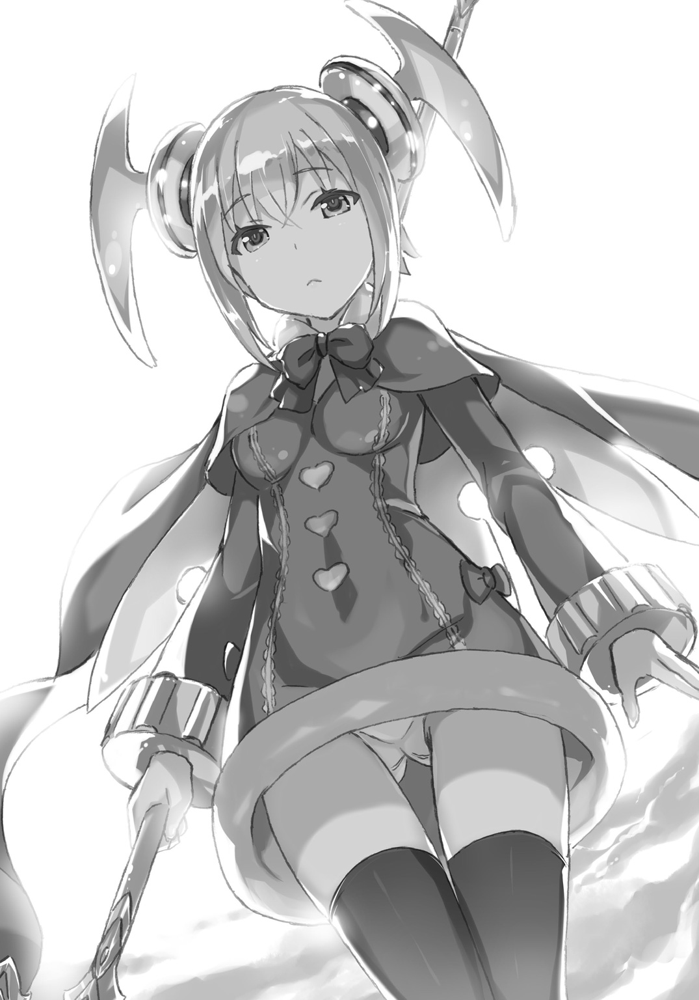
「お前、もしかして......吒か？」
半信半疑で、太公望は誰何する。
それで、すべての説明がつく。宝貝人間は普通の人間や仙人と違って、心がない。
だから、心が惑うことなど、ない。王貴人の演奏も役には立たない。
この場において、最適の助っ人だ。
その少女は、こくり、とうなずいた。
「そう、吒。元始天尊の命令で、来た。太公望、あなたのチームに入る」
淡々ととんでもないことを吒は言う。攻撃力だけなら崑崙随一の存在が太公望の配下に加わると言っているのだ。
はっきり言って、太公望のキャリアで指揮を任されてよい代物ではない。おそらく、十二使ですら使役は許されないだろう。
「元始天尊様、あなた、俺に何をさせようとしてるんですか？」
思わず、空を見上げて、つぶやいた。
抱えきれない責任を積んだ船の舵取りをやらされている。
「妲己、死ね」
吒は命令のように言うと、
「【乾坤圏】両方発射」
ぼそりと事務的に告げた。
二つの金属の輪っかのようなものが腕のあたりから地面に向けて飛ぶ。
「胡喜媚、よけたほうがいいわ」
妲己が間髪をいれずに言う。九本の尻尾が怯えるように、四方八方に揺れていた。
「いえ、これぐらい、私の宝貝で――」
「姉の言うことが聞けないの？ あなたではつまらないケガをするかもしれないわ」
引きつった口元の胡喜媚は、回避に専念する。
吒の攻撃よりも妲己に怯えたという感じだった。
「王貴人も演奏をやめなさい――と言っても、聞くわけないわよね」
直後、鼓膜が破れそうな轟音が響く。
同時に地面が地震でも来たように揺れ、砂煙が上がった。
そのあとには、深さだけで十メートルはあるクレーターができていた。その場にあった小高い丘は叩きつぶされて、逆にへこんでしまったらしい。
周辺の地形そのものが陥没したのだ。炎で地面を焼き払ったり、風で土砂を吹き飛ばしたりするのとは威力の質が一段階違う。
だが、クレーターは一つだ。もう片方の【乾坤圏】は妲己が右手だけで受け止めている。
彼女の尻尾のうちの二本が、紂王と王貴人をそれぞれつかんでいた。巻きこまれないように救出したのだろう。体の自由を奪われて、ようやく、王貴人のギターも止まった。
「うるさいわね。紂王様が起きてしまうじゃない」
妲己はぽんと【乾坤圏】を投げる。丘をつぶしたもう一個とともに、吒の元に戻る。
「どうやって防いだ？」
「力だけがすべてではないということよ、宝貝人間ちゃん」
吒の登場で空気が変わっている。音もやんでいる。逃げるなら今しかない。
「楊戩、チャンスだ！ 俺についてこい！」
砂ぼこりが舞う中で楊戩も「わかったわ！」と返す。ならば、もう迷う暇はない。
「吒もついてこい。追ってこれるな？」
「うん」
確認はとれた。太公望はぽんと四不像の頭を叩く。
「全力疾走だ、スープー！ 何があっても後ろを振り返るな！」
「任せてくださいっス！」
「バスケ部副々キャプテンの実力を見せてやれ！」
「サッカー部っス！ 全然、話覚えてないっスね！」
「似たようなもんだろ。スポーツでかつ、ボール使うんだから」
「いくらスポーツ嫌いでも分類が雑すぎるっス！」
音よりも速く四不像は飛んだ――つもりだった。
どんどん先に、哮天犬に乗った楊戩と吒が進んでいく。
すぐに太公望からは見えなくなる。
「スープー、お前、遅い」
「みんなが速すぎるだけっス！」
半泣きになって、四不像は前を追う。
「頑張るっス！ 頑張るっス！ 涙が出ても負けないっス！」
悔しさを燃料にして四不像は飛んだ。必死に飛んだ。
......なのに、距離はどんどん開いていくのだった。
「ま、負けたと思わない限り、負けたことにはならないっス！」
やっぱり、努力で才能の壁は壊せないんだな。そんなことを四不像の上で悟った。
◇ ◇ ◇
一時は騒然としていた王城も、賊がいなくなり、ひとまずの平穏を取り戻しはした。もちろん、事後処理は必要なわけだが。行事は中止になり、文武百官は紂王の前に召集される。
「あの犯罪者たちと結託していた者がいるかもしれないわ。徹底して調査しなさい」
妲己はすぐに自分の側近たちが統率する秘密警察および軍部に指示を出した。
紂王ではなく、妲己が命令を出していることにも、もはや違和感を覚える者はいない。
黄飛虎は内心でまずいことになったと思いながら、その場にいた。聞仲（の偽者）の部屋で開かれた作戦会議にくわわっていたのが露見すると、一族もろとも粛清される......。
だが、不幸中の幸いで、彼女がすぐに逮捕されることはなかった。あるいは、たとえわかっていたとしても、今の殷に将軍をすげ替える余裕がなかったのかもしれない。
ただし、殷の未来はいよいよ黄飛虎の望まないほうに進みそうだった。
妲己のそばに二人の少女が現れる。
胡喜媚と王貴人。どちらも妲己と義姉妹の契りを交わしている妹分だ。
「これからは、私たち三人が殷の行く末を見守りますから、そのつもりで」
異様な二人だった。頭にかぶった布で顔を隠している少女と、奇妙な弦楽器を持った少女。
顔を隠した少女は水晶玉を我が子をいとおしむように、撫でている。
「はじめまして、胡喜媚と申します。皆さん、ご安心を。私の占いによると........................ひとりぼっちでも自分を信じて、終わらない愛という真実を見つめていれば、それこそがゼロでありイチ........................つまり、殷は安泰です」
群臣はその占い、本当かよと思ったが、ツッコミを入れられる空気ではなかった。どうせ、数日後には、心が支配されて、何の違和感も持たなくなっていくのだが。
「王貴人、あなたも皆さんにあいさつをするのです」
胡喜媚が王貴人の背中を押すが、
「........................」
しばらく黙っていた王貴人が演奏をはじめたので、胡喜媚があわてて止めた。
「それ、宝貝ですから......。人前でやっちゃダメですから......」
「こんな妹二人とやっていくので、どうぞ、よろしく」
こうして、殷における妲己の三姉妹体制が確立されたのだった。
そんな様子を見て、黄飛虎は思った。
もう、殷はおしまいだ。
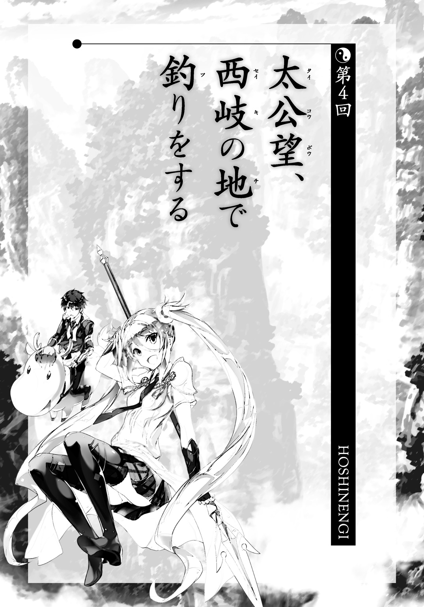
まったく敵の追手が来ないので、太公望たちは飛行速度をゆるめた。それに、四不像の体力もそろそろ限界に来ていた。
お互いに会話ができる距離まで近づく。
「さてと、『一気に妲己を撃破してミッションコンプリート作戦』が失敗に終わったわけだが」
「終わったあとに、変な名前つけるのやめなさいよ！ ネーミングセンスもないし！ 落とすわよ！」
「空を飛んでる時に言われると、なかなかショッキングだな......。それで、延々と空をさまよってるわけにもいかないし、次の目的地を決めようと思う」
太公望は四不像の上で殷の地図を広げる。
「ショートカットが失敗した以上、正攻法に戻るか。ひとまず、周に行く」
正しくは、周という王朝を樹てるはずの、殷の中の領邦の一つ、西岐だ。
現在は姫昌という人物が治めている。ただの諸侯ではない。西伯侯という四大諸侯の一人である。形の上では、彼の下に百の諸侯が連なっていることになる。
「そ、そうね。姫昌に挙兵させちゃおっか......。私の口車に乗せちゃえば楽勝よ」
自信家の楊戩の割には、どことなく言葉に勢いが欠けていた。
妲己たちから逃げ出す結果になったことが引っかかっているのかもしれない。
「でも、口車って言っても、俺たちはどこの馬の骨ともわからない連中だぞ。まずは姫昌に接近する方法を考えないといけない。念のため断っておくが、自分たちから仙人だって明かすのは、ルールに反するので避けたい」
超越的な存在であることを人間に告げて利用することは許されていない。それでは、人間を支配する犯罪者側の仙人と本質的に変わらないからだ。
相手に一度知られてしまえばあとは隠す必要などないのだが、こちらから特別な存在だと言って近づくことは認められていない。
「何度も、お願いする」
ぼそっと、吒が言う。吒は普段、何を考えているかわからないところがあるが、話はちゃんと聞いていたらしい。
「あのねえ......。お願いするって、子供じゃないんだから、無理でしょ......」
「従わないなら、脅してみる」
「ああ、それいいわね。吒に逆らえる奴なんていないし――ってダメに決まってるでしょ！ それ犯罪よ！」
吒の前だと楊戩もけっこうまともなことを言う。
ツッコミにまわってしまう性格のせいなのか。
「力こそ、正義なのに？」
「何をさらっと悪役っぽいこと言ってるのよ！ アウトに決まってるでしょ！」
「吒は人間と宝貝の中間的存在。まだりんりかんがよくわかってない」
それって、味方として割と致命的なことなのではないかと太公望は思った。
「咤の設計者の太乙真人が、知らないことはリーダーに教えてもらえと言っていた」
「余計な仕事、増やしてきたな......。なぜ、俺が新人研修的なことを......」
「太公望、ご指導ご鞭撻のほど、お願いいたしたい」
「そうだな。有休は労働者の権利だから堂々ととること。取得に文句を言うほうがおかしい」
相当偏った知識だった。
「というか、話がずれてる。どうやって姫昌の信頼を得るかだ」
ちなみに自分からは提案しない。なんとなくこういうの、楊戩が言いたそうだし。
「そうね、私から素晴らしい献策をしてあげちゃおうかしら。みんな、考えつかないなら、言っちゃってもいいかな～」
やっぱり。自信家がいると、こういう時に助かる。このタイプが数名いると、対立のきっかけになるが、一人なら存分に仕切ってもらえばいい。
「まず、国を動かすとなると、自分たちが国の中枢に行かないといけないわ。なので、人間として振る舞って、家臣の地位を手に入れましょう」
「そうだな。人間社会にまぎれこむというのは悪くないと思う。問題が二点ほどあるけど」
「意見だけ出させて、問題点を指摘するって嫌なタイプ......。地上だったら蹴ってたからね」
などと言いつつ、哮天犬を近づけて、ぽかんと叩いてきた。蹴ってるんじゃなくて殴ってるだけだということだろうか。
「そう言うな。逆に言えば、その二点をクリアしたら、方針としては問題ないと思うんだ」
「だったら、その二つの問題点を教えなさいよ。すぐに解決してあげるわ」
「一点目。家臣になったら忙しそう」
「ははは、引きこもりキャラ、面白～い。はい、もう一つの問題点、とっとと言って」
叩かれることもなくあしらわれた。
これはこれでつらいものがある。
「仙人の力を使わずに人間として出世する方法が思いつかん」
出世なんて考えたこともないので、これは難易度が高かった。モグラが空の飛び方を考えたことがないようなものだ。
「楽勝よ。人間として街に住めば、すぐに認めてもらえるって」
「ちなみに、その根拠は？」
「私のすごさを感じたら、みんな、ぜひ国のために働いてって言うでしょ」
「うわ......自信家の悪いほうの部分が出た......」
強い成功体験が根拠になってるので、失敗するという前提がないのだ。
「まあ、本当にこれで問題ないと思うけどね。あっ、前方に岩があるから高度上げるわよ」
たしかに進行方向正面に高い岩山がそそり立っていた。ほとんど、山というよりは壁だ。
「おっと、スープー、高度――」
そういえば、さっきから四不像が静かだなと思う。よほど、真剣に飛んで――
「す～、ぷ～、す～、ぷ～」
自分の名前を繰り返しているのではない。寝息だ。
「もしかして、居眠り運転かよ！」
「す～、ぷ～、す～、ぷ～文化祭お疲れさまでしたっス～今日はみんなで騒ごうっス～」
「夢でまで打ち上げの幹事なんてリア充くさいことするな！ あ、マジで岩にぶつ――」
土沙ーンッッッ！
太公望と四不像は岩山に激突して、危うく封神されかけた。
一行はどうにか無事に、西岐の首都である豊邑にたどりついた。この西岐が歴史的には周王朝のもとになるはずの地である。
ここからは、普通の人間として振る舞う。この世界に存在しない動物である四不像も、街の入り口の手前で人の形態になる。楊戩の哮天犬は見た目は犬なので、ペットとしてそのまま連れていける。
街に入る際、検問所のようなところで、「住民登録をしますか？」と尋ねられた。
どうやら、殷の首都である朝歌が乱れているせいで、こちらに逃げてくる者が多いらしい。拒否する理由もないので、全員素直に登録をすます。偽名を使うか迷ったが、朝歌から遠いし、「太公望」で通すことにした。
「それじゃ、情報収集がてら、仕官するチャンスを探しましょ」
こうして、豊邑での生活がスタートした。
楊戩は子供向けの読み書きの教室をはじめた。
偉そうな態度も、教師ならそこまでマイナスにならないだろうという判断らしい。あと、性格上、誰かに何かを教えるのは好きなほうだった。
吒は武術の師範をやることになった。
言葉で説明するのは苦手なので、「見て、技を盗むのが武術」などと適当に誤魔化している。吒の言葉数の少なさが、かえってその道の達人のような印象を与えていた。
実際、吒の武術の才能は仙人界の中でもずば抜けているぐらいだから、人間が見たら驚くに決まっている。門下生の数もすぐに豊邑で一番になった。
そんな二人の評判が姫昌たちのところにも届くのは時間の問題だった。仕官の話が二週間ほどでやってきた。
まさに楊戩の読みの通りだった。自然に過ごしていても、ずば抜けた仙人の力はどうしてもおのずと人に知れ渡ってしまうものなのだ。そして、その力は尊敬の対象になる。
まさに正攻法で言えば、最速の動きを二人は見せていた。
一方、太公望はというと――ゲームをしていた。
「よし！ 長い剣をゲット！ これで攻撃のリーチが伸びたぞ！」
「太公望、少しはボクのキャラの援護もしてよ。魔法使えるんだからさ」
「李誕のキャラだけでどうにかしてくれ。この呂岳ってキャラ、全体攻撃ばっかりで使いづらいんだよ。たぶん、そっちも巻きこむ」
太公望と太上老君は『金鰲ロンド』というアクションＲＰＧをやっていた。
登場キャラクターはほぼすべて金鰲の仙人たちである。著作権的にアウトだと思うが、製品として売り出してないので、ギリギリセーフなのではないだろうか。
なお、ゲームはまた太乙真人が作ったもので、太上老君がどこからか手に入れて、持ってきた次第である。
豊邑郊外の磻渓という山中にテントを設置し、そこでゲーム三昧の日々を送っていた。
働いてはいなかった。当然、仕官の話も来ていない。
ニートに、私たちとともに働きませんかと聞いてくる国家などない。
ゲームをしている二人の横では、四不像が何か言いたそうな目でお茶を飲んでいる。
口に出さなくても察してくれるだろうということなのだろう。だが、こういうのは本人がそう思っていても、肝心の相手には伝わらないものだ。というか、伝わったとしても、行動を改めてくれるかはまったく別の話である。
結局、四不像は我慢できなくなったらしい。
「先輩、また食べるものがなくなって飢えるだなんてオチはやめてくださいっスよ。働いてないから、また食糧も減ってきてるっスからね」
「ああ、そこんところはぬかりはない」
ゲーム画面を見ながらの生返事。
「楊戩さんも働いてない先輩にはお金も食べ物も恵んでくれないっスよ」
「だから、ぬかりはないって」
四不像は見ていられなくなって、テントの外に出た。せめて、気分転換に日光浴でもしたいと思った。
テント自体は、無駄に自然いっぱいの、山紫水明で眺望絶佳の地に置いてあった。とくに、テントを出てすぐ右手では、渓流がさわやかな水音を響かせている。その奥にはコニーデ状のきれいな傾斜を見せている山容が望める。
太公望も最初にこの景色を見た時は、「奥多摩っぽい！ 具体的に言うと青梅線の鳩ノ巣駅近くの渓谷っぽい！」と出身世界の地名を叫んだ。わずかに残っていたアウトドア心まで刺激されたらしく、釣りをはじめたぐらいだ。
考えてみれば、釣りというのはぼうっとしている時間が相当長いスポーツなので、太公望にはおあつらえ向きだった。
「俺は釣りを仕事にする！」などと調子のいいことを言っていた。
でも、それも二日でやめた。太公望いわく、「飽きた」とのことで、まだ渓流のそばには釣り道具が打ち捨てられている。
主人にやる気がなければ、乗騎にもやることはない。
仕方ないので山に向かって叫んでみた。
「自分らしさを失わない強いこころーっ！ いつまでも持っていたいっスー！」
四不像はそういう人生訓みたいなのが好きだった。
「もう少し働きたいっスよ～。この磻渓に着いてからマジで何もやってないじゃないっスか～」
妲己の刺客が来ないのはいいことではあるはずなのだが、太公望にも進展がない。こんなことでいいのか。いや、いいわけがない。
独り言はさらに続く。どうせ、誰も聞いていないのだ。恥ずかしくもない。
「そもそも、こんな大自然を前にして、テントまであるのに、そこでゲームっておかしいっスよ、不健康っス！ せめて川に出て、外で泳ぐぐらいのことはしてほしいっス！ でないと、いいアイディアも浮かばないっス！」
ちなみに渓谷にテントを張っているのも、大した理由はない。
たまたま土地の所有者がいないからというだけだ。
「太上老君様も働いたほうがいいとかたまに言ってくれるっスけど、結局口だけなんスよね。しかも、太上老君様も働いてないっスし......」
どうせ、四不像の言うことよりも太公望の言い分を優先するだろう。はたから見ていると、倦怠期すら乗り越えて、異常に打たれ強くなったカップルみたいである。
ならば、太上老君が四不像に協力してくれるような手を考えるしかないが、そんな名案がぱっと浮かんだら苦労しな――――浮かんだ。
「あっ、ぱっと出てきたっス」
十五秒ぐらいしか経ってない。四不像は一瞬だけ、自分は天才かもしれないと調子に乗った。
「そうっス！ これで太上老君様を動かせるっス！ きっと毎日こつこつ諦めずに、かつ感謝の心を忘れずにやってきた成果っス！」
その日、四不像は太上老君が一人でいる時間（【風火蒲団】にくるまって寝ていた）を狙って、策を献じた。
「――というわけなんスよ。これは太上老君様のお力を借りるしかないっス」
「うん、いいかもね。太公望がボクの魅力に気づいてくれるかもしれないし」
「はいっス！ これで先輩もテントから出てくるっス！ 外に出るのも悪くないと思うっス！ そこまで行けば働いてもらうまであと一歩っス！」
太上老君が乗り気なので、作戦は軌道に乗ったようなものだった。
さらに完璧なものにするために、楊戩と吒にも連絡を入れる。
リア充なので連絡する時にも物怖じとかはしないのだ。
翌日。幸いにして晴れ。朝八時。
四不像の考えた画期的な作戦が実行に移される時が来た。
太公望はもちろんテントで寝ていた。誰かが起こさなければ半永久的に寝ている。
自分から起きてこないのは四不像も知っているので、人間の姿で太公望をゆする。
「先輩、今日もすっごくいい天気っスよ！ 太陽浴びてアミノ酸を合成するっス！」
「ええ～？ そんなことより昨日手に入れられなかったレアアイテムを入手しないと......」
「今日はゲームは休みっス！ 昨日、十六時間やってたっスよ！」
四不像はそのまま布団をはぎとる。
「やめてくれって......。あと三時間は寝ないと――――あれ？」
眠たげだったその目も、奇妙な事態を前に、さすがにぱっちり開いた。
「スープー、どうして水着なんだ？」
四不像はスポーツが得意なだけあってか、競泳用の水着だった。もっとも、どんな水着でも、どこかおかしいことに変わりはない。
「もちろん、泳ぐためっス。先輩、私、なかなかスタイルいいっスよね？」
たしかに四不像は出るところは出ている体型だ。霊獣の時は、ぷにぷにしているが、人間になると、それがいい感じに肉感的なものとして表現されている。
水着姿をじっと見るのが悪い気がして、少し目をそらした。
「それは認めてやらなくもないが......俺は泳がないからな。ゲームする。あるいは二度寝だ」
「そっか、さては照れくさいんスね。そうなんスね～。遠慮しなくていいっスよ～」
「布団の中に帰ることにしようかな......」
男として女子の水着姿を見れるのは幸せなことかもしれないが、二度寝の誘惑のほうが強い。だが、四不像もこのまま引くつもりはないらしい。上手くいかないなら努力でどうにかするスタンスなのだ。悩む前にまず動く、体育会系思考なのだ。
「だから、照れなくていいっスよ～！ 水着、穴が空くほど見ていいっスよ～！」
「じゃあ、夢の中で見ることにするわ」
睡眠欲が、その他すべての欲を凌駕した。
「ほら、外に出ましょうっス！ テントの外に楽しい世界が待ってるってことを知るっス！ そしてテントの外で働くっス！ もう食べる物も尽きかけてるんスよ！」
「やっぱり働かせるのが目的かよ！ だから、食べる分には問題ないって言ってるだろ！」
「ちっとも大丈夫じゃないっスよ！ お金を稼がないと食べられないっス！ そのお金がないんスよ！ 木の実を食べるとかサバイバル技術も持ってないじゃないっスか！」
あっさりテントの外に引っ張り出された。久しぶりの太陽の光がまぶしい。
「うわあ......封神される......」
「太公望、光だけで封神されることはないよ」
四不像のものとは別の声が真上から聞こえる。
顔を上げると、そこにスイカを持った太上老君が立っていた。
これまた水着姿で。ジャンルとしてはビキニに当たるのだろうか。ピンクと黒のカラーリングが大人っぽい雰囲気を作り出している。スカートのようなひらひらした布がかわいらしい。胸のほうはリボンみたいに前のほうで結ばれている。
「でも、ボクの美しさの前では封神されちゃうかもしれないけどね」
「李誕、これって、まさかリボン引っ張ったらはずれたりしないよな......？」
デザイン上のものだと信じたいが、ちょっと不安だ。
「だったら、太公望、試してみる？」
水着が気に入っているのか、太上老君も少し陽気な印象を受ける。
「試すわけないだろ。というか、なんでお前まで水着なんだよ」
「今日は休日らしいよ。だから、みんなで水遊び」
無職のお前に休日も何もないだろと思ったが、みんなという言葉に引っかかるものがあった。
渓流のほうを見ると――楊戩が浮き輪でぷかぷか浮いていた。流れの弱い、淀みのところで、器用にとどまっている。
色欲より、ゲームか睡眠という生き方をしていたのに、それでも思わず、見ほれてしまった。
本格的美少女がビキニ姿になると、こんなことになるのか。あらわになった肌の質感が男とは根本からして違う。もはや、一つの芸術品だ。
もし、これで楊戩が暴力的じゃなくて、普通の性格だったら、どうなっていただろうか。ゲームより楊戩と一緒に過ごすことを選ぼうとしかねなかった。危ないところだった。
あっ、むしろ、色欲を感じるほうが真人間には近いのか。
しかし、その姿をずっと見つめていたせいか、妙な点に気づいた。
「あれ、お前、もしかして泳げないのか？」
バタフライで鮫を追い抜いていくようなイメージがあったのだが。
「そうよ。悪い？ 泳げないものは泳げないのよ！ 体が水に浮くのを拒否するのよ！」
地味にコンプレックスなのか、楊戩は川の水をばしゃばしゃかけてきた。冷たくはあるが、物理的ダメージではないので、気楽だ。
「あと、それと――うおっと！」
口に出しかけた言葉をあわてて飲みこんだ。
胸ないなと言いかけたのだ。さすがにそれはダメだろ。水をかけられるだけではすまない。絶対、岸に上がって蹴ってくる。わざわざ靴を履いてから蹴ってくる。しかも回復させる宝貝も使ってくれないと思う。
こうやって水着になると、胸の小ささが白日のもとにさらされる。
もちろん、ちゃんと水着という布で隠されてはいるけど、サイズは目分量でもはっきりわかる。この世は所詮、実力主義で、ないものはないし、あるものはあるのだ。
それにもかかわらず、ふりふりのついたビキニなどを着ているのは、意地なのだろうか。
全然似合ってない――と言いたいところだが、胸のない人間が胸元を強調するような水着をつけると、独特の背徳感のようなものがあって、巨乳の女性とは別の魅力を生んでいた。
そんなこと言ったら、哮天犬に嚙ませるぐらいのことは本気でやってくると思うので、口が裂けても言えないが。
「何？ 言いかけてやめたみたいだけど？」
「お前、こういうところほんとに鋭いな！ 無駄なところで利発さ発揮するなよ！」
このまま忘れてもらえればいいなと思ったが、その願いは即座に打ち砕かれた。
「で、何なのよ？」
誤魔化したいのだが、いいネタが浮かばない。
「いやあ、楊戩ってきれいだな」
「私はきれいに決まってるでしょ」
少しは照れたり、うれしいとか言ったりしろよ。
「というか、そんなこと言いたかったわけじゃないでしょ。そんな内容だったら、言いかけてやめる説明がつかないもの」
なかなかいい読みだ。できれば読まないでほしいが。
「次にウソをついたら、封神するから」
事実上の殺害予告かよ。
ちょっと怖すぎるので、やんわりと事実を伝えたほうがよいか。
「慎ましやかというのは、それはそれで一つの美徳であると思う」
容赦なく、楊戩の水鉄砲が顔に飛んできた。というか、勢いよくタライの水をぶっかけられたような威力だったので、そのまま倒れた。
「お前、どうやったら、手だけでそんな水鉄砲が飛ばせる......？ 冷たさより水圧による痛さのほうがデカかったぞ！」
「これが天才の実力よ。天才に不可能はないから」
と言いつつ、楊戩はすかさず陸に上がってきた。あっ、これはヤバいと思った頃には、早くもローキックがはじまっていた。
「おい！ 蹴るな、蹴るな！」
「相手が起き上がる前に蹴る。これが基本よ！ 何が慎ましやかよ！ 貧乳ってことじゃないの！ オブラートに包んでもダメに決まってるでしょ！ あなたに見せるための胸じゃないんだから、知ったこっちゃないわよ！ バカ、バカ、バカ！」
しかも、攻撃箇所が次第に足から腹、顔のほうに近づいてくる。首の骨が危ういと思ったが、ひとまずキック攻勢は一度終了した。だが、これで終わりとは到底思えない。
「哮天犬、宝貝【冷塊函】を持ってきて」
犬耳少女の姿をした哮天犬が、ビキニ姿であわててやってきた。手にあるのは、ところてんを押し出すようなアイテムだ。
「お前、いろいろと宝貝持ってるな――」
「はい、スタート」
ぐいっと箱の取っ手を前後にスライドさせると、コップに入れるような氷がごろごろ出てきた。それがこちらの顔に落ちてくる。製氷用の宝貝らしい。
「いてっ！ 冷てっ！ これはこれで地味に嫌だ！」
「体の芯まで冷え切っちゃえばいいのよ」
どんどん氷の数が増えてくる。そして、極めつけは――
「哮天犬、やるわよ」
なぜか、楊戩は膝立ちになって、顔を横にそらす。
無表情な哮天犬がそれに呼応してこちらのパジャマとパンツをぐいっとつかんで、引っぱる。かなり恥ずかしい空間が布と体の間にできる。
まさか、これは、これは......。
「胸のことをああだこうだと言った罰ね！」
「待ってくれ！ それだけはそれだけはやめてく――」
一切の躊躇なく、氷が次々に股間に入ってくる。飛び上がりたいが、哮天犬が押さえているので、それもできない。そして、氷が充分に入ったところで、哮天犬がつかんでいたパンツを離す。氷の密室の完成だ。
「っっっっっ！ っっっっっ！！！」
あまりのことで声にならなかった。もう、何も考えずにこのパンツを脱いで楽になりたいのだが、どうも太上老君の視線があるようなので、脱ぐに脱げない。
泣きながら、岩陰で氷を捨てた。
男の子の大切なところになんて仕打ちをするんだ。
「お前、そんな生き方してたらいつか刺されるぞ......」
まだ、股間がジンジンする。こっちが苦しんでいる間に、楊戩はまた元いた場所で、浮き輪でぷかぷか浮いていた。
「これでも、手加減してあげたんだからね。次言ったら一日中、川の底に沈めて、このあたりに『仙人ヶ淵』とかいう名前をつけるわ」
「牧歌的な風景に血塗られた伝承を作ろうとするなよ......」
「あと、別に小さくなんてないからね......！ ほら、よく見たら、そうでもないでしょ......。ふ、普通でしょ............？ じょ、常識の範囲内でしょ......？」
少しずつ発言に力がなくなってきている気がする。
「どれどれ......」
また、顔に水がかかった。
「じろじろ胸ばかり見ないでよ！ デリカシーないにもほどがあるでしょ！」
「なんか理不尽だ......」
もう、パジャマ乾かさないとまずいぐらい濡れていた。
「今日は学習塾、休みなんだな」
「そうそう。吒も休みの日。西岐での仕官が決まったし、塾も道場ももうすぐ閉めるけどね」
楊戩は得意げで、心なしか、ツインテールも勢いがあるように見える。わかりづらい表現だが、ツインテール愛好家なら理解してくれると思う。太公望も愛好家ではないが、なんとなくわかる。
二人は無事に西岐に潜りこむことに成功したようだ。部下の成功はリーダーの成功と言ってもいい。もっと、頑張ってくれ。
「吒も、そこにいるわ」
浮き輪のバランスを崩さないように、楊戩が慎重に指を差す。吒が水面に立っていた。普通、水面は立つところではないのだが、たしかに立っている。
「どういう状態だよ。水面すれすれで浮いてるのか？」
「違う、水面を【混天綾】で振動させて、水中の巨大な岩が常に足下に来るように還流させている。この近くに来ると、流れに巻きこまれて死ぬ」
吒は首に巻いていた、絹のようなスカーフをひらひらと振ってみせる。それが【混天綾】なのだろう。宝貝のせいか、足下の水の色がピンクに変色していた。
「あんまり自然環境に影響がないように使えよ。まあ、それはそうとして、ちょっと......露出多くないか......？」
吒の水着はマイクロビキニというのだろうか、全員の中で一番布面積の少ないものだった。そのくせ、首に巻いてる【混天綾】が色気のようなものを醸し出している。
どう考えても、泳ぐのが前提とは思えない。あまり派手に泳ぐと危ない。実際、泳がずに水面に立っているけど。
そのくせ、背中には宝貝人間だからなのか、巨大な箱型のバッテリーのようなものを背負っている。遠目には、それが噴射機の役割をして、ホバリングしているように見える。
「戦闘時の制服以外の服を着用するのは落ち着かないので、一番裸に近いものを選択した」
本人も自覚があるんだったら、やむをえない。
「一応、ここに男もいるわけだからな。人目は気にしろよ」
「あんまり、吒のほう、じろじろ見ないの」
楊戩のほうから苦情が来た。なんか、超ミニのスカートの女子に目がいったら、嫌な顔された時に似た、ぐぬぬ感があった。露出高めにしろ、着ぐるみにしろ、変わった格好だったら、目線がいくのは自然なことではないか。
「太公望も水着に着替えてきたら？」
後ろから太上老君の声がかかった。太上老君の手には何種類かの男用の水着が載っている。
「用意周到だな......」
「水着がないことを理由にテントにこもりそうだったから」
先読みされていた。ここまで来て、着替えないわけにもいくまい。というか、楊戩に水をかけられたり氷を入れられたりして、パジャマのままはつらい。
素直にテントに戻って、服を脱ぐ。
途中、太上老君が何食わぬ顔で入ってきた。
「今日は下まで脱ぐから、出ていけ」
「ボクは気にしないけど」
「俺が気にするわ！」
無事に太上老君を追い出し、水着にも着替えたので――テントの外にゲーム機とモニターを出した。
「青空の下でのゲーム、これもまたよし！」
「ちょっと！ いくらなんでもおかしいでしょ！」
また、楊戩が水鉄砲で、的確にモニターの背部を狙ってきた。どうにか届かなそうな距離に置いたつもりだったが、射程が想像以上に長い。
「やめろ！ マジで壊れる！ モニターが壊れても、この世界じゃ売ってないんだ！」
「なんで、野外でゲームなのよ！ もっと、ほかにやるべきことがあるでしょ！」
「バカめ。川での泳ぎは水温も低いし、流れも場所によって異なるので、海よりもはるかに危険だ。慣れない奴がやるべきことではない」
「そういう正論が聞きたいんじゃないの。このシチュエーションで遊ぼうとしないっておかしいでしょ！ 泳いだりとか、するべきでしょ？」
「泳げない奴に言われるのも、なんか釈然としないな......」
「まあまあ。川遊びはそれぞれのスタイルがあるから、泳がなくてもいいよ」
なだめに入った太上老君の手には岩魚の串焼きが握られている。いつ焼いたのだろう。
「川と言えば、アウトドアだよね」
他人の価値観は否定しないが、個人的にアウトドアに興味がないので、ノーコメント。
「太公望も岩魚、いる？」
太上老君が串に刺さった焼き魚を差し出してきた。
「そういう淡水魚って、苦いから、いらない」
「苦いのがまたいいのに」
ちょっと残念そうに太上老君は魚を小さな口でかじった。
「ところで、太公望、水着姿のボクを見て、戸惑っちゃったりとかはないの？」
太上老君はわざと胸の谷間のあたりに、右の人差し指を這わす。
「うん、きれいだな。うん、きれいだ。きれい」
「えっ......何なの、その情緒のカケラもない感想......？」
「だって、俺、仙人だから、まあまあ枯れてるぞ」
半分は本当で半分は強がりだ。
いきなり水着の女の子に囲まれたら、たじろぎもする。態度に現れはしないが、やっぱり楊戩や太上老君はほんとにかわいいと思うし。
自分が普通の高校生の時に出会っていたら、平常心ではいられなかっただろう。
仙人界の場合、男女比が極端なせいもあって、あまり恋愛も発展しない。中には女同士で付き合っているカップルもいるが、多数派ではない。ただでさえ、仙人は（少なくとも表向きは）愛憎を超越した存在だからなおさらだ。
なので、太公望も普通と言えば普通だ。
「もっと、水着であたふたしてほしかったな～」
「残念だったな。俺もお前ほどじゃないけど、そこまで顔に出ないタイプだしな」
「なんか、つまんないから、鹿肉、焼いてこようっと」
太上老君はちょっとすねたらしく、よそへ行ってしまった。仙人はあまり肉食をしないほうがいいはずなのだが、太上老君はそういうのを気にしないタチだ。
「じゃあ、ゲームはじめるか」
こっちは何食わぬ顔で、コントローラーを握る。モニターの後ろにいた四不像が「この強敵め、やるな」といった表情をしていた。
どうだ、まいったか。
「おおかた、男なんか水着の女で釣れると思っていたんだろう。甘すぎるぞ、スープー。水着で釣れるのは、人間時代に肉欲に支配されていたタイプだ。俺は恋愛とかよくわからないぼっちの高校生のまま仙人になったので、効き目などない」
「人生、充実してなさすぎっス！ まるで仙人っス！」
「いや、仙人だから。たかが運動部程度の浅知恵で俺を翻弄できると思うなよ」
だが、体育会系の奴をバカにしすぎた。
連中は論理が破綻しても、強引に動いてくる。
「もういいっス！ 実力行使というか強制執行っス！」
四不像が背後から迫ってくる。危険を感じて、コントローラーを手から離した。それで正解だった。
次の瞬間には、四不像と一緒に水に飛びこんでいた。
「いやあ、冷たくて気持ちいいっスね！」
「何するんだよ！ 鼻に水入っただろ！ 鼻に水が入るって、人生におけるちょっとした不快な現象ベスト20ぐらいに入るやつだぞ！」
四不像はがっちりと後ろからホールドしている。もがいてみるが、足がつかないので、上手く踏ん張れない。
「働くって言うまで離さないっス！ さあ、働いて真人間になるっス！」
「だから、働かなくてもいいんだよ！ どうも誤解してるようだから言っておくけど、俺は絶対に働かないと決めてるんじゃなくて、無駄が嫌いなだけだからな。それと......今は、あんまり密着してこないでくれ......」
くそ！ 作戦が失敗したのに、負けを認めずに腕力に物を言わせて無理強いしてくるだなんて、ならず者のすることではないか！
しかも、今日はいつもと違う。四不像は水着姿なのだ。背中に完璧な胸のふくらみが押しつけられる。おさわりはまずい。
「その言葉には従えないっス！ でないと、先輩はまたゲーム廃人に逆戻りっス！」
「いや、ゲームどころじゃないんだって......頼む！ これは恥ずかしい！」
落ち着け。四不像が抱きついてくるだなんて、あいさつみたいなものじゃないか。こんなことで自分が動揺するわけがない――と思っていた。
なのに、今はそうは考えられない。
恋愛対象の範囲が急に広がっていくような......。
これが、水着でのボディタッチの威力なのか。
まさか、ぼっち時代に培った平常心の砦が崩れるというのか......!?
「取り押さえてるみたいなのは、面白くないっスね～」
挑発的な悪意に満ちた声が背中からした。
今度は四不像が表側にまわりこんできた。胸がこちらの胸に当たる。
「お前、やりすぎだぞ......」
「これぞ、スィンクロナイズドゥ・スウィミング戦法っス！」
「微妙に発音がいいのがイラっとする！」
その様子を楊戩が浮き輪の上からじっと見ていた。
なんかよくわからないが、不機嫌そうな顔をしている。
これ、あくまでも悪いのは四不像だぞと言いたい。なのに、多分、こっちに対して腹を立てている。これは男女差別ではないのか。
「む、胸があれば......だ、誰でもいいわけ......？」
あっ、そういうことか。胸のある四不像に抱きつかれているからあわてている、そんなふうに考えているのか。
それは誤解だ。胸があろうとなかろうと、水着越しで押しつけられて達観などしていられるか。恋愛に淡泊な仙人でも戸惑うに決まっている。
「胸のない私を遠まわしにバカにしてるってこと......？ 肌だったら......私のほうが出してるじゃない......」
それは被害妄想だ。だけど、何を言っても藪蛇になりそうだった。それに楊戩の言葉はなかば独白めいた小声なのだ。こちらにはっきり向けられた言葉じゃない以上、うかつに返事をするわけにはいかない。おのれ、エアリプライ。
楊戩は、手で浮き輪を移動させて近づいてくる。
蹴られるか、殴られるか、二つに一つか。まあ、いい。それでストレスが収まるなら、勝手にやってくれ。
でも、正解はそのどちらでもなかった。
「え......えいっ！」
楊戩が浮き輪から飛んだのだ。そのまま背中に抱きついてくる。
「うわ！ 何するんだよ！ マジで溺れるだろ！」
四不像と楊戩のサンドイッチ状態。体がどちらかに傾かないように、バランスをとる。
「胸以外にも魅力っていうものは、ある......から......それを......わかってもらえないのは......く、悔しいから......」
「何を訳のわからないことを言ってんだよ......？ 危ない、溺れるぞ！」
ダメだ、もう均衡が保てない......。背中のほうに重心がいってしまう。
「わわわっ！ バランスが崩れるっス！」
「うわ......沈んじゃう！ 私、泳げないのに！」
だから言ったのに。楊戩は怖くなったのか、さらに密着してくる。
つかまれている側も、本格的にパニックになってきた。
川の冷たさと、楊戩の体が発する熱が混ざり合って、不思議な温度になる。人肌って、怖いぐらいに心地よい温度なんだな。そういえば、抱き締められると心が安らぐというけど、理由の半分は体温のせいなんじゃないだろうか。
いや、安らいでいる場合じゃない。溺れる！
「わっ......こ、怖いよ......た、助けてっ！」
楊戩は両手を動かして顔を水面から出そうとする。これはまずい。水を飲んで、余計に溺れるぞ。四不像も状況がまだ把握できてないようで、ひっついたままだ。
「スープー、すぐに手を離せ！ 労働よりも命が大事だ！ 魂は不老不死でも、肉体は溺れたら死ぬ！」
「は、はいっス......」
四不像も気迫に押されて、体をどけた。おかげで少しだけ余裕ができる。
溺れている人間を救うには、最低限、救う側が溺れていない必要がある。かろうじて、まだ動ける状態だ。
「楊戩、いいか？ 助かりたかったら、一度、俺の手を離せ！」
「そんなこと言っても、離れるのなんて......恐ろしくてできな......」
「お前の命を救うためなんだよ！ 時間がない！」
その強い言葉にようやく、楊戩の手が太公望を解放する。
すぐに楊戩の体をつかんで、押し上げる。どうにか、水面より上に楊戩の体を持っていく。自分は泳げる。少しぐらいなら沈んでいても大丈夫だ。
「ぷはっ！ はぁ、はあ......！」
楊戩の息が聞こえる。呼吸できたらしい。これで、危機は脱した。けど、まだ泳げない楊戩は混乱しているだろう。
太公望は楊戩の真下から浮上すると、その右手を自分の左手でつかむ。自分の背中に楊戩が乗るようにする。
「ひゃうっ！ 何するのよっ！」
「対岸まで一気にいくぞ！ 力抜いてろ！」
「あなたの体に胸当たってる......」
「お前が抱きついてきた時にも当たってたよ！ ああ、でも、これは一つお前に謝らないとダメだな」
水面すれすれで、水を飲まないように注意しながら、しゃべる。
「胸あるよな、楊戩も。さっきは事実無根のこと言って悪かった」
「こ、こんなところで確かめてほしくなんてないしっ！ 今は、それどころじゃないでしょ！ バカにもほどがあるんだから！ バカッ！ バカッ！」
「よし、それだけバカバカ言えるようなら大丈夫だ」
楊戩の手を引きながら、手近な岩場まで運ぶ。
無事を確認してから、自分も岩場に腰を下ろした。
朝方の太陽がまぶしい。世界によって太陽の大きさも違うし、存在しないこともあるが、ここの太陽は地球で見たものに近い気がする。
「酸素が美味い。確実に霞よりは美味い」
ただ、まだ楊戩のほうは笑える状態じゃない。その目も川の水とは違うもので濡れているように見えた。泣くほど怖かったとしてもおかしくはない。
こうなったら、人間でも仙人でもやることは同じだ。
さっき自分がされたのとは逆に、楊戩を軽くハグすると、
「もう、心配ないから。ゆっくり呼吸しろ」
ぽんぽんと背中を叩く。リラックスできるリズムを作ってやる。
「う、うん......」
鼓動が楊戩の体から伝わってくる。たんたんたんとあまりに速く感じたそれが、心なしかゆっくりになってきた気がする。
「氷は......やりすぎたわ......ごめん......」
「自覚があったならやめろ。封神されるかと思った」
楊戩は一度、深い呼吸をした。それは、確かに楊戩の意志によるものだ。これならすぐに本調子に戻るだろう。
ほっとしたら、腹が減ってきた。朝食もまだ食べてない。
「李誕から岩魚でももらうかな」
「ごめん......。なんで泳げないのにあんなことしたんだろ......」
気持ちが落ち着いたあとも、楊戩はやけにしゅんとしていた。ピンクのツインテールも水に濡れたせいで、肩にへばりついている。
「水の事故には気をつけろよ。下手をすると、泳げないお前の場合、敵の仙人より強敵だぞ」
「うん、ありがとう......」
ありがとうと礼を言える精神状態になったのなら、大丈夫だろう。感謝の言葉は自分以外の誰かについて考えられる余裕ができた証拠だ。
「あなたって、けっこう男らしいのね」
「あんな状況で男も女もないけどな」
「そういう時は、素直に『どういたしまして』って言えばいいのよ......」
力のまったく入ってないグーで楊戩がこちらの腕をちょこんと叩く。無理をしたせいなのか、どことなく顔も赤く色づいて見える。
「ボク、ちょっと面白くないな」
皿の上の鹿肉をかじりながら、太上老君がこちらの様子を見ていた。どことなく、むすっとしているような感じがする。慣れてくると無表情なりに太上老君の気持ちが読み取れる。
「もう、スープーちゃんの策は信じないことにする」
「気を悪くさせちゃったみたいで申し訳ないっス......」
発案者の四不像も肩身が狭そうだ。
と、そこに足音が聞こえてきた。
吒が岸に上がったのかと太公望は思ったが、いまだに水の上でぷかぷか立っていた。吒の表情も変わらないのでわかりづらいが、意外と楽しいらしい。
だとしたら、この足音は誰のものか。見ると、豊邑の街の方角から、西岐の役人らしき風体の男がやってきた。
「すみません、西岐の生活課の者です。こちらに太公望さんはお住まいですか？」
「はい、俺です」
四不像たちは何の用だといぶかしげにやりとりを見ていたが、太公望には心当たりがあった。
「ご職業は釣り人で間違いないですか？」
「はい。あそこに釣り道具がありますよね？」
川岸に置いていた用具一式を指差す。
「なかなか結果が出なくて、ずっとオケラですよ。お金も底をついて、これはまずいなと......」
「では、これが生活安定給付金です」
と言って、役人は当座の生活資金を渡した。離れたところで、四不像がこけていた。
「はい。頑張って働きます！ ありがとうございます！」
そのまま、役人は一礼して帰っていく。
「よし！ 生活費ゲット！」
「あの、先輩......働かなくてもいいっていうのは、これのことなんスかね......？」
「そうだ。西岐の法制度は確認済みだ。これは十年ほど前にはじまった事業者支援制度でな、稼ぎが少なくて経営の苦しい事業者は申請をすれば、一定額の給付金がもらえる。事業者が経営難で労働者を解雇すると、職のない人間が増えて社会不安につながるだろ。それなら事業者を給付金で守って失業者を出さないようにしたほうが、長い目で見て公共の金の歳出額が少なくすむってわけだ」
太公望はすらすらと説明を続ける。
「今回は、それを利用させてもらった。制度の項目を見たら、事業者が個人でも申請可能だったんだ。どうだ、これでしばらくは食っていけるぞ」
「そういえば、釣りを仕事にするとか言ってたっスね......。それって法律を悪用してるだけっス！ 詐欺っス！ 一秒も働いてないっス！」
「詐欺とは人聞きが悪いな。俺はちゃんと正式な手続きのもとに『申請』しただけだ。それで、職業が釣り人だと認めるか、これはダメだと言って却下するかは国のほうが決める。ＯＫが出た以上、ありがたく受け取るまでのことだ」
やましいことはないのだ。
腕組みして、その場にあぐらをかいて座る。
「まだ納得いってないようだから、少しくわしく話をするぞ。最低限の労力で、最大の効果をあげようとする。これこそ、リーダーに求められている資質だ。
たくさんの努力の末にいい結果が出るのは、ある意味、当たり前のことだ。すごくも何ともない。その努力は評価されるべきだが、リーダーが考えねばならないのは、むしろ努力しなくても成功できるような道を探すことだ。努力一辺倒の人間は、努力だけで立ち向かえないような事態に陥った時、途端に無力になる。
だいたい、困難に直面して、『努力して乗り切ろう』と言いだすリーダーほど、使えないものはない。それは心構えであって、策ですらない。リーダーに求められているのは困難を乗り越えるためのアイディアだ。そして、そのアイディアは楽に実行できるものほどいい。
それに、楽をしたいという発想がなければ、技術革新だって永久に起こらないだろ。歩きたくないから車や電車や飛行機ができる。家事の労力を減らしたいと思わなければ、洗濯機も掃除機も食器洗い乾燥機も全自動湯沸かし機も生まれないし、様々なサービス業も生まれまい。
楽して稼ぐために、泥棒するとか詐欺を働くとか犯罪に走るのはダメだが、法の範囲内で最善の策をとるのは、何もまずくない。むしろ、完全に正しい。以上だ」
「た、たしかに法律違反ではないっス......。お金も入ったっス......」
「ならば、何も問題はないな」
「けど、こんなていたらくじゃ、仕官の話なんて――」
「君の言うとおりだ」
どこからか、声がする。
――と、物陰から先ほどの生活課の役人が出てきた。
四不像は自分の言葉を肯定してくれるのかと思ったが、違った。
太公望の言葉のほうだった。
「太公望殿、おっしゃるように、努力だけで物事を動かそうとすれば、必ず障害にぶつかる。とくに大人数が関わる計画ほど、頓挫する。個人なら自分の努力で解決できるが、自分以外の誰かを努力させるのは極めて難しいですからな」
「あ、ヤバい。給付金、返還させられちゃうかな」
――もっとも、給付金より素晴らしい釣果が得られたようだが。
「今すぐ、釣り人を廃業して、私のもとで働いてくださらないかな」
「あなたのお名前を聞かせてくれませんかね」
ぽかんとする四不像。
ああ、そういうことかと得心した顔になる楊戩。
何も考えてないというか、そもそもこちらを見もせずに水面に立っているだけの吒。
「今は西岐、将来的には周という国号にしようかと。その西岐の代表、姫昌と申します」
その名前を聞いて、四不像も、はっとした。
この男、ただの生活課の役人じゃない。
「朝歌で妲己討伐のために動いた仙人がいた――このことは西岐にも聞こえていました。そして、その方が我が国を訪ねてくるのも、ある程度、予想がついておりましてな。楊戩殿も吒殿もおいでのようだから、これは間違いないなと思っておったのです」
「そちらはそちらでこっちを見てたってわけか。さすが、名君。その先読み能力は素晴らしい」
「名君などとはとても言えませんが、すぐれた人材を見つける自信はありますもので」
「それを名君と呼ぶんですよ。あなたが大諸侯の椅子にふんぞり返っているだけなら、すべては無駄だった」
「我が国の軍師になっていただけませんか、太公望殿？」
姫昌は、うやうやしく頭を下げる。
別に彼が卑屈なのではない。これが軍師を迎える法なのだ。
軍師というのは、まさに国の存亡を左右する存在だ。その策によって、戦死者の桁が一つ減り、場合によっては、滅ぶかもしれなかった国を生かすこともできる。
だから、君主といえども、軍師を招く際には最高の礼でもてなす。
そもそも、君主が軍師を信じることができなければ、軍師も策を実行に移せない。
「楽をして勝つ作戦を一緒に考えるなら、俺でもできるかな」
労力を減らすことだけを考え続けてきたのだ。自分以上の適役などいない。
「軍師として、仕えさせていただきます。まずは、顔をお上げください。まさか、あなたから足を運んでいただけるとは思わなかった」
「私が来なければ、私の気持ちを正確に伝えることはできますまい。殷と戦うとなると、どうしても多くの犠牲者が出ます。それを一人でも減らしたい。そのためには、血気盛んな将軍だけではダメなのです」
偶然か、はたまた運命か、名君の心理を見抜けていたのか。
姫昌の求める軍師像に見事に合格できたらしい。
「どのような待遇でお迎えいたしましょうか。何かお望みは？」
「では、無理を承知で要望します。週・休・七・日」
当然、拒否された。
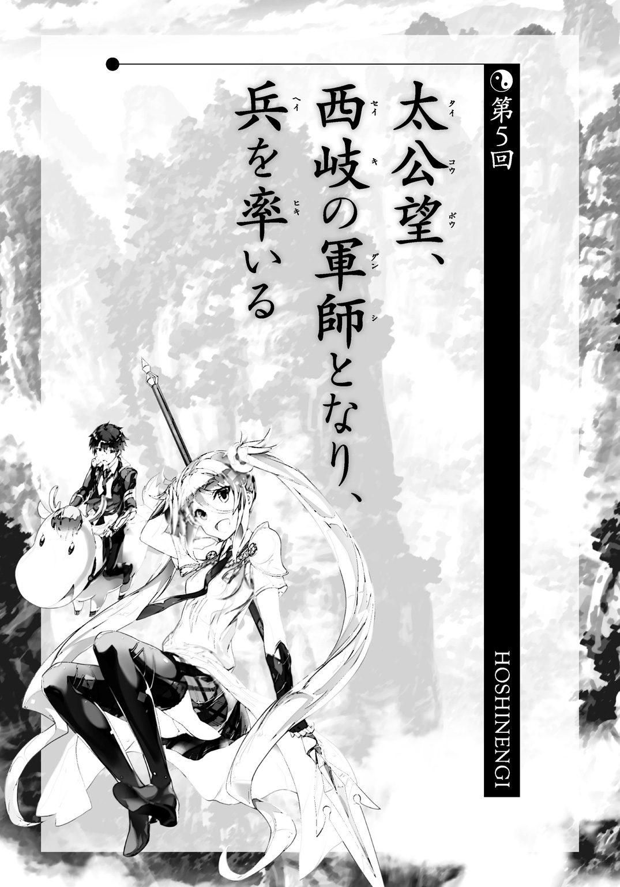
耳をつんざくような異様な音色が後宮から流れてくる。
流れているというより、そこに、在る。確固たる実体を持っているかのように、音が固まっている。
王貴人のギターによる説得力のあるリフに、胡喜媚の冷静沈着なベースプレイ、その両翼の助けを借りて、妲己のハイトーンヴォイスはどこまでも高く、高く、伸び上がっていく。
これぞ、殷における史上初のバンド、『三姉妹』である。
後宮の中庭で彼女たちは野外ライブを決行していた。後宮であるので見物できるのは女性のみのはずなのに、雄雄しいとしか形容しようのない、聴衆の叫び声が上がる。
といっても、誰もが彼女たちの音楽活動を認めているわけではなかった。
女官の七割は妲己たちの妖術で心をなかば操られているにもかかわらず顔をしかめる。
この地の文明は古代から音楽を極めて重視していた。
音楽の乱れは国の乱れであり、世の乱れであると信じられていた。
だとしたら、この雑音と大差ない音楽はまさに太平を揺るがす魔性の音である。
保守的かつ常識的な思想の持ち主ならそう考えるべきものだった。
だが、残り三割は、違う見解を持っていた。
この音楽こそ、新たなる秩序のための力なのだ。
今までの殷に流れていた音楽は、古くから連綿と伝わってきた調べだ。なるほど、それは古代には、その時代を守るために立派な意味を有しただろう。
だが、時代は変わった。
新時代の王朝にはそれに見合った最新の音楽があってしかるべきである。
そのためには、柔弱で嫋々としたものだけでは足らない。過去を破壊し、これまでにない秩序を打ち立てるだけの激しさが不可欠なのだ。
だんだんと彼女たちはその聞いたこともない音楽の虜になりつつあった。
聞いていると、体がゆらめく。
灰色の日常が知らないうちに、白銀に輝いている。
女官の一部にいたっては首を激しく縦に振り、髪を乱して暴れていた。
「もっと振りなさい！ ほら、私の尻尾なんかより、もっともっと激しくねっ！」
ぶるんぶるんと妲己の巨大な尻尾が虚空を舞う。
「頭を振らないともったいないわよ！ あなたたち、このために生きてきたんでしょ？」
もはや、女官たちは聞いているのではなく、戦っていると言ってよかった。
妲己がマイク（型の音を増幅させる宝貝）を客席に向けると、彼女たちは妲己の代わりに歌いだす。歌詞を完璧に暗記しているからこそ、できることだった。
「「殺しましょう！ 滅ぼしましょう！ そして、生み出しましょう！」」
完全に危険思想としか言えないような言葉が飛び交うが、聴衆の目は輝いている。整えていた髪が乱れることも気にせず、猛っている。
妍を競っていた美女たちの姿はそこにはない。
これぞ、妲己たちの提唱する音楽――創造のための乾坤一擲音楽。
「それじゃ、有終の美よ。澄み渡ったこの空の下、残酷なぐらい、暴れなさい、咲きなさい。あなたたちをトリカゴから出してあげる！」
最後の一曲がプレイされる。
妲己のその歌詞はひと昔前に殷の国内で発表しようとすれば、法的に規制必至のものだった。だが、そんなことをよそに聴衆の興奮は絶頂に達する。「もっと、もっと！」と叫ぶ妲己のさまは、ヴォーカリストというよりアジテイターに近い。
「声が小さいわよ！ 何も聞こえない！ ほら、私をつぶすつもりでもっと叫びなさい！ のどから血を流して叫びなさい！」
あまりに暴力的であるのに、そのくせ彼女たちの一つ一つのプレイは美しい。妲己の声はライブ終盤まで透き通り、王貴人の弾くギターははっとするほどにメロディアスで、胡喜媚のベースは機械のようにブレることがない。
それが一つに凝縮する時、爆発が起こる。
巫山之夢のあと、人間たちは次のステージに突き進む。
「ああああああぁぁぁぁぁっ♪」
妲己の声と観客の声が混ざり合う。
最後に、王貴人のギターが咆哮をあげるようにかき鳴らされる。ギターはコード――和音を生み出す楽器だ。その和音がバンドと観客を一つに接着し、媾合させる。
これにてライブは終演。
それでも、聴いていた、否、歌っていた女官たちはその血のように熱く甘い余韻を嚙み締めている。
「ありがとう、みんな！ 愛してるからね！」
感極まって泣いているファンの女官たちに手を振りながら、三人は後ろへ下がる。アンコールを求める声が響き渡るが、妲己が頭を下げる。
「ごめん！ アンコールはしない主義なの。アンコールありきの形式的なライブやオートマティックなアンコールはロックの精神に反すると思うから。その分、本編だけで完全燃焼できるように歌い続けたわ。みんなも燃えたはずよね？」
観衆から「ありがとう！」と声が轟く。自分たちの歌は届くところには届いている、そう妲己は感じた。
自分たちを見て顔をしかめる者もいるだろう、鼻で笑う者もいるだろう。音楽ごときで、宇宙征服ができるわけがない。そう誰もが思うだろう。「この宇宙がはじまってから、一度たりとて、そんなことができた例はない」と過去を重んじる賢人たちはしたり顔で言うだろう。
だから、自分たちが先駆けになるのだ。
「こっちこそ、ありがとう！ この街は朝歌、そう、歌による朝が、歌による夜明けがこの街からはじまるのよ！」
今度こそ、妲己たちは退場した。
後ろの部屋で、雑用係兼付き人の仙人から汗を拭くタオルや水を受け取る。
「姉さん、これからどうします？」
ほこりっぽくなったのどを水で洗い流すと、胡喜媚が尋ねる。頭に薄布をかぶる格好のせいで、ひと一倍熱がこもるのだ。汗もかくし、昔は狭い会場で何度も倒れそうになった。それでも、顔を隠してプレイするスタイルは崩せない。
「そうねえ、朝歌の中なら、本格的なライブハウスも何軒か営業をはじめてるし、妹分のバンドもどんどんやらせましょう。明後日の武道館ライブも完璧にこなしてみせるわ」
場所は日本と違うけれど武道館ライブなのだ、とこれまでの道のりに思いをはせる。
「諦めなくて、本当によかった」
かつて、妲己はもといた地球という世界で、ロックという音楽に出会った。
むしろ、衝突したと言っていい。
そして、無数の人間が盛り上がっている様子を見て、悟ったのだ。
化け狐として人間を手玉にとるようなことじゃ、全然ダメだと。
ロックは多数の人間の心を自然と奪っている。
しかも、容赦ない感動を叩きつける。
それは地母神のようなあたたかなものではなく、もっと激しく乱暴な、原初的な質のものだった。
しかし、ロックも歴史が長くなるに連れて、商業主義に囚われていった。自分の音楽を世に広めるには、地元の狭いライブハウスでくすぶり続けるわけにはいかないからだ。資本を持っている者の力を借りないといけない。彼らは、金儲けのために音楽を使おうとした。でも、それではすぐに「面白くなくなってしまう」のだ。
もはや、地球で自分の理想を体現することはできない。そう感じた妲己は違う世界で、ロックを根付かせようと決めたのだ。
そのためには、専制国家の支配者の地位について、思う存分、新しいものを表現するのが最も効率がいい。
価値観に共鳴した胡喜媚、王貴人と『三姉妹』というバンドをはじめた。バンドは順調だった。観客の動員数も増えてきた。けれど、途中で、とある歴史管理者の襲撃を受けて、王貴人がまともに活動できなくなってしまった。
雌伏の時を過ごし、再び妲己たちは活動を開始する。
その場所に選んだのは、ある世界の殷という専制国家だった。
実は妲己は大昔に、同名の国家を支配していたことがある。当時は、たんなる贅沢三昧をしていただけだったが。どうせ国を操るなら、社会体制の単純化された古代国家のほうがやりやすいのだ。
「もちろん、まだまだ音響設備にも難があるし、その技術革新は必要だけど、まずは場所の確保。今のところ、朝歌における目標は達成できそうね。私たちの『これから』はきっと開けてる。いえ、切り開いていくの」
「いえ、姉さん......そのことではな――」
「あと、私たちだけで国内を延々と演奏行脚というわけにもいかないから、音楽を広める方法は考えないといけないわ。まだ、この世界の文明レベルだとデータ配信は早すぎるから、ひとまずＣＤ的なものとラジカセ的なものを作って売り出しましょう。人の集まるところに置いて、爆音で流せば、ファンも増えるでしょう」
「違います。音楽ではなく、太公望をどうするかの話です」
「ああ、そちらのほうね」
急に妲己は興味をなくした顔になり、ソファにまず尻尾を敷くとそこに座った。尻尾はクッション代わりになるのだ。
ちなみに、王貴人は部屋の隅でヘッドフォンを耳に当てて、何か聞いている。会話に参加するつもりはないようだ。
胡喜媚も妲己も慣れているので、これには何も言わなかった。王貴人はいわゆる天才系の仙人なので、周囲と歩調を合わせることはできない。
「太公望たちは西岐に行ったと報告がありました。いずれ、こちらに反乱軍を向けてきます。討伐部隊を組織しないといけません」
「そんなことより、次のライブをどうするかのほうが大事よ。わかってる？ ＬＩＶＥと書いてライブなのよ」
「音楽もたしかに大事ですが、太公望をどうするかも考えましょう」
「じゃあ、胡喜媚にすべて任せるわ。今はあまり考えたくないから」
「任せたって......ちょっと......」
妹とのやりとりで妲己はちょっと機嫌を損ねたらしい。久しぶりの活動再開で盛り上がっているのに、水を差してほしくないのだろう。
「わ、わかりました......」
胡喜媚の口元が歪んだ。顔はいつものように見えないが、こちらもイラっときたらしい。
そもそも、活動再開のためのマネジメントなどを地道にやってきたのは、胡喜媚だった。
妲己は大きなことは言えるし、それを実行に移すだけの力もある。だが、スケジューリングはすっかり胡喜媚に投げっぱなしだった。
胡喜媚も世話焼きタイプではあるが、それは自主的にやってるから我慢できることであって、やれと言われると面白くないのだ。こういう時は言いたいことは言ってやったほうがいい。でないとうっぷんがたまって解散の危機になる。
「ですが、姉さん、ロックだって、平和な世の中でなければできないんですからね。そこは忘れないでくださいね」
「はいはい、百も承知よ。そして、三姉妹の中でこういうのが一番得意なのは胡喜媚だというのも事実でしょ。三人の役割分担こそ、『三姉妹』の真骨頂じゃない」
自分が言うまで、王貴人の復活さえまだ時宜じゃないと話していたのに勝手なものだと胡喜媚は思った。
もう、自分で勝手にやっちゃいますよ。
水晶玉で対策を占う。
「ええと、パレードは幻燈に照らされ、三十五日でリセットされる、ハイド・アンド・シーク、ハイド・アンド・シーク........................なるほど、もう少し粘れば手の打ちようもありそうですね」
少しばかり、残酷なことをしてやってもいいだろう。
結論の出た胡喜媚は虚空に手招きをする。
すると、どこからともなく配下の仙人が現れる。
二人組らしく、顔もよく似ていた。この世界に来てから知り合った仙人だが、妲己たちの理念にあこがれて、早くから臣従してきた者たちだ。
「太公望と遊んでやってください。どうぞ、よろしくお願いします」
◇ ◇ ◇
太公望たちは正式に西岐の重要ポストに就任した。
とくに太公望の地位は別格だ。
正式な官職名は丞相。殷における聞仲のポジションである太師のようなものだ。そして役割としては軍師ということになる。将軍すらその言葉を無視することはできない。
表向きは人間としての登用だが、彼らが仙人だという話はすでに姫昌が広めていた。謎の人物が軍を左右する地位についたとなると、疑心を抱く者が必ず出てくるからだ。
幸い、西岐の人間は太公望たちがむずがゆくならない程度の絶妙なレベルで敬意を払ってくれた。軽んじられても、過度にリスペクトされてもやりづらいので、大変助かる。
軍師という地位のおかげか、前よりはまともに働くようになったと四不像も機嫌がよかった。別に心を入れ替えたわけではないが、これまでと違って多くの人間がその仕事ぶりを見ているので、サボるわけにもいかなかったのだ。
まずは軍隊の編制やその展開についての確認だ。
姫昌と一緒に軍事訓練を櫓から見下ろす。
「戦術のイロハは教えないといけないと思ってたけど、その必要もなさそうだな」
「先輩、教えるの面倒だからってテキトーなこと言ってないっスよね？」
霊獣の形態で太公望の周りをぷかぷか浮いている四不像に言われた。自分の仕事は乗騎というよりは、太公望のお目付役だと考えはじめているのかもしれない。
「いくら俺でも人の命がかかってる時はちゃんとしてるよ。基本的な陣形の知識はこの軍に浸透してる」
「代々、西岐の兵士たちは、平時から故郷を守るために汗を流してきましたので。その成果が出ておるのでしょうな」
姫昌はやり手の君主というよりは、温厚で極端なことをしないタイプだが、そういう人間が部下を正しく使えば、国はおのずと安定する。下の人間も力を発揮しやすい。
「うん。西岐の国民性に感謝だな。これでいつでも挙兵できそうだ」
挙兵という言葉のせいか、後ろで聞いていた楊戩の表情が変わった。何か考えこむように、下を向いた。
妲己討伐の作戦は自分たちだけでの奇襲が失敗に終わったので、次の段階に移っている。
歴史の流れの通りに周（今の段階ではまだ西岐だが）に殷を滅ぼさせて、その時に妲己も倒してしまう作戦だ。
欠点もある。規模が大きくなりすぎて、多数の死傷者が出る。ただ、どのみち殷という国が滅ぶならそれも避けられないことだった。多少は目をつぶるしかない。
「ところで、太公望様、出陣までにやけに余裕があるのは、どうしてなのですか？ もう少し日程を早めることもできましたが？」
姫昌は素直に言うことを聞いてくれる君主だ。スケジュールもちゃんと太公望に一任してくれていた。これがいちいち口出ししないと気がすまないワンマンタイプの人間だと太公望の苦労も増える。
相手が自然とこちらを仙人だと認識して、畏怖の念を抱いてくれるなら、問題はない。
しかし、仙人の力を誇示して、行動を変えさせるのはダメだ。それでは、歴史管理者が倒す悪い仙人と同じだ。
最悪の場合、自分の所属する崑崙から討伐されかねない。
「日程はわざと遅らせたんです。急いだから得をするというものでもないし、このままの予定でいいです」
「先輩、空き時間にゲームするつもりじゃないっスよね？」
もうちょっと信用してくれ。
信用しないにしても、せめて心の中で留め置いて口に出さないでほしい。
「少し待つだけで、有力な武将が手に入るんだよ。あと数日でこちらに着くはずだからな」
「あっ、もしかして、また崑崙から助っ人さんが来るっスか!?」
「いや、助っ人ではあるが、崑崙からじゃない。人間だ」
「えっ、人間さんのためにわざわざ待ってるんスか......」
はっきりとは言わないが、四不像が不満なのは顔でわかる。つまり、こう言いたいのだ。強い人間一人増えたって、敵の仙人には勝てないのではないか――と。
それ自体は必ずしも間違いではない。しかし、人間がいらないということにはならない。
「スープー、優秀な将がいるかどうかで戦場での死傷者数っていうのはまったく変わるんだ。人命尊重のためにも、絶対に無視できない」
「うう......先輩にまともなことを言われてしまったっス......。けど、先輩も軍師の自覚が出てきたんスね！ このまま、立派に働いてほしいっス！」
働け、働けってお前は母親か。
「その代わり、その将を手に入れる際に、仙人のほうに犠牲者が出ると思うけどな」
「えっ!?」
「まあ、俺には関係ないから、いいや」
――三日後。
西岐は透き通るような青々とした空だった。
街の中へと入る城門の上空に浮かんでいるのは、吒だ。無為に浮かんでいるのではなく、怪しい者が入ってこないかの見張り役である。
突如として軍隊が攻め寄せてくることはありえないが、単身、仙人が侵入してくることはおおいに考えられる。
「十時十五分、異状なし」
ぼそぼそと上空でつぶやきながら、携帯型宝貝に文字を打つ。つぶやく必要はないが、なんとなく癖なのだ。これが城の中にいる太公望に伝達される。
すぐに「了解。引き続き、警備を頼む」の文字が戻ってくる。この時、アイコンが表示されるのだが、太公望はなぜか猫のアイコンだった。猫が好きなのだろう。
ちょうどその時、地上で城門前が騒がしくなった。妙な奴がやってきたらしい。
「派手な人が一人」
吒はマメに太公望に連絡を入れる。
あまりそうは見えないが、吒はとても勤勉で真面目な性格だ。というよりも、人間ではないせいか、サボるという概念がないらしいのだ。
吒は【火尖鎗】を構える。もしも地上の存在が敵であった場合は、このまま目標を殲滅する。サーチ＆デストロイの精神だ。
また、猫のアイコンから返答が来る。
「構わない。味方だ」という言葉を確認して、吒は戦闘態勢を解除する。
一方、楊戩は軍事訓練の視察をしていた。
「ああ、違う、違う。そこ、腋が空いてるでしょ。もと、こう、絞って、こんなふうに振るの。そうそう！ 筋いいじゃない。 もう一度、やってみて。うん、そうよ。そうそう！」
楊戩は元来、教えたがりの性格なので、教師に向いていた。なかには女に教わることを潔しとしない者もいるかと思われたが、杞憂ですんだ。というのも――
「あっ、今、突きがおかしかったわよ。ほら、ちょっと手を添えるからね。そのまま突くわよ。どう、わかる？ なんで、顔赤くしてるの？ 熱ある？ 疲れてるなら今のうちに休んでおいてね。大丈夫？」
文字通り、手取り足取り、楊戩が指導してくれるせいである。
仙人というのは、いわば天から祝福を受けた特別な存在である。
それは容姿に表れることも少なくない。
とくに、楊戩は崑崙でも美少女で通っている。大半の兵士にとって、人生で見る中で、最も美しい女性だろう。
そんな少女が付きっきりで指導してくれるなら、よほどの堅物でないかぎり、喜んで受け入れる。あからさまに男の将軍たちの訓練と比べて、士気も上がっている。
楊戩のほうもトラブルにならないように、殴ったり蹴ったりはしないように気をつけていた。仙人が人間を傷つけるのは処罰の対象になる。
つい、出そうになる手をどうにかとどめる。
「なかなか、覚えが早いじゃない。これなら殷のやる気のない正規兵ぐらい、ちょちょいのちょいだわ。それとも、私の教育がいいせいかしら」
楊戩は知らず知らずのうちに胸を張っていた。久しぶりに尊敬のまなざしをたっぷりと浴びて、自然と気分も上向く。もし犬なら機嫌よく尻尾を振っているところだ。
プライドの高い楊戩のことだから言葉には出していないが、正直、最近調子がおかしくなることがあまりに多すぎて、焦っていた。
妲己一味からは情けなく逃げ出す羽目になったし、それにリーダーの太公望もそれに負けず劣らずの「強敵」だった。
男の仙人という希少種のことが気になって仕方がない。
やる気がないようなことばかり言うのに、やけに先を読んでいたりするし、強いのか弱いのかもよくわからない。リーダーが普通の女の仙人だったら、こんな空回りはしなくてすんだかもしれないのに......。
結局、太公望は「天才」の自分を超えているのか、超えていないのか。
天才と呼ばれることが、ごく微量の喜びと、抱えきれないだけの苦しみをもたらすことを楊戩はよく知っている。
少し、周囲より才能に恵まれているだけで、誰も彼もが天才というレッテルを貼ってくる。そして、ちょっとでも期待を裏切れば、「天才だったのに」「やっぱり天才じゃなかったのか」「ここが限界なのね」と勝手に呪いのような言葉を浴びせてくる。
天才だった――と過去形で呼ばれないために今の楊戩は生きている。
変な話だ。天才だと呼ばれた瞬間、天才は必死に努力しなければいけなくなるだなんて。
ピンクの髪に知らず知らずに手が伸びていた。不安になると弄んでしまうのだ。
一体何の代償行動なのだろうと自分でも思う。
肩で風を切って、生きるんだ。
ほどほどではなく、ずっと栄光を背負って、生きるんだ。
けど、逆に自分が届きもしないような力を持った存在が現れてくれたら、それはそれで幸せなのだろうか。もしかしたら、それが太公望なのかもしれない――などと考えかけて、楊戩は首を横に強く振る。
男の仙人は珍しいから、変に意識してしまっているだけだ。
自分が太公望の足下に跪きたいだなんて思っているわけがない。
従順な人間の兵士の指導は、そんな楊戩にとっての一種のストレス解消策となっていた。自分が天才だということを素直に確認できる。
しかし、その幸せな時間を打ち砕く者が現れる。
何かが音もなく、近づいてくるのを楊戩は気配で感じた。
哮天犬をけしかけるか？ しかし、害意はないようだ。
それに、敵がこんな自陣のふところ深くまで攻めこんでくるとはちょっと信じられない。吒が蜂の巣にしているだろう。けれど、それなら、どうして自分から身を隠そうとする？
――などと思考している間に、早くもその何者かは楊戩の背後にまで到達する。面会を求めるのなら背中に回りこむなどという作法はない。最低でもその無礼を詫びさせるぐらいはしてもいいだろう。
「はぁぁぁっ！」
回し蹴りを背後に叩きこむ。楊戩は武道もそれなりに学んでいる。決して、非力な女の攻撃と侮れない実力者だ。おかげで太公望もボコボコにされた。
だが、その何者かは片手でそれを受けると、すぐに目にとらえられないほどの速さで動く。
よろけさせることもできないだなんて思わなかった。
楊戩の顔が瞬時に青ざめる。
相手はとんでもない達人だ。というか、人間の技量ではない。
背後に来た何かが、楊戩の胸に手をまわした。
まわしたというか、これはつかもうとしている。最初の一撃は空を切る。なにせ、楊戩につかめるような胸などないのだ。
それでも、手の主は冷静だった。押しつけるように手で胸を覆う。
「ひゃっ！ ひゃぁうっ！」
楊戩が思わず、声をあげた。
そんなことおかまいなしに、その手は小さな胸をもみしだいてくる。怖いぐらいに慣れた動きだ。おかげで、攻撃にまったく力が入らない。
「やっ、やめ......くっ......！」
腰から力が抜けて、楊戩は崩れそうになる。この敵はどうすれば自分の力を封じることができるのか、熟知しているように感じる。
もしかして、殺気がなかったのも最初から自分を油断させるためで、純然たる敵の仙人なのか？ ここで刃物でも使われたら、止められない。
悔しいが、すぐに攻撃に移れないっ......！
「こ、殺すなら、殺しなさいよ......。楊戩を殺したって、語り伝えれば......いいわ......」
こんな敵が潜りこんできたら、太公望たちも危うい。しかし、注意喚起することもできそうにない。
「殺すわけないじゃないか。僕は獅子身中の虫ではなくて、本心から殷を裏切ったんだから」
聞き覚えがあるような声だと思った。同時に苦い思い出がよみがえってきた。
「その声は、まさか......」
振り返ると、ゴージャスという言葉が似合いそうなボブカットの女性がいた。日の光を浴びて、服がキラキラと輝いている。よく見ると、スパンコールの星みたいなものまでついている。
殷の将軍である黄飛虎だ。
そうだ、この人間も自分を空回りさせる一人だった、と楊戩は思い出す。
「お久しぶり、お嬢さん。妲己の支配する朝歌は息が詰まりそうで逃げてきたよ。そのために、服も少し地味なものに変えたんだ」
「どう見てもまだ派手よ！」
「いやいや、服に埋めこんでいる玉の数も減らしてるし、かなりの軽量化を果たしてる。これなら、今みたいに僕のフルスペックが出せる。けど、君に胸がないことをついつい忘れてたよ。おかげで、ちょっとミスがあったね」
楊戩は自分が何をされたか、あらためて思い出した。
「哮天犬、殺りなさい」
楊戩が乗れるだけの大きさの犬が黄飛虎の前に現れる。これはまずいと思ったのか、黄飛虎も逃げ出した。
軽量化というのは本当らしい。霊獣の哮天犬がなかなか追いつけないのだ。人間の出せる速度はすでに超越している。
「できれば、犬じゃなくて君に追いかけてほしかったなー！」
「それじゃ望みに応じて、追いかけてあげるわ！」
【三尖刀】で楊戩も哮天犬に加勢する。ちょっと半殺しにするぐらいなら、よいのではないか。どうせ、宝貝【向春爪】で全快させられるのだ。
指導者が役目を放棄したため、兵士の軍事訓練は中止となった。
もともと、西岐の軍事の指揮官は第一将軍の南宮适という男だった。齢三十四の働き盛りである。
その力の勇猛なること、西岐一国の中では比すべき者もなく、熊と一対一で戦い、これを打ち負かした。熊ごときでは話にならぬと今度は虎を相手にし、これも咬みつきに来たところを投げ捨て、虎が怯えて逃げるほどである。まさに天下無双の豪傑である。
そんな彼に唯一の心残りがあるとすれば、西岐が辺境にあるということだけだった。虎を倒したという話も、四海に轟くことはない。
ならば、西岐に天下をとらせればよいのだ。
殷を討ち、大将軍として名前を残してやろう。
そう彼は気炎を上げていた、はずだったのだが――
太公望が軍師に任命される→将軍より偉い身分ができる。
殷から来た黄飛虎が第一将軍になる→南宮适、第二将軍にまわされる。
南宮适はその日、酒場で荒れたという。
――一方、南宮适が酒で憂さを晴らしている頃、黄飛虎も交えての軍議が太公望たちの間で開かれていた。
「というわけで、西岐の秘密兵器こと、黄飛虎だ」
「断腸の思いだったけど、これ以上民を苦しめるわけにはいかないし、殷に対抗する勢力を討伐する気にもなれなかった。この手で殷を討つよ」
胸に片手を当て、黄飛虎はゆっくりと一礼する。
「みんな、仲良くしてやってくれ。楊戩も......すねたりせずに、頼むぞ」
「すねてないわよ。天才はそんな細かいこと、気にしないものなの」
口ではそう言っても、一人だけ顔が横を向いていたので、何かあったことぐらいはわかった。
「黄飛虎、セクハラもたいがいにしないと軍規違反にするからな」
「その前に、『急く腹』って何なのかな？」
しまった、この世界の概念として存在してないのか。
「先輩、ちょっとこの国の法律について調べてみたんスが、女の人が女の人にそういうことするケースが想定されてなかったっス」
「あっ、そうなんだ......。ううんと......」
そういう法もあったほうがいいのか？ でも、その土地や時代に合わない価値観を導入すると混乱の元だし、こんなことするの、黄飛虎ぐらいのものだし......。
「楊戩、耐えろ」
一人の苦しみで収まることなら、収めさせる。
「公の罰がないなら、私刑を加えてもいいってことよね」
なんか、血で血を洗う争いになりそうな気がしなくもないが、深く考えないことにしよう。女同士のことは女同士で解決してください。男がうかつに仲介に入って、両方から攻撃されるようなことになると、一番きつい。
では、話を真面目なほうにシフトさせるか。
「黄飛虎、今の朝歌がどんな様子か、教えてくれ」
「着々と妲己の力が広がってるね。妲己に味方する仙人も目につくようになっているし、妲己を応援してる臣下や庶民も増えてる」
連中の仙人としてのクラスを考えれば、街一つコントロールできてもおかしくはない。
「街にもやたらと妲己たち三姉妹を描いた紙が張ってあるし、演奏中の三姉妹に似た格好の姿をする女たちまで現れるし、なかなか異様だったよ」
「あいつら、何をしようとしてるんだ......？」
「おそらく街にポスターが貼ってあって、熱心なファンの中にはコスプレイヤーさんまで出現してるってことっスよ。あのバンドの実力とカリスマ性なら、ありえなくはないっス。あれは十年に一度の逸材っスよ」
四不像が妲己に洗脳されてるんじゃないかというぐらいに語りだした。どうでもいいが、十年に一度ってレベルは仙人の時間感覚からすると、割とショボい。
「僕は妖術にも耐性があるらしくて平気でいられたんだよね。ほかの将軍クラスは、程度の差こそあれ、軒並み、変になりかけてた」
「つ～か、なんであんたには効かないのよ」
やっと、楊戩が会議のほうを向いてくれた。ツインテールもくるんと動く。
「やっぱり、僕が美しすぎて効かないんじゃな――」
「ふざけると、一族も殺すわよ」
脅し文句が凶悪すぎた。
「それじゃ、ほかの仮説を出そう。僕は女の子を誘惑し慣れているからね。女の子の誘惑に騙されることはないと思うよ」
「なわけないでしょ。それだけ、あんたが人間の中で強いってことよ......」
楊戩もしぶしぶながら、その実力を認めた。
「とにかく、一度君たちに手を貸した前科もあるし、危ないと思って一族で逃げるといういちかばちかの大勝負に出たわけだよ。どうにか無事に成功したけどね」
「あの妲己が素直に逃がしてくれたとは思えないけど」
最後の楊戩の言葉に太公望も「だろうな」と首肯する。
黄飛虎はおそらく泳がされているのだ。妲己が黄飛虎の造反に気づいてないと考えるほうがおかしい。
それでも殷の軍部の最高司令官が裏切ったという事実は大きい。妲己や仙人のことを何も知らないこの世界の民から見れば、それは殷の崩壊の第一歩に見えるだろう。
もっとも、敵が手をこまねいてそれを見ているわけはない。
「私たちが西岐に来てからの間に、敵がかなり仕掛けてきてる感じがするっス。ゆっくりしてると、殷中の人たちが洗脳されちゃうことになりかねないっスよ......」
四不像の耳がかすかに垂れた。これはたしか不安のしるしのはずだ。下手をすると、角のほうまで垂れてしまいそうだ。
「そうだな。のんびり一年、二年と待ってるわけにはいかなそうだ。黄飛虎、来てもらって早々悪いけど、軍隊率いて、将軍らしく働いてもらうぞ」
「もちろんそのつもりだけど、西岐にも将軍はいるんじゃないの？ 南宮のなんたらさんとか。僕、殷にいた時も、美しいことをやっかまれてたから、そういうの嫌なんだよね」
「黄飛虎、熊と戦ったことはあるか？」
「行軍中に森の中で会ったことは何度もあるけど、みんな、かわいい子たちだったよ。ハチミツくれるし」
「なら、虎は？」
「虎の赤ちゃんがかわいいから、虎の巣穴に入って、抱っこしたことはあるけど、ケンカしたことはないなあ。親の虎もそれはそれでかわいいから撫でたけどね」
一度、嘆息してから、結論を出す。思った通りだ。
「じゃあ、南宮适より上だ。お前が第一将軍をやってくれ」
楊戩も吒も、仙人の集まりになかばオブザーバー的に参加していた姫昌までもが、うなずく。ただ、約一名納得のいっていない霊獣がいる。
「えっ!? どういう理屈なんスか!? 南宮适さんは熊とも虎とも戦って、勝ったらしいっスよ。戦ってない黄飛虎さんのほうが上って、どういうことっス？」
「野生の動物は、相手を見て、どっちが強いか、感覚で理解するんだよ。南宮适に熊や虎が挑んできたってことは、頑張れば勝てるかもって思ったわけだ。けど、黄飛虎は虎の赤ん坊がいる巣穴に入っても親の虎に攻撃されなかった。よほど、とんでもない圧力を感じたんだよ。獣すら自然と平伏するんだから、人間が黄飛虎の下で戦わないわけがないだろ――などという解釈をしたら、軍師っぽいよな」
「最後の蛇足のせいでよくわからなくなったっス......」
途中まで信頼の眼差しを向けていたのに、結局四不像は白けた。
「でも、ケースバイケースではあるけど、獣が従うぐらいの大物なんだよ」
「嫌な奴ではあるけど、そこは本当よ。ほんとに、嫌な奴ではあるけどね」
力なく、楊戩がうなずく。好悪の感情が激しい楊戩だが、だからといって、嫌いだからという理由で、シロをクロと言うようなセコいことはしない。
「あれ、もしかして、楊戩ちゃん、デレてきた？」
「一族殺すわ」
せめて、「一族」という言葉をとってほしかった。
「よし、これで役者は揃いましたよ、姫昌様」
会議の横で黙って耳を傾けていた姫昌に目を向ける。
でしゃばろうとしないところは、さすがだ。姫昌の最大の仕事は、名案を生み出すことではなく、有能な臣下に託すことだからだ。
もはや、ちょっとした名君というだけでは、どうすることもできないほどに、事は大きくなっている。両陣営に多数の仙人が関わっているのだ。
「はい、どうか、この国の乱れを糾してください」
好々爺然と、姫昌が笑ってうなずく。なんとなく、姫昌が枯れすぎていると思った。老人というほどの年ではないはずなのだが。
もしかすると、西伯侯としての心労か。はたまた、重篤な病か。どちらでもいい。本人だって自覚はあるだろう。
姫昌はそこまで無責任な君主じゃない。息子だって何人かいる。後継者争いさえ気をつければ、西岐はまだまだ続く。
「もう、敵は逃げられない。吒、全力で戦う」
ぼそぼそと吒が決意を述べる。どうせ、吒が手心を加えて戦うことなんてできないから、自動的に全力だろうが。
「まあ、逃げられなくなったのは、お互い様だけどな」
目を部屋の外側に向ける。
ちょうど、廷臣があわてて走ってくるのが見えた。そのまま、部屋に飛びこんでくると、姫昌の前にひざまずく。
「申し上げます！ 殷の紂王陛下の使者がいらっしゃっておりまして......。謀反人が来ていれば引き渡せと......」
「ああ、たしかに逃げられませんな」
姫昌もこちらの言葉の意味がすべてわかったようだ。謀反人というのは太公望たちのことも含むのだろうが、具体的に誰か一人を指すとしたら、黄飛虎だろう。最初から黄飛虎をつけていたのだ。
「ここに国を滅ぼそうと企む謀反人は一人もいないと伝えよ。それでも、私への面会を求めてきたら病気で会えぬとでも言っておけ」
こんな返答で殷の使者が納得するはずがない。間違いなく、殷は西岐を滅ぼしに来る。こちらも殷を滅ぼすつもりだから、ちょうどいい。
姫昌の言葉を受けると、廷臣はすぐに下がっていった。もしかすると、仙人だらけの部屋に恐れをなしたのかもしれない。
「いよいよ、大勝負になりそうですな」
姫昌が一同を見回す。
いずれも、広い殷を探し尽くしても得られるとは思えないような逸材ばかりだ。もし、こんな者たちが昔から西岐にいたとしたら、歴史も姫昌の運命も何もかも変わっていただろう。
自分が形の上だけの最高指導者に過ぎないことをわかっていて、なお、姫昌は感に堪えないようだった。
すぐれた家臣を何人も手に入れることは為政者にとっての楽しみの一つだ。
「西岐を長年治めてきましたが、こんなにも喜ばしい日はこれまでありませんでした。すべての責は私が負いますので、どうか存分に力を尽くしていただきますよう」
なかなかいいこと言うな、と太公望も思った。小学校や中学校の校長の話もこれぐらい気合が入っていれば、聞けたのに。
「俺は仙人としての力は貸せないが、軍師としてやれるだけのことはやる」
太公望がまず仙人側を代表して口を開く。
「妥協はしない。有休もとれるだけとる」
「やれるだけのことって、そういう意味っスか！」
「それと、もし敵の仙人が人間を襲おうとしてきたら私たちが全力で守るから。ねっ、吒？」
「うん」と、こくりと吒もうなずく。
「頑張るっス！ 先輩を史上最高の仙人にしてみせるっス！」
四不像が勝手に、乗せる人間のランクまで上げるような発言をしたので、太公望はちょっとうっとうしいと思った。
別に史上最高の仙人になりたいなんて、一ミリたりとも思っていない。
「それじゃ、人間の軍隊の指揮は僕に任せてくれたまえ。僕は男の兵士には容赦しないからね」
「あら、戦場に出るまでに生きていられると思ってるのかしら」
誰かに楊戩を監視させないと、とんでもないことになるのではないか。
西岐の軍師は一抹の不安を覚えた。
◇ ◇ ◇
黄飛虎が到着してから十日後、ついに西岐の軍隊は殷に向けての進撃を開始した。
西岐の兵は合計三万。従属してるはずの諸侯たちの協力は今のところない。
わずかということはないが、かといって、決して安心できるような数ではない。
殷本国は最低でも西岐の三十倍、最大なら五十倍ぐらいの兵は用意できるはずだ。一度に百万の兵と戦うことはないと思うが、きりがないほど戦うことは覚悟したほうがいい。
もちろん、太公望だって、力ずくで進む気はなかった。
太公望は大きな馬車の中で、せっせとこの世界の文字でなにやら文章を書いている。揺れることを除けば、崑崙にいた時の太公望の部屋よりも豪華かもしれない。
人の形をとった四不像もいて、アシスタントをしている。
馬車の側面の壁には、ヘタウマな文字の「殷の政治を助けるために、西岐みんなでがんばります」という紙が貼り付けてある。さらに横に「ＮＯ 侵攻！ ＹＥＳ 進行！」なんて紙もあり、ちょっと離れて「無事故の特効薬 七時間睡眠」という紙も見える。
「あの、先輩、どうして殷の政治を助けるだなんて書いてあるんスか？ あくまで、目的は殷を滅ぼすことっスよね......？」
言ってることと、やってることが違うと思ったのか、四不像が尋ねた。今は太公望の机を横で支える役目の最中だ。馬車は揺れるので、誰か固定していないと文字も書きづらい。
「逆に聞こう。スープー、『会社の金を使って、リゾート地に二泊三日の旅行に出かけたＡさん』と『遠方のリゾート地の実地調査のために二泊三日の出張に出かけたＢさん』、どっちが真面目に聞こえる？」
「Ｂさんっス。Ｂさんは仕事っスけど、Ａさんは犯罪のにおいすら、そこはかとなくするっス」
スープーって、バカ正直というか、正直者のバカだなと思った。その差はデカい。ミラノ風ドリアとドリア風ミラノぐらい違う。
「ちなみに、ＡさんとＢさんが行った場所も行動の内容も同じだ。研修という名目で行われた、慰安目的の観光を、違う言葉で表現してみた」
「あれ、Ｂさんのほうだけ、すごく真面目に聞こえるっス......。言葉のマジックっス......」
「まあ、今回もこれと同じ原理だ。口が曲がっても、『殷をぶっつぶす！』なんて言えない。だって、俺たちが進む道はすべて殷の領土だからな。そこをいろんな諸侯が借り受けてるようなもんだ。さて、第二問」
ピースサインを四不像のほうに向ける。
「『殷をぶっつぶす！ そこを通せ！』『殷を助けたいので、移動の最中です。通してください』、どっちが通りやすい？」
「ああ、そうか。前者だと、自分から犯罪者になるぜって言ってることになるんスね」
こくこくと四不像がうなずく。おおげさなぐらい、首を縦に振っている。四不像は単純だが、その分、話の飲みこみも早い。
「そういうこと。反乱軍を自称してる奴らを無抵抗で通したら、その土地の諸侯も謀反人に協力したことになる。諸侯としても、殷のためと言ってるから通したっていう大義名分がほしい」
そのあたりのことは兵士にも徹底して教えこんでいくつもりだ。
侵略者じゃないという意識が強くなれば、略奪などの問題も減るだろう。
軍のイメージが悪くなることは極力避けたい。
「それで、今、先輩が書いているのは何なんスか？」
「殷のために頑張るので、みんなも協力してください、という書状。これをいろんな諸侯に送りつける。スパムメールと思われても送り続ける。兵力差で逆転するまでは書き続ける......。でないと勝てないからな。三万のままじゃ、絶対無理だ」
「いえ、できるっスよ！ みんなで協力すれば十倍の敵でも二十倍の敵でも、必ずやっつけられるっス！」
変なところで、四不像のテンションが上がって、ちょっと引いた。
「ずっと、ジャンプ読んで、私は学んだっス！ ガッツがあれば夢はかなうっス！ たとえ一％しか可能性がなくても、けっこうどうにかなるもんスよ。それに努力の果てには一○○％以上の力が存在するっス。一二〇％や二〇〇％の境地にたどりつけるんス！」
「スープー、お前、サッカーやバスケ、してたよな。はじめたきっかけは？」
案の定、有名なサッカー漫画やバスケ漫画の名前があがって、ムムム......ポジティブなのはいいが、努力ですべて乗り越えられるという価値観は矯正せねばならんぞ......と思った。
というわけで、とりあえずほっぺたをつねっておく。
「どうしてつねるっス......？」
このほっぺた、すごい伸びるな。
「おしおきだ。今後、俺の前で努力論を語るたびにほっぺたに打撃を加える。韓非子とか孫子を毎日、百回ずつ読め」
いや、スープーに言うと本当に一日に百回読んだりしかねないかもしれんが。
「断言するけど、一％の確率に賭けて成功するのはフィクションの中だけだからな。現実に実行する奴はクズの中のクズだ。そんなの、作戦もクソもないし、だいたい疲れるだろ。常に楽をするための方法を考えろ」
「ニートらしい考え方――痛いっス！ しかも、そこ、ほっぺたじゃなくて首っス！」
やっぱり、首のあたりのほうが痛いよな。
ニートではない。高校生の途中から仙人になったから、ニートになったことなんて人生で一度たりともない。有休とニートを一緒にする奴は絶対に許さない。絶対にだ。
「無茶をして戦ったら、それだけ犠牲者がたくさん出るんだよ」
「あっ......」
顔がさっと暗くなったから、これは効き目あるなと思った。多少、道義的にどうかと思うが、今度から諭す時は人命の話を使おう。
「死人を出さずに終わらす一番手っ取り早い方法は全員がこっちの味方になること。理想論かもしれないけどな」
でも、今の西岐に諸侯たちがほいほい協力してくれるほど、甘くはない。反乱に加担して失敗すれば、殺されるのは確実だ。本来は西伯侯姫昌の指示に従う立場の百国の諸侯たちでさえ、いろいろと理由をつけて兵を出すのを渋っている有様だ。
だから、矛盾するようだが、戦う回数を減らすためにも、いい戦いをしないといけない。
「殷の前線部隊と戦って、まず大勝利を見せつける。『ああ、これは西岐が天下をとるな』って夢を見させる。そうすれば味方も増えるし、さらに大勝利の可能性も高くなる」
太公望の作業の手は完全に止まっている。知らず知らずのうちに、筆をとっていた手は握り拳に変わっている。
この戦争が楽に進むかどうかは、初戦にかかっている。
「先輩が珍しくすごいやる気っス！」
けれど、よく見ると、その握り拳はぷるぷるとふるえているのだ。
やっぱり、人、たくさん死ぬよな。絶対に五人や十人のレベルじゃないよな。死体を見て、吐いたりしないかな。
仙人がやられても形の上では封神ということになって、魂魄は消滅しないけど、一般人が死んだら魂魄すら散逸するしな。
別にたくさんの死者が出るのが道義に悖るとか、非人道的だとか、そんな綺麗事が言いたいわけじゃない。単純に、死人が出るのが気持ち悪いのだ。わざわざ汚物や吐瀉物を見たくないのと同じだ。避けられるなら、避けたいのだ。
けど、これが仙人の仕事なのだ。
きつい・怖い・気持ち悪い。３Ｋの職場だ。
やるしかないのだ。乗りたくないと言い張っていた初号機のパイロットも、乗ってしまえば戦うしかなかったように。俺たち一人一人は運命の操縦者なのだ。そこから降りることなど、寿命の制約から解き放たれた程度でどうしてできるだろうか。
もし崑崙の有休があと一年分ぐらいあれば、ここには違う仙人が来てたかもしれないのにな。
行軍五日目の朝、西岐軍は殷の前線部隊と接近する。
谷間を通る街道に面した山の中に敵は待ち構えていた。大軍が必ず通らないといけない街道にすぐに攻めこめる場所で、迎撃する側の布陣としては、堅実なものだ。
敵の兵力は自分たちとほぼ同じぐらいだろうか。早ければ、今日、明日にでも開戦ということにもなりそうだ。
すぐに太公望は軍議を開くことにした。姫昌の宿営地の前に幕を巡らし、仮の陣屋にする。そこに折りたたみ式の長テーブルを置く。
太公望もこの時は、軍師らしい、いかめしい顔つきをしていた。というより、弛緩した顔にはなれなかったのだ。
敵軍のおおまかな数や、旗印などは諜報部隊が事前に確認をしている。おそらく、同様の役目の人間が敵軍にもいて、こちらの軍の様子などを伝えているだろう。
「数からいけば、こっちと大差ないみたい。正面からぶつかっても、勝利の可能性はあるわね」
仕切り屋気質のある楊戩がまず、声を出す。
「ただし、ある程度の犠牲を見越しての勝ち方なんてのは論外だけどね。向こうはまだまだ替えが利くんだから、少ない損害で勝つことが必須ね」
そう、向こうがこちらと同じ三万だからといって、なけなしの三万ではないのだ。
単純な消耗戦をしていたら、ジリ貧になる。全財産十万円の人間の三万円と、資産十億円の人間の三万円では意味が違うのだ。
「まあ、陣形のことなら、太公望は得意なはずだけどね」
少し、楊戩は相好を崩す。それから、携帯端末の宝貝をいじって、テーブルに置いた。
ゲームのランキング表示画面だ。ああ、それかと太公望にとっては見飽きたものだ。
「調べてみたんだけど、あなた、過去にオンラインのシミュレーションゲームで、トップランカーになってたでしょ。ゲームで作る陣形なら、最強クラスなんじゃない？」
なんか、わからないけどすごそうだぞと人間の武将までが色めく。
そういや、そんなゲームもやってたな。アクション要素のあるゲームは得意ではないが、じっくり作戦が練られるタイプは強かった。なにせ、引きこもっていたので、注ぎこめる時間がいくらでもあったのだ。
「その実績は事実だから否定はしないけど、所詮はゲームだぞ。現実とは違う。文明も世界観も違うし」
「基本的な戦術や戦略はある程度普遍的なはずよ。少なくとも素人よりはマシでしょ」
楊戩の場合、知識を前提にして、反論を封じてくるので、なかなかやりづらかった。
そりゃ、不確定要素がまったくなければ、じっくり攻めていくこともできるだろう。
日本の戦国時代のゲームで突如ドラゴンが出てきて、城を焼き尽くしたりはしない。しかし、殷の背後には妲己たちがいるのだ。
つまり、仙人たちがいるのだ。不確定要素の塊だ。
そして案の定、今回も不確定要素があるらしい。
「う～ん、あんな旗印、殷の軍の中で見たことがないなあ」
黄飛虎がくちびるに手をあてながら言う。
もちろん、それは単に新たな武将の登場ではすまされない意味を持っている。
「殷の元将軍が知らない武将ってことは――武将は仙人か」
これまで組織に属していなかった新顔が相手というわけだ。在野から武将を募ることが絶対にないとは言えないが、軍が崩壊しているわけでもないのに、そんなことをするとは思えない。
なら、可能性は一つしかない。
妲己が配下の仙人を投入してきたということだ。
「仙人同士なら私たちが戦っても問題ないわね。むしろ、話がわかりやすい分、ありがたいわ！ 私と吒がいればザコなんて秒殺よ！」
楊戩はわざわざ腕まくりまでして、殺る気を見せている。
たしかに並みの仙人なら、この二人でかかれば楽勝だろう。秒殺ぐらい、実際にやれても不思議はない。
しかし、相手は太公望たちを一度ハメた妲己の手下だ。
「また、ろくでもないことを考えてなきゃいいけどな。こっちの兵士をまとめて殺すような宝貝を使ってこないことを祈る」
仙人が人間を攻撃することは許されていない。とはいえ、それは歴史管理者にとっての掟だ。最初から犯罪者で、かつ重罪人の自覚がある連中が守るかどうかはわからない。
「仙人を見つけたら、吒、すぐ消しに行く」
吒も小声で囁くように言う。見た目ではわからないが、吒も臨戦態勢だ。「行け」と命じたら一秒後には、敵陣目指して飛んでいるだろう。
変な話、仙人が素直に仙人同士の戦いを求めてきたほうが楽ではある。どこに仙人がいるかも読めないまま、戦うほうが不安だ。ただ、こればっかりはいくら気をもんでも無駄だ。悩みまくれば、敵が教えてくれるわけでもない。
だったら、不安を消しに行くべきだろう。
「わからないなら、こっちから顔を出して聞いてみるか。スープー、出かけるぞ」
「出ていったら、危なくないっスかね......？」
「この世界だと、軍の代表者はお互いにまずあいさつをする決まりらしい。守らずに奇襲かけることもあるだろうけど、殷が謀反人を攻めるスタンスなら、そんなことはしないだろ」
太公望が西岐の軍師として出ていけば、敵も無視はできない。おそらく、仙人である武将が顔を見せるはずだ。その場で戦闘になれば、それはそれだ。
「もし、セコい真似をしてきたら、私たちが援護するわ」
「わかりましたっス！ もしもの時は、よろしくお願いするっス！」
霊獣になった四不像に乗って、上空に飛び立った。
周囲はごつごつした岩山が広がっている荒野で、視界の大半が灰色だ。岩肌に生えている雑草と背の低い木がかえって土地をみすぼらしく見せている。両軍は、せまい谷をはさんで、少し高い場所に陣を敷いている。
もし、どちらかの軍が仕掛ければ正面から突っこむのは不利なので、左右に回りこんですぐに敵の側の山に上ることになるだろう。まっすぐ軍を動かせば、谷になった低地に自ら下りてしまい、高所からの攻撃を受けてしまう。
太公望と四不像がいるのは、谷の上空といったあたりだ。
これが日本なら、こういう低地は水が得やすいので田んぼになっているはずだが、空から見るに、わずかに色の変わった道が一本走っているぐらいだ。木も生えていなくはないが、砂埃でもかぶっているのか、くすんだ色をしていた。
そこに風に乗りながら、二人の女の仙人がやってきた。どちらも頭に垂れた耳がついているから、人間じゃないとすぐにわかる。
服はほぼ同じで顔もよく似ている。
背の高さだけが十センチほど違う。姉妹と考えていいだろう。
「お前が太公望だなー。おいらが韓姉妹の姉、韓昇だー」
「妹の韓変です。こちらの軍の指揮官をつとめさせていただきます。よろしくです」
元気な姉と眠そうな目の妹の組み合わせだ。どうやって浮いているのかと思ったら、小さな扇風機のようなものを手に持っていて、それで風を起こしているらしい。
「これはつまらないものですが、どうぞ、お納めください」
韓変のほうが何か妙なものを渡してきた。プラスチックケースの箱だから、この世界の文明のものではないらしい。何か文字らしきものが書いてある。
「『やまうさぎファースト音楽円盤 万刃の車』って、なんだこれ......」
「おいらたちのＣＤさー。妲己様たちはどんどん部下もデビューさせるつもりなんだなー」
たしかにギターらしきものを持った二人の写真が裏のジャケットになっていた。表はなんか、魔法陣めいた模様だが、どういう意味かは不明だ。
「今は朝歌を中心にライブをしています。今度、初のワンマンが決まりました。朝歌MUSEAREAで、キャパは三百五十人です」
「えっ、ライブハウスなんてあるのか？」
「はい、王妃の妲己様の号令のもと、各種ホールやライブハウスを建設予定です」
太公望はとくに興味がなかったが、四不像のほうが「バンドブーム到来っス！」となんか盛り上がっていた。
「まだチケットは若干数余ってるのですが、いかがですか。十八時スタート、チケット三千殷両（ドリンク代別途五百殷両）です」
「いらん」
「ライブ参加者には会場限定オリジナルＣＤを配布しますよ」
「だから、いらんって」
「次のステップのためにも、チケットを完売させたいんです」
「切実なのかもしれんが、敵に売ろうとするな」
このまま敵の宣伝にリズムを乱されそうなので、とっとと自己紹介をすませることにする。だいたい朝歌なんて、今の自分たちが行けるわけない。
「こっちは西岐の軍師の太公望だ。それ以上の説明は不要だよな。通してくれるなら見逃すけど――そんなわけないか」
太公望は一応、【打神鞭】を構える。
といっても、ここで雌雄を決するつもりはない。威嚇のためだ。
人間出身でない仙人の中には気が短い者も多い。とくに木石由来のような仙人は行動理念が人間の仙人と相当に変わっていることもある。
儀礼的な会見だからといって、気は抜けない。
もし、敵が襲いかかってきた場合は、楊戩と吒が助けに来てくれる手筈だが、それでも三合、四合は敵二人と渡り合わないといけない。そこまで楽な話でもない。
「すぐにつぶし合うことなんて、やらないぞー。おいらは平和主義者なんだなー。武将をやってるけど、そこは変わらないんだなー」
ひょいと韓昇が両手を挙げる。
「それに将というのは兵を導くものであって、真正面で戦うものではありませんし」
韓変も同じように手を挙げて、この場で戦うつもりはないということをアピールする。
「つーわけで、そっちが攻めてこないなら、戻るんだけどいいかー？」
「そうだな、俺も働かずにすむならそのほうがいい」
下から四不像が「労働はしてほしいっス」と言ってきたがスルーする。
「それと、おいらたちは善良な仙人だからなー」
「人間を宝貝で直接攻撃するような残虐なことはいたしませんので、ご安心を。あっ、ＣＤ聞いてくださいね」
「わかった......。お互い、ベストを尽くそうぜ......」
少し出鼻をくじかれた格好だが、向こうが戦わないと言っている以上、こちらから仕掛けるのもおかしい。素直に宿営地に戻った。背後を狙われることもなかった。
「思ったより、スポーツマンシップのある立派な仙人さんっスね！」
「う～ん......。そうかなあ......」
「大丈夫っスよ。あれだけ堂々と宣言しといて、人間を宝貝で襲撃するとは思えないっス。それだったらいちいち言わないっスよ」
約束を破らなさそうというのはわかるが、なんかうさんくさいのだ。
「たんなる軍隊の指揮のために仙人連れてくるかな......」
もやもやするし、まだまだ不確定要素に対する不安は減らない。むしろ、増えたぐらいだ。相手の宝貝もわからないし。しかも、変なＣＤまでもらってしまった。
「これ、聞いてみていいっスか？」
「ほしいなら、やる」
ＣＤが罠ということはない気がした。音楽に関しては真面目にやっていそうな印象がある。
西岐の軍は明日を決戦の日と定めて、その日は最後の訓練のあと、野営をした。
地中や空からの襲撃にも備えたが、幸い、空振りに終わった。
夜、なんかロックらしき音楽が馬車の隅から聞こえた。四不像が聞いているのだ。ヘッドフォンの用意などなかったので、ラジカセ型の宝貝で盛大に音を漏らしている。
「どうだ？ かっこいいか？」
「まだ、表現したい欲求に実力がついてきていない印象っスね。まあ、十年後とかにセルフカバーしたりすると、味が出たりするんスよ」
音楽のことを語るとこれまでで一番ウザいなと思ったが、口に出さずにこらえた。
――翌日。
「では、僕の華麗な手綱さばきをご覧あれ！ 楊戩ちゃんは惚れなおすといいよ！」
「私の細胞のどれ一つをとっても、あなたに惚れたことなんて一度もないから」
馬上の人となった黄飛虎はたしかにサマになっている。わざと馬を後ろ脚だけで立たせ、ポーズをとる。
調べてみたら、朝歌ではずいぶん浮名も流したらしい。普通なら問題になりそうなものだが、黄飛虎自身が女なせいか、同性同士の姦淫などで処罰する法律がなかったため、不問にされていたようだ。
「いざ、さらば！ 君を抱き締めに必ずここに戻ってくるよ！」
「戻ってきても抱き締めさせたりしないからね！ けど、貴重な頭数だから、絶対に戻ってきなさいよ！」
自信満々に黄飛虎は兵を動かしはじめる。
まず、部隊をいくつもの分隊にして、迅速に移動させる。慣れない土地にもかかわらず、兵士たちは威勢がいい。とくに先発部隊の動きは軽やかで、山間の道も苦にせず、進んでいく。陣地に適した場所を確保すると、そこに後発の部隊が入り、数をふくれさせていった。
最終的に、敵の本拠地がある側の山の中腹に黄飛虎は陣取る。敵からの距離はとってあるので、すぐに決戦ということにはならない。それでも、敵ののど元に橋頭堡を作れた格好だ。
「あいつ、調子乗ってるだけあるわね。谷に下りたところを襲われる前に、敵側の山に上って、陣地を確保したわ。亡命直後のくせして、自分の直属部隊かってぐらい、縦横無尽に西岐の兵を動かしてる」
楊戩が言う。まだ交戦はしてないものの、西岐側は一歩先んじていると言えた。
「うん、敵はじわじわ迫られてきて、やりづらそうね」
黄飛虎の本隊は丘陵地帯の上のほうに少しずつ軍を進める。敵は攻撃をしかけることも可能ではあったが、やりづらいと感じたのか、高台から少し下りはじめ、ふもとに近い、平らな地点に本拠地を移した。
軍隊の数からして守りきれると思っているのかもしれないが、わざわざ低地に移動するというのは、あまり良い手ではない。
戦争を高度な陣取りゲームと考えるなら、明らかに西岐側が優勢だ。このまま何の小細工もなく、お互いがぶつかれば、西岐のほうに軍配が上がりそうなものだが――
上空で偵察を行っていた吒から連絡が入る。
携帯端末には、「敵、何かしてる」の文字。
そして、すぐに吒自身が高速飛行で戻ってくる。
「吒、何かって何だ？」
「わからない。何か」
吒から具体的な説明を聞こうとするほうが間違っている。誤情報に惑わされて許される立場でもない。
「スープー、すぐに確認するぞ！」
「わかったっス！」
少しだけ宿営地から離れる。あまり兵士に急接近すると、敵の仙人も出てきかねない。敵の動きの正体もわからないまま、ここで戦闘になるのは避けたい。
ある程度近づいたところで双眼鏡を取り出す。どうにか敵の様子を見られないものか。
「あれ？ あいつらが持ってたやつじゃないのか......？」
殷の兵士たちは小さな扇風機めいたものを手にしている。韓昇・韓変のものと極めて似ている。あれよりは二回りは小さくて、おもちゃみたいだが。
「太公望！ 使者が何か置いていったわ！」
眼下の宿営地から楊戩が哮天犬に乗って、飛んでくる。手にあるのは二機のトランシーバーのようなものだ。
「まさか、爆弾じゃないよな......」
ためらいつつも、それを二つともつかんで、両耳につけた。
『ひゃはははは！ 引っかかったなー！ 韓昇だぞー！』
やけにハイなアニメっぽい声が漏れ聞こえてくる。さらにもう片方の機械のほうからも音声の入った、ぶつっという音がした。
『たしかに自分たち仙人は人間を攻撃はしません』
こちらは韓変の声だ。姉の韓昇と比べると落ち着いた印象を与える。その言葉で、ほんのひと時、安堵しかけたけれども――
『――ですが、人間を使って攻撃させないとは言っていませんよね』
すぐに奈落に突き落とされた。
『おいらたちの宝貝【四元大輪】は大量の子機と接続されていて、人間でも使えちゃうんだな、これがー！』
「まさか！ 人間が宝貝を使えるわけないじゃない！」
宝貝を人間が使えるようになったら、世界の秩序は無茶苦茶になる。
『ええ。子機は宝貝ではありませんから。【四元大輪】は子機に充電を行える宝貝なんです。ボタンを押せば、仙人でなくてもその者の命と反応して力を発揮します。威力は知れていますが、人間を殺傷するぐらいはできるでしょう』
『これぞ、胡喜媚様がお考えになった秘密兵器なのだー！ 頭いいなー！ 人間がどんな機械を使おうと悪いことでも何でもないからなー！ 便利な兵器を考えた頭脳の勝利なのだー！』
「ふざけるな！ そんなの、限りなく宝貝だろ！」
『いいえ、異なります。なぜなら、宝貝の定義とは、仙人にしか使えないアイテムのことだからです。人間が何の修練もなく使える時点で、それはただの道具でしょう？』
憎々しい物言いに、思わず歯ぎしりしたくなる。
違う。苛立っているのは、自分のうかつさにだ。
『以上です。まさか、西岐の兵を守るためだからといって、歴史管理者の方々が直接手を下して殷の兵を殺傷するだなんてことはないですよね？』
ぷつり、とまた音がする。今度は通信の切れた音だ。
通信直後に敵の姉妹が命令を下したのだろうか、殷の兵士たちの扇風機がまわりはじめる。
武雄雄雄ォォォォォッッッッ！
轟音。昔、人間だった頃に聞いた工事中のミキサー車の音を思い出させるものだ。そんなものを知らない西岐の民にとってみれば、龍神のうなり声にでも聞こえただろう。
音の次にやってくるのは、つむじ風。
巻き起こった風は、西岐の兵に吹きつけ、その足を浮かす。
埃に息を吹きかけるように、西岐の兵がなす術なく飛ばされていく。
重い鎧の類をつけているのにもかかわらず。
悲鳴が風に乗って、太公望たちのところにまで届くほどだった。
山の中腹にいた黄飛虎たちの兵がどんどん後退していく。
中腹の開けた土地は、すぐに殷側に奪取された。
「くそっ！ あいつら、ハメやがった！」
最初から人間に人間を攻撃させるつもりだったのだ。
殷の正規軍が不思議な妖術を使う――こんな噂はすぐに周囲の諸侯の耳に届くだろう。これで、どこの誰が西岐に味方する？ どこの誰が妖術に勝てると思う？
敵は本気で西岐を滅ぼす気だ。
楊戩も吒も何も言えない。
地面を踏みつけたいが、ここは上空だ。
四不像を踏むわけにもいかないから、くちびるを嚙んで耐えた。
血の味がした。仙人になろうと赤い血は流れている。兵士一人一人と同じ赤い血だ。
「リセットボタンがないなら......ないなりにあがいてやる」
血が口に広がったせいだろうか、少し気分が落ち着いた。
軍師は常に不動の精神であれ。自分が惑えば、それだけ多数の兵の命が危険にさらされる。
「ゲームじゃない。けど、ゲームぐらいに冷静にやれ」
悲鳴がまだ響く中で、次なる一手を考える。考えなければ、いけない。
「伝令を出して、兵には撤退するよう命じる。冷静さを失うことがなければ犠牲は最小限ですむ。とにかく、兵には自分の身を守ることだけを考えさせる」
これはさっきまでの独白ではない。楊戩や吒に伝えるための言葉だ。
太公望の目ははるか遠方に向く。敵に奪取された山の中腹だ。
「そのうえで、早いうちに韓昇と韓変を見つけて、討つ。兵士の使ってる子機があいつらの宝貝を必要としてるなら、本体を操作してる奴がいなくなれば、子機も止ま――」
「それで止まる保証は、ないけどね」
楊戩は慎重に事実を口にする。見たことのない宝貝だ。希望的観測だけで作戦を立てることは許されない。
「保証はないな。でも、最低でも将を失った敵は混乱するだろ」
どのみち、自分たちはすでに追いこまれている。一歩一歩逆転していくしかない。
「あの仙人たちぐらいなら、吒、【火尖鎗】で吹き飛ばせる」
吒は静かに武器を構える。
戦闘の実力だけなら、吒の圧勝だろう。韓昇・韓変のペアが何十組来ても、無傷で一掃できるはずだ。
問題は――
「でも、正面からいけば、あいつらは西岐の兵士への攻撃を強めるはずだわ......。連中はこっちの兵士すべてを人質にしてるようなものだから」
「だろうな。おそらく、最初から真っ向勝負をするつもりなんて、あいつらにない。かなりの確率で人命を盾にとってくる」
上空から戦況を見るに、まだ一方的な大量虐殺には至っていない。でも、それは至ってないだけで、宝貝的な力を使える以上、いつでも実行可能だ。
「敵の居場所がわかれば、遠方からでも【乾坤圏】で倒せる」
吒の周囲には金属の輪が二つ浮かんでいる。
王城の庭を陥没させて、巨大なクレーターを作った宝貝だ。たしかに一撃で韓昇たちを葬り去れるだろうが――
「小回りがきかない。遠くから攻撃したら一般の兵士を巻きこみすぎる」
すぐに楊戩が止める。楊戩も否定ばかりしたいわけではないのだ。しかし、選べない手段があるということも知っている。
「理由はどうあれ、無差別に殷側の兵士を仙人が殺したとなれば、申し開きはできないわ。それは歴史管理者が絶対に犯してはいけない重罪だから」
楊戩に言われるまでもない。人間をまとめて殺した前例がないわけではないが、お咎めがなかったことはない。
膨大な年月の謹慎期間が必要になる。封神された者すら中にはいたほどだ。
二人のやり取りを前に、太公望はじっと瞑目している。
何か策はないのか。ここで妙手を打ててこそ、西岐の軍師じゃないのか。
「吒が【火尖鎗】で突き殺せば、周囲に被害は出ない。でも、接近する必要がある」
「そうね......。あなたが近づく時点で、敵の仙人は動いてくるわ。それでも、すぐに場所を特定できれば、相手が動く前に――」
太公望はゆっくりと首を横に振る。
「いや、強引な手はやめよう。あの扇風機はもっとヤバいことができる。追いつめたら何をしてくるかわからん」
「あなた、あのアイテムの力、知ってるの？」
「宝貝が【四元大輪】って名前だろ。それで、まず風が起こった。風を四元の一つとしたら、ほかに地・水・火ぐらいの能力は考えられる」
「オーソドックスな力は一通り使えるかもってわけね」
「俺があいつらなら、一気に全力は出さない。こっちがヤケクソで止めにきたら、仙人の命が真っ先に狙われるからな。あいつらだって命が惜しいから、自分が殺されるような戦略はとらない。おそらく、同時に倒されないように、姉妹で待機場所もずらしてると思う」
敵は相当慎重に動いている。ここで力押しをすることは避けたかった。
「二人で場所が違う......。――――あっ」
ぽん、と楊戩は両手を叩いた。
それから、にやっと人の悪い笑みを浮かべる。
「私、やっぱり天才だわ。どっかの軍師様より先にいい手を思いついたからね」
楊戩が胸に手を置く。
「私に行かせて。リーダーはこのへんでどっしり構えてればいいのよ」
それだけで太公望は楊戩の意図がわかった。
「いい打開策にはなるみたいだけど、それだけ、お前の身が危ないんじゃないか？」
作戦を言う前から自分がやると言いだしたのは、つまり、リスクを他人に負わせられないからだ。
「この天才以外にやらせたら、危ないかもしれないけどね。ちなみに、能力的にも私にしかできないわ」
楊戩と目が合う。
誰がリスクを負うかなんて、議論している時間はない。
最後は信じるか、どうかだ。
「お願い。やらせて」
数瞬、戦場の声を頭から追いやった。
判断材料は楊戩の覚悟の程だけでいい。
四不像の頭をぽんと叩く。少しだけ前に出ろの合図だ。
楊戩の横から、その左の肩に手を置いた。
「あっ......」
託すしかない、そう決めた。
「わかった。やってくれ」
「う、うん......。頼まれなくたって、やってやるからね！」
殷側の陣営は戦勝に沸き立っていた。
反乱軍を見事に打ち破ったのだから、多くの褒賞が期待できた。
とくに妲己が紂王の妻となってから、恩賞は厚くなっていた。政治が悪いからといって、あらゆるところが悪くなるわけではない。どこかで苦しむ者が増えれば、必ず笑う者も増えるのが世のならいだ。
総大将をつとめる姉の韓昇も陽気に【四元大輪】で風を起こして、本拠地のあたりをぷかぷか漂っていた。
西岐に寝返った黄飛虎も子機の攻撃には泡を食っただろう。生き残りの部隊を集めて、ゆっくりと撤退をはじめているのはさすがだが、それも予想の範囲内だ。
ここは二つの山の間に谷ができている地形になっている。その両側の山に殷と西岐が陣を構えているのだ。殷側に攻めこんだ黄飛虎の部隊は、退却のため、一度谷に降りるしかない。そこを殷の兵が包囲しつつある。
ここで多くの兵を失えば、それだけで西岐は終わりだ。
「いやー、よかったなー。敵は全然たいしたことなかったなー！」
宙をくるくると回転しながら、韓昇は遊んでいる。それを見た兵士たちから「将軍様、お見事！」「世界一！」「ぱんつ見えてますよ！」などと声が上がる。
「早く世界も平和になればいいのになー。戦争が激化しちゃ、音楽どころじゃないしなー。妲己様たちの音楽がいつでも聞ける時代になればいいなー」
彼女はもともと、この殷が存在する世界の野良仙人だった。
だが、妲己の音楽に出会い、感銘を受け、妹の韓変と一緒にローディーをはじめたのだ。ローディーというのはバンドの付き人兼雑用係を専門的に言った言葉である。といっても、ただの付き人というわけではなく、漫画家のアシスタントが漫画家デビューすることが珍しくないように、かなりの数のローディーがそのままバンドの道に進む。
彼女たちも、その例に漏れず、姉妹でバンド活動を開始。二人を中心メンバーにした「やまうさぎ」を結成したのだ。
ただし、妲己たちの妹分とはいえ、「やまうさぎ」の音楽性はメタルの要素の強い妲己たちとはずいぶんと異なる。彼女たちは、むしろパンク寄りのちゃかちゃかと軽快でせわしないロックを目指していた。
パフォーマンスもずいぶんと異なる。妲己たちがカリスマ性のあるプレイヤーとして振る舞おうとしているのと比べると、彼女たちは客席にやたらと飛びこんだりして、まさに観客と一体化するような音楽を求めていた。そんな観客と共にあるような音楽で世界をよくするのだ。
「今は世もぐちゃぐちゃだけどなー、天下泰平になったら、妲己様たちもワールドツアーができるなー。ああ、わくわくするなー」
殷の軍の指揮は妹の韓変と交替で行っている。生真面目な韓変のほうが、こういうのには向いているし、姉だからといって、何でも自分が上に立つというのは韓昇は嫌いだった。
バンド活動も一対一の対等な関係であることを重要視している。バンドは全員のものであって、誰か個人の所有物であってはいけないのだ。
韓変は人を動かすのが得意だから、もしバンド活動を引退することがあっても、マネージャーとして、後進を育てていけるだろう。そうすれば、木々に枝葉が繁るように、殷での音楽活動は広がっていくはずだ。
そして、ついには殷だけでなく世界中へ、さらにこの世界の外側にあるという時空の海――いわゆる宇宙にまで、音楽を広げていくのだ。
宇宙を一つにするのは音楽だけだ。
その第一歩が次の初ワンマンライブだ。
自分たちも伝説に向けて羽ばたくのだ。
韓昇はずっと夢見がちにそんなことを考えていた。明日になったら、西岐の残党狩りでもやろう。どうせ、前線に出ている妹の韓変が今日中に黄飛虎を討ち取って――
「――様！ お姉様はどこですか？」
と、そこに妹の韓変が駆けてきた。異常事態でもあったのか、顔からいつもの余裕がごっそり抜け落ちている。
「何事だー？ しかも、お姉様だとか、やけに他人行儀だしー」
「話はあとです！ 大変なことになりました......」
前線にいた韓変が戻ってきている時点で、「大変なこと」が起きているのは明らかだった。
「自分一人で決められることではありません！ すぐに、上空から状況をご確認ください！」
やけにせかされて、韓昇も【四元大輪】で上昇していく。敵に大きな動きなどなかったように思うが。岩肌を背にして、高度を上げる。
「なんだか、不穏だなー」
そもそも、どこでトラブルが起きているんだ。一刻の猶予もないのなら、悠長に確認している暇もないはずだが――
その時、ふっと岩肌のほうから視線を感じた。
獣か何かだろうか。こんなところに熊はいないと思うが、もしかすると山犬ぐらいは――
振り向くと、吒が岩にへばりつくようにして立っていた。
その手には、先端がＹ字になった槍が握られている。【火尖鎗】だ。
「死んで」
感情のこもらない声とともに、鋭く尖った槍が韓昇の心臓を一気に貫いた。
「――――ぐふっ......」
仙人といえども、心臓に穴が空けば生きていけない。韓昇の魂魄は封神界へと飛んでいく。
何も知らない兵士からしたら、真っ白い花火のようなものが上がったように見えただろう。
消えた韓昇が落としていった宝貝を吒は槍で拾う。
「これで一つ目」
「よし！ 吒、お手柄よ！ まあ、敵を欺いた私のお手柄でもあるけどね！」
韓変の姿をした何者かが吒のところにやってくる。
術が解け、哮天犬に乗った楊戩が姿を現した。
敵の二人の仙人が単独行動をとっているなら、もう片方に化けて、近づけばいい。
まだ途中経過だが、ここまでは大成功だ。敵の仙人を一人、封神することに成功した。
「さてと、今度は韓変のほうを探さないといけないわね。ここにいないってことは、やっぱり前線に出てるのかな――」
周囲を流れる風の空気が変わったのを楊戩は感じとる。
風の出所はすぐに知れた。楊戩と吒のところに何者かが空を駆けてくる。こんなことができる敵は、もう一人しか残っていない。韓変だ。
「姉さんの仇！」
韓変は【四元大輪】を使って、迫ってくる。姉より宝貝の使用に長けているらしい。
楊戩は小声で「よし」とつぶやく。
しめた。意趣返しのために西岐の兵を虐殺するようなことがなかったのは僥倖だ。
あとは、この仙人を葬り去ればいい。
「返り討ち」
無表情のまま、吒も振り返る。
手には【火尖鎗】が握られている。飛び道具としての使用もできるが、流れ弾がどこに被害を及ぼすかわからないので、今は控えている。
「私をそんなに甘く見ないでください」
韓変は宝貝のダイヤル部分をまわす。
今まで「風」となっていた文字が「火」に変わり、さらに「水」に変わって、止まった。
「ＷＡＴＥＲにモードチェンジします」
宝貝から直径二十メートルはあるような水滴が現れる。
もはや、水滴というよりは、プールの水をそのまま取り出したような塊だ。
「喰らいなさいっ！」
そんな水の塊が吒と楊戩の二人に勢いよくぶつかってくる。見た目と違って、水の突進力は相当なものだ。磁石に吸いつけられるように、楊戩と吒を狙う。
「ああ、もう！ デカすぎだって！」
あまりの大きさに回避も間に合わない。
水に飲みこまれると、二人はそのまま落下する。
見事な効き目に韓変の表情が初めてゆるむ。水で致命傷を負わすことは無理でも、これで上空から次の攻撃を叩きつけられる。ここから炎を送りこめば、高位の仙人だろうとただではすまないだろう。
「どうですか？ 次はＦＩＲＥモードにチェ――」
しかし、その水は、途中で奇妙に形を変えはじめた。
そして、地面に到達する時には飲みこまれた二人の足下に集まり、落下の衝撃をすべて吸収してしまう。
「【混天綾】」
吒は首に巻いていたスカーフを軽く左手で振ってみせた。これもファッションではなく、れっきとした宝貝なのだ。吒はすべてにおいて戦闘のことしか考えていない。
「この宝貝は水に振動を起こすことができる。水の形を変えることもできる」
「ありがと、吒。ったく、哮天犬がびしょぬれになっちゃったわ」
韓変は顔をしかめる。
敵の混乱を誘うことは失敗だったようだ。
それでも、位置からすれば、上と下。自分のほうが有利なことに変わりはない。
「どっちみち、これで終わりです！ ＦＩＲＥモードにチェンジ！ 火ダルマになりなさい！」
すぐさま【四元大輪】から火の玉を打ちこみまくる。
攻撃の手を休めれば勝機を失うことは韓変も理解している。休息なら、二人の仙人を封神したあとにゆっくりとればいい。
――けれど、
「あなた、素人ね、宝貝は立派でも宝の持ち腐れよ」
楊戩は防御の姿勢もとらずに腕組みしている。
「なら、プロは逃げもせずに、焼き殺されるものだとでも言うんですか！」
吒と楊戩の足下にあった水が、ピンクに発光しながら再び動きはじめる。
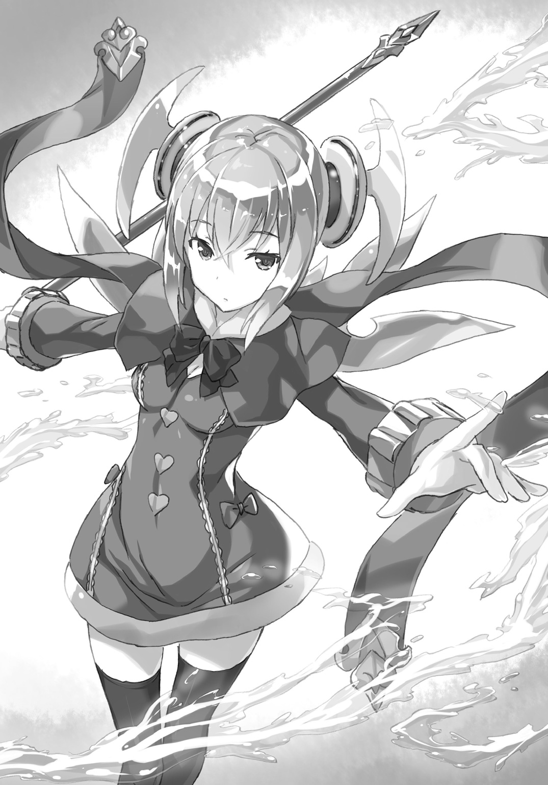
今度は二人の頭上に集まり、巨大な水の壁になる。
「これで大丈夫」
「くっ！ 焼け死になさい！」
火の玉はその水にぶつかっていく。いくら、その威力が強くても火は火だ。水に突っこめば儚く消える運命にある。水の壁を壊すことはできない。
結局、火の玉の連打が終わっても、水の壁は蒸発しきらずに残っている。
「水から火と畳みかけたせいよ。自分から不利になるような順序で技を繰り出すなんて。悪いけど、実戦経験が悲劇的に足りてない」
たしかに上級の仙人と戦った経験は、韓変にはない。それが致命的な詰めの甘さを作りだしてしまっている。
「やっぱり、才能だけじゃダメなのよね。経験がなければ、何も生かせない」
楊戩の言葉は、わずかながらに感傷的だ。
「でも、裏を返せば経験さえ積めば、どこまでだって強くなれる。私だって、天才の名に恥じないところにまで行ける！」
みずからを勇気づけるような言葉。この仙人を倒すことが、一つの通過儀礼になる。楊戩の目は新米の仙人のようにひたむきだ。
それとは対照的に、火の玉をすべて食い止められた韓変の顔には、焦りの色が浮かんでいる。
「こ、こうなったら、モードチェンジ――」
「もう、遅いわ。戦争だから大目に見てね」
どこか冷めたような声で楊戩が言う。
韓変も何かが楊戩から欠けていることにようやく気づいた。
だが、それが何かはすぐにはわからなかった。
答えは、犬だ。
さっきまで乗騎として使っていた、あの犬がいない。
そう韓変が意識した時には、腹の半分を哮天犬に食いちぎられていた。
遅れて、おかしくなりそうな激痛がやってくる。
「あっ............嗚呼嗚嗚嗚ぁぁぁぁっっっ！！！」
断末魔の悲鳴とともに韓変は地面に落下し、鈍い音を立てた。
その手から放り出された宝貝を楊戩がキャッチする。
「よし、これで二つ目。吒、善は急げよ。ぶち壊して」
楊戩がそれを投げ上げる。
「了解」
吒ももう一つを放り出す。
そこに吒の【火尖鎗】が狙いを定める。光線が二つの【四元大輪】を貫き、爆発させた。この二つの宝貝は無事に世界から消滅した。
「手間かけさせないでよ。はいはい、これで残るは子機だけね」
楊戩は、ふうと息を吐く。自分の作戦は瑕疵の一つもなく完了した。
「ふふふ、愚かですね......」
しかし、韓変は最後の力を振り絞るようにして笑っている。不吉な光景だ。どこに笑えるような要素がある？
韓変がよろよろと左手を挙げる。その手には何かが握られている。
新たな宝貝か？ 否。それはたんなる発煙筒だ。白よりは灰色に近い狼煙が戦場を睥睨するかのように立ちのぼっていく。
「この煙を見たら、出力全開で子機を使えと......命じています......。子機を使いすぎると、体にも変化が現れるので、こちらの兵士もただではすまないでしょうが......」
楊戩の顔が曇る。
「宝貝をつぶしても子機は生き続けるわけね......」
「そうです......。【四元大輪】が消えた以上、今後の充電はできませんが、パワーが切れるまでは子機は使い続けられますので......。もう、西岐はおしまいですよ......」
痛みに襲われているだろうに、韓変の顔はどこか恍惚としている。ある意味、彼女の役目はこれで果たされたのだ。
「姉さん......ワンマンラ......イブ......できなく......なっちゃいましたね......」
天のほうに伸ばした手は何かをつかんでいるように見えた。
「連れていってくれるんですか......。それじゃ......あっちでやりましょうか......。手は二本とも残っています......から......ギターは弾けそうで......」
韓変の白い魂魄が封神界へと飛ぶ。物理的な影響はないはずなのに、楊戩は魂魄が飛んでいく際、地響きのようなものを感じた。
「仙人同士のつぶし合いはきついけど、それどころじゃないみたいね」
楊戩は韓変がいた場所から目をそらし、哮天犬に乗ると、姿勢をできるだけ低くする。このほうが空気抵抗を受けずにすむ。ツインテールだけが風を受けて揺れた。
「私は直接、太公望と会って作戦を決めるわ。あなたは先に携帯端末で知らせておいて！」
「飛べば、吒も時間に大差ない。行く」
楊戩は哮天犬を宿営地まで一気に加速させる。少し遅れて吒もついてくる。
しかし、宿営地まで引き返す必要はなかった。
四不像に乗った太公望が同じように突っこんできたのだ。
狼煙と思われる白煙が上がった直後、急に敵兵の動きが変わったように見えた。
宿営地からでも、それがわかった。いいほうに傾いたのか、あるいは悪化しているのか、判断は難しいが、とにかく次の局面に移行した。
そばにいた姫昌を一瞥する。
「少し出かけてきます」
「はい。やれるだけのことをやってください」
聡明な姫昌も戦況に変化があったことはわかったらしい。それを解決する力が仙人にしかないことも、よく知っている。
「必ず、西岐軍を救ってみせます」
四不像に乗ると、ひとまず楊戩を探した。空を走っている犬がすぐに見えた。接近する間にも、地上では炎のようなものが上がっている。
【四元大輪】の子機が本格的に使われだしている。
「先輩、なんだか様子がおかしいっスよ！ 敵の兵士が化物みたいになってるっス！」
たしかに炎を操る人間は化物だよな――などという次元の話ではなかった。本当に角のようなものが生えたり、肌の色が真っ赤になったりして、殷の兵士が化物に変わりつつあるのだ。
「やっぱりな......。あんな宝貝もどきを人間が使って、平気ですむわけがないんだ」
楊戩と吒に合流する。
「太公望！ 仙人二人は倒したわ。宝貝もぶっ壊した！ でも、子機は――」
「皆まで言うな。さて、どうやって味方を逃がすかだよな」
上空から地上を見下ろす。ある程度、撤退は進んでいたが、谷間にいる本隊に敵が近づいている。あそこには、総大将の黄飛虎がいるはずだ。
炎と悲鳴が湧き起こる。
思わず、目を閉じて、舌打ちした。過度の臨場感はかえって、判断を鈍らせる。
「俺はずっと逃げ続けてきたんだ。今回も仙人は倒したし、あとは逃げるだけで勝ちなんだ......。堂々と逃げたらいいんだ......」
問題は、今回は逃げるのが自分だけじゃないことだ。
世の中には要領の悪い者もいる。逃げられない者に、逃げようとしない者。そして、そんな人間も赤の他人ではない。自分の下にいる兵士たちだ。
軍師は将兵すべての命をあずかっている。
心労で腹が痛くなってくる。
敵は黄飛虎の部隊を囲もうとしている。ここで黄飛虎が討たれれば、ほかの兵士たちへの指揮もとれなくなる。混乱が増幅して、死者はさらに増える。
「先輩、どうするっスか......？」
四不像が不安そうに尋ねる。四不像にも主人の沈鬱な気持ちが伝わってくるのだろう。
「まだ兵は入り乱れてない。吒なら殷の兵だけ吹き飛ばせる」
吒が淡々と選択肢を提示する。
たしかに能力的にはなんら不可能なことはない。問題は、それが禁じ手だということだ。
「ダメよ。この数の人間を殺戮したら、間違いなく崑崙に封神されるわ。吒は魂魄がないんだっけ？ なら、廃棄処分になる......」
楊戩がその策を蹴る。仲間に犠牲を強いる策なんて、誰だって肯定できるわけがない。
「あれは人間？」
吒の言葉は短いが本質をついている。
殷の兵士たちは異形のものと化している。しかし、最低でも仙人ではない。
「歴史管理者の定義で言えば、人間ということになるな」
「特殊な力を行使している以上、人間に分類されようと排除すべき。仮にあんな姿の兵士を放置しても、殷は混乱に陥る。消すしかない」
まだ、答えは出せない。正確には、決断が下せない。
普通なら、仙人は人間を見捨てるところだ。
自分たちの作戦が失敗した、理由は敵の仙人の卑劣な策だ、そんなふうに報告すればよいことだ。評価を落とすかもしれないが、罪にはならない。仮に出世が遅れたとしても、そんなもの、望んでもいなかったじゃないか。
「あなたがずっと目を閉じてるみたいだから、私から提案するわ」
楊戩が太公望と正面から向き合う。
まるで逃げるのを防ごうとするみたいに。
「黄飛虎だけでも助けない？ 人への攻撃はダメでも、救出ならご法度じゃないわ。将軍レベルの人材だけでも空から離脱させれ――」
「そんなことしたら、見捨てられた兵士は虐殺されるだけだ。仮に生き延びても、永遠に西岐のためには戦ってくれないだろうよ」
それに黄飛虎だって自分だけが助かるだなんて恥知らずなことを許せないだろう。
それは将軍としての生命を終わらせるに足る屈辱だ。
「わかってるわ。でも、このままじゃ黄飛虎まで死ぬわよ。可能性の芽も摘まれる。私たちにできることは犠牲者を減らすことだけ。あとで恨まれてでも、誰かが泥をかぶるしかないのよ」
泥をかぶるという言葉が、頭に強く残った。
ようやく、目を開いた。
「だから、働きたくなかったんだよな」
少し間の抜けた、自嘲的な言葉。
それは、何かが吹っ切れたことを意味していた。
「楊戩、吒、戻っててくれ。あとは俺でやっとく」
「えっ？ 私たちも手伝いぐらいは――」
「俺一人で大丈夫だ。リーダーを信じてくれよ」
上手く笑えているかわからないが、自分なりの全力で笑う。
「さっきはお前らにやらせたからな。次は俺の番だろ。これでもプロジェクトリーダーなんだ。やる時はやる」
その態度に楊戩は不安なものを感じたようで、浮かない顔をしていた。
こんな時に聡すぎるのは問題だなと太公望は勝手なことを思う。
「太公望、ちょっと変だよ......。潔すぎるっていうか、急にかっこいいこと言ってる......」
「たまには、リーダーらしいことだって言うさ。お前に蹴られたくないしな」
楊戩が心配しようと、大丈夫だと言い続けるだけだ。この策は自分一人で何の問題もない。
「韓姉妹はお前に任せただろ」
自分でも卑怯だとは思った。先ほどの楊戩の決意を利用している。
こんな奴は楊戩なんかじゃなく、馬にでも蹴られて死ねばいいのだ。
楊戩は、顔を歪めて、悔しさを紛らわすように、その桃色の髪に手をやる。
「............ろくでもない結果だったら、承知しないからね」
駄々をこねるほどに愚かでもないから、楊戩はそう答えるしかない。
「俺は効率のいいことしか試さないからな」
仲間にうなずいてみせて、背を向ける。目的地は黄飛虎のところ――西岐の軍で最も悲惨な状態に陥っているところだ。
「行くぞ、スープー。このまま直進な」
ぽんぽんと四不像を安心させるように、頭を叩いてやる。
「楊戩さんも言ってたっスけど、変なことはしないでくださいっスよ......」
「俺の最高の策を見せてやるよ」
黄飛虎の部隊を目指して飛んでいると、タオルケットに乗って空の上から何かが降りてきた。
よく知っている顔だ。その雷の化身のような高貴な金色の髪もどことなくなつかしい。少なくとも敵じゃないし、そいつが敵になった時点で何もかもおしまいだ。
「なかなか大変なことになってるね、太公望。やっぱ、働くのって大変だよね」
太上老君は今日もマイペースに、小さな口であくびをする。他人事だと思ってのんびり戦場を見物しているんだろう。なにせ、どこにも所属せずに悠々自適に生きているんだから。背負うべき責任だって一グラムもない。
「そうだな。人生最大の危機かもな。やっぱり働いてもいいことないや。ずっと部屋にこもってるべきだった」
傷ついたり、傷つけたり。
人が集まると笑えない事態が起こる。
そういうのを見るのも嫌で引きこもっていたけど、それも年貢の納め時で、また悲喜こもごもの渦の中に巻きこまれてしまった。やってられないのは、引きこもっていても、それはそれで心の平安からは程遠かったってことだ。
いろんなものに関わって、関わられて、苦しんで生きていくしかないのか。せっかく仙人になったというのに、悩みは尽きないどころか、増殖し続けている気さえする。
「ボクだったら、あの変な道具を使ってる、人間でなくなりかけてる連中、消せちゃうけど」
表情も変えずに太上老君は取引をしてくる。
交換条件はとくにない。無償の、ある意味、一番恐ろしい取引だ。
「いくらお前でも、人間、殺しちゃダメだろ。見た目がキモくても人間なんだぞ。キモいってだけで警察に通報しちゃいけないのと同じだ」
「いけないことだけど、ボクを罰することのできる仙人なんていないしさ。形だけの追手みたいなのを適当にあしらって、ごめんなさいって言い続けたらそのうち許してくれるでしょ」
「仙人の世界すべてを敵にまわす気か？」
太上老君の言ってることは、つまりそういうことだ。
「全員敵にまわしても勝てるから、何も困らないよね」
本気でそう言っているのは長い付き合いだからわかった。元始天尊だろうと誰だろうと敵が来たらやっつける。その自信と実力が太上老君にはある。
「お前に借りを作ると、あとで高くつく」
「ボクは太公望のためにいろいろしてあげたいだけなんだよ。働いたほうがいいって前に言ったけど、たしかに太公望は働きだしてから成長してる」
あながち間違いでもないんだろう。
太上老君が興味を抱いている唯一の仙人だという自覚はあった。
猫の手よりはるかに役に立つ手を貸してくれるだろう。
それでも、首を横に振る。
「ここでお前に助けてもらったら、一生ダメダメで生きてくことになりそうだ」
「太公望、立派になったんだから、少し甘えてもいいのに」
「気持ちだけいただいとく。ありがとう、李誕」
最後の、ありがとうには心をこめた。
真心ぐらいしか、くれてやるものがないのだ。
「自分のために誰かを犯罪者になんてできるか。まして、自分の友達を犯罪者にしてたまるか」
「うん。太公望はそうでなくっちゃね。太公望は、その不器用なところがいいんだよ。萌えちゃう、萌えちゃう」
「美少女にそう言われても複雑な心境だよ」
少し太上老君の表情がやわらかくなる。そっちから提案してきたくせに、それを断ったら株が上がるというのも変な話だ。
「それじゃ、長居しちゃ悪いしね」
最後にどういう言葉をかけようか迷った。
「またな」
この言葉が正しいかわからないけれど、願いの意味もこめて。
「うん。『また』がなかったら、許さないからね」
太上老君はふらふらと荒野の彼方に消えていく。目的地すらないのかもしれない。
「スープー、足止めさせて悪かった。このまま行ってくれ」
「承知したっス！」
山のふもと、岩肌を背にして、集まっている大軍がいる。
あの中央が黄飛虎の部隊だろう。
黄飛虎の用兵は的確で、大きく兵を失うこともなく、各個撃破されそうだった小部隊を自分のところに吸収していた。そこまではよかった。
しかし、敵が普通の人間でないことまでは、用兵が巧みなだけではカバーできない。
時間が経つごとに、追い詰められていく。
普通の人間は炎や風を生み出すことはできない。そんなものと戦うことになった時点で、勝ち目はない。
背後の岩壁を除く周囲を殷の兵に囲まれる。つまり、逃げ場がない。そこに、体を真っ赤にさせて、皮膚も甲殻のように硬くさせた殷の兵士がやってくる。
このままでは本当に殲滅させられる。
殷の兵士たちは、目がとろんと寝ぼけたように曇っている。化物なうえに、人間としての意識すらないようだ。
「指揮をとっていた武将なんて本当に飾りだ。真の敵は、宝貝級の強力な兵器を持ったこの人間一人一人だ。妲己か胡喜媚かわからないけど、そのへんの奴が考えた策だろうよ」
もはや、地獄の鬼を集めたような光景だ。
声も臭気も人間のものとは思えない。
「おおかた、事前に軽い改造はやってたんだろうな。子機はどっちかというと、トリガーなのかもしれん。今更、どうだっていいけどさ」
「無茶苦茶っス......。妲己三姉妹、とんでもない悪党っス......」
「だけど、かえってよかったかもって思ってる俺もいる」
「えっ？ どういうことっスか？」
「こいつらが普通の人間じゃないほうがいいケースもあるんだよ」
長話はいい。とっとと目的地を目指す。
「黄飛虎、よくここまで頑張ってくれた」
将軍に声をかけて、陣中に降り立つ。
いまだに西岐の兵が壊滅せずに粘れているのは、黄飛虎のおかげだ。殷の将軍であった経歴にウソはない。真の武将は危機に陥った時こそ、その価値を見せつける。
「名門、黄家の人間として無様なことはできないからね。たいていの敵の戦術には対抗できる自信があったけど、相手がこんな秘密兵器を持っているなんてのはケースにないよ。少なくとも、華麗に勝つのは無理みたいだ」
ノリはいつものように軽いが、黄飛虎の言葉も決意も重い。
「これは勝とうと思うと玉砕覚悟になっちゃうかな。しかも、敵もすごく気持ち悪いし。まだまだこの世界にはかわいい女の子がたくさんいるんだけど、あ～あ、もったいない」
「あとは俺一人でなんとかする」
言ってしまえば、太公望の心も軽くなった。
「だから、お前は迅速に宿営地に戻れ。それだけで俺たちの勝ちだ。もう敵将は討ち取ってる。逃げれば大勝利なんだよ」
黄飛虎も固い表情になったが、「わかった」とだけ答えた。
「男だからって、女の代わりに死ぬとかいうのは好きじゃないからね」
「心配するな。俺はもっとセコい奴だよ」
「君がもっときれいだったら、楊戩ちゃんみたいに惚れちゃってたかな」
「楊戩も戻ってるから、ねぎらいの言葉でもかけてもらってろ」
将軍に指示は出した。いよいよ、最後の大勝負に出る。
「先輩、今度はどんな策があるんスか？」
「スープー、最前線に連れていってくれ。そしたら、すぐに後方に逃げろ」
四不像に背中を向けて、言う。
「生きることをサボるのだけはダメっスよ......。まだまだ先輩の乗騎として働くつもりっスからね」
「死ぬつもりなんかない。ただ、お前がそばにいて、ゆっくり見てられるような策じゃないだけだ。大がかりだからな」
人間のかたまりとかたまりの間に大きな切れ目がある。そこが西岐軍と殷軍の境目だ。
少し殷寄りのところに降りると、すぐに四不像の真ん前に立つ。四不像を守るためというわけでもないんだけど、そういうふうにとられてしまったかもしれない。
「もう、戻っていいぞ」
「この状況を覆す、すごい策を信じてるっスよ」
四不像は名残惜しそうだったが、
「先輩は不可能を可能にできる男ッス！ リアルは充実してないかもしれないっスけど、みんなのためにいいリアルを生み出せる人っス！」
言いつけを守って、その場を離れた。ここでじっと残って、主人に迷惑をかけるのは本望ではないと考えたのだろう。
敵の兵士たちの目が太公望一人に向けられる。手には一様に例の子機が握られている。しかも、異形の姿だから、ますます恐ろしい。
「子供の頃だったら、半泣きだな、こりゃ」
頭に浮かぶのは、どっかのテーマパークで入ったお化け屋敷のことだ。でも、ほとんど下を向いて進んだから、記憶には不鮮明にしか残っていない。気づいた時には、暗いところから出たせいか、よく晴れた青空を実際以上にまぶしく感じていた。
そうだ、闇の先には光がある。この世はそんなふうにできている。
準備運動の暇はないから、せめて首を動かして、こきこき鳴らす。
「スープー、できれば、お前のところに戻ってきたいな」
落ち着いた顔で【打神鞭】を手にすると、風量を「弱」から「強」に、種類を「とばす」から「まきあげる」にする。
「俺にとって人生最大の事件かもな」
敵兵が一斉に突っこんでくる。
「引きこもりもたまには荒ぶるんだよっ！」
太公望も敵目がけて駆ける。
そして、【打神鞭】を弧を描くように振るう。
「竜巻よ、来い！」
自分の目の前に空気の渦を作る。
――――謬迂迂迂迂迂迂迂迂！
その渦は急速に巨大化し、敵を巻きこむ。
その体を浮かし、上空へとさらっていく。
人間に宝貝を使う。タブーを破る。それ以外に打開策がないから。
「地に足なんてつけさせるかよ！ 踊れ、踊れ！ 俺の踊りに付き合え！ 誰にも迷惑をかけないように、引きこもっていた男の舞だっ！ カビくさくても我慢しろよっ！」
そのまま自分も風に乗る。
正面が竜巻に喰われたら、次はその左右だ。唯一人として残すつもりはない。
声が聞こえる。雄雄しい叫びではなく、心細そうな声。それと悲鳴。殷の兵すべてが空の中を転がっていく。一万を超える人間が空を舞う。
この世界では、有史以来はじめてのことだろう。きっと二度目はないだろう。
力の使いすぎで、自分の頭もふらふらする。それとも、自分も竜巻の中に入っているせいか。竜巻酔いか。もう、やってしまったことだ。せめて、とことん楽しんでやる！ 後悔もしないし、反省もしない！ 罰だって喜んで受けてやる！
荒々しい風を受けて、兵士の持っていた子機は羽根がちぎれて、次々に壊れていく。これなら、もうあの扇風機に怯えることはなくてすみそうだ。
数が数なので、飛んでいる者の表情も千差万別だ。
泣き叫ぶ者だけじゃない。鳥になったとでも思ったのか、泣きながら笑っている奴もいる。姿が化物じみても笑えるものなんだな。
最初の一分で失神している奴もいる。地面に叩きつけられたり、岩壁にぶつかったり、兵士同士で正面衝突して、即死する奴もいる。
けっこうな数の人間が死ぬ。一割とはいかなくとも数百人は死ぬだろう。
大量の赤い血も流れる。
むしろ緑や紫の血でなくてよかったかもしれない。
しかも、竜巻は決してその場に立ち止まったりはしない。
広がって、広がって、殷の兵士の本陣にまで迫っていく。
逃げ場所などない。その中に取りこんでいく。
もちろん人間だけじゃない。砂から、陣中で使われていた炊事道具から、山に住み着いていた狐から、あらゆるものが風の中の一部となる。
ある意味、ここは平等な空間だ。風を起こした張本人もすでにコントロールを失っている。ひとたび竜巻が起これば、あとは竜巻自身がその活動をやめるのを待つだけだ。
スイッチをオフにすれば消えるわけではない。
唯一の不平等といえば、竜巻に飲まれている兵士が殷側ばかりということか。
西岐の軍師として――というより、一人の仙人、いや、一人の人間として、これがけじめのつけ方だと思った。
人との接点を極小にして、部屋にこもっていた。
そんな自分でも多数の人間を巻きこんで生きていける。これが、その到達点だ。
まだまだ、達観できていなかった。人間やめて、仙人になって、何年目だったか。ろくに俗世から足を洗えていない。俗世の塵で灰色だ。ドブネズミの色だ。
でも、後悔はしないからな。
「厳罰は確実だな。まあ、五十人殺すのも五百人殺すのも大量殺戮にゃ変わらないだろ」
背後に目をやると、西岐の部隊が粛々と退却をはじめているのが見えた。
黄飛虎はきちんとやるべきことをやっているようだ。
それでいい。お前ら、西岐の兵は死ぬべきじゃない。理不尽な力に殺されるべきじゃない。だから、逃げろ。全力で逃げろ。それぞれが、今できること、やれることをやってくれ。
この竜巻のせいで、殷の兵士は西岐の軍を恐れるだろう。西岐につく味方も多少は増えるだろう。やっていることは犯罪者の仙人とまったく同じだけれど。自分の問題行動一つで、この世界の歴史は好転する。正常にまわる。
風の中、天地がひっくり返った中で、つぶやいた。
「批評や裁きは他人がやってくれ」
◇ ◇ ◇
実に三十分にわたって、その竜巻は続いた。
すべてが終わって地面に足を着いたら、上手く立てなくてふらついた。使用者すら、力を使い果たした。いや、使用者だからこそ、体にきているのか。
空を見上げると、晴れ間の中に不気味な黒いかたまりのような雲が浮かんでいる。いかにも、不安を具現化したような形をしている。
祭りのあとは悲惨だった。
まず、物言わぬ体になった者たちがそこかしこに斃れている。生き延びた者も、かなりの数が何が起こったのか、自分の常識では理解できずに呆然としていた。糞尿を撒き散らして逃げる者もいた。
よかったこと？ というと――
「化物じゃなくなってるな......」
兵士たちが死者も生存者も人間らしい姿に戻りつつあることだ。
一時的な変質だなんて甘いことを妲己の一味がやるとは思えないから、宝貝もどきが壊れたせいだろうか。これで化物騒ぎまでは起こらずにすみそうだ。あらためて、人間の死者が出たと自覚しもするのだが。
でも、化物がこのまま大地を闊歩する現実よりは、きっと救いがある。このほうがまともだし、人間の死体なら悼んでやることだってできる。
「大至急、ここにふかふかの布団を持ってきてほしいな」
地べたに腰を下ろして、言った。すべての鬱屈が風とともに持っていかれたのか、妙にさばさばとしているのが自分でも不思議だった。
「師匠の奴、怒るだろうな。ハリセンだと何発分かな。というか、元始天尊の直弟子がこんなことしたら、師匠も連帯責任で降格とかするのかな」
どれだけの処罰がくだるかよくわからないが、崑崙をクビになることはほぼ確実で、最悪封神界送りになるだろう。
仕方ない。西岐兵が虐殺されるのを黙って見過ごすことは自分にはできなかった。
しかも、不幸なことにそれを止める力を持っていた。
「人間以上、仙人未満の人生だな」
――と上空から何かが降りてきた。数人乗りの船のような宝貝だ。
「早速、崑崙からのお迎えか？」
だとしたら手が早い。危険人物と見なされたか。
今は抵抗する力も残ってないのだ。
できれば、四不像とはあいさつして、吒にも声をかけて、楊戩には一発ぐらい殴られたいのだけれど。でないと、自分よりも同僚のほうがけじめをつけられないだろうから。
しかし、その船から出てきた仙人たちは崑崙の見知った顔ではない。
鹿のような二本の角が生えた女だ。その後ろにいるのは白衣姿の女と、やけにお嬢様然とした金髪の女。
そのうちの一人は本人と会話を交わしたこともないが、見覚えがあった。
「あなたが太公望さんですね。会議の席で一度ぐらいは顔をあわせたこともあったでしょうか」
鹿の角の女――まだ少女と言ってもいい歳に見える――が三人を代表して、前に進み出てくる。かすかに蘭か何かの香りが漂ってくる。
けれども、なぜか蘭の香りと同時に機械油のようなにおいもするのだけれど。
「私は金鰲の聞仲と申します。後ろにいますのが、呂岳と趙公明です」
聞仲の姿は楊戩の変化した姿で嫌というほど見ていた。それでも、こうして本物が目の前に来ると、まったく違う次元の迫力がある。
残りの二人もいずれも金鰲の幹部だと、名前で知れた。
しかし、連中がどうしてここに来たのか、さっぱりわからない。この世界の管理は自分が任命されたことからもわかるように、崑崙側が行うもののはずだ。
「いったい、何なんですかね」
座ったままというのは礼を失するので、よろよろと腰を上げる。それに座ったままで、相手に見下ろされるのも癪だ。
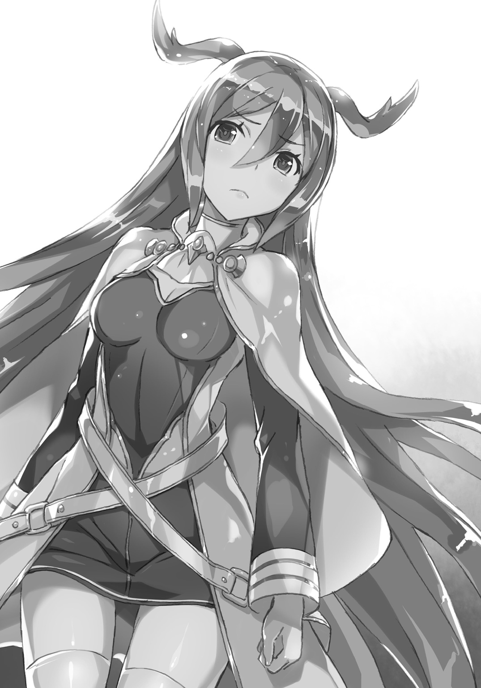
「本日は、あなたに通達するべきことがあって、参りました――が、そんなことはあとまわしです」
聞仲はつかつかと太公望のほうに詰め寄ってくる。そして、太公望の両肩に爪を押しこむようにつかんだ。相手を恫喝する時ぐらいにしか使わない姿勢だ。
「太公望さん、これはどういうことですか？」
なぜか聞仲の頭から、湯気が出ているように見えた。
「これって、何がだ......？」
その態度に、自然と太公望の口調もタメ口になる。
「上空から竜巻を見ました。あなた、人間に対して、殺傷能力のある宝貝を使いましたね！ どれだけの数の人間が死んだんですか？ 歴史管理者の風上にもおけません！ 今すぐ封神界へ送りこんでやりたいぐらいですよ！」
ああ、にらまれていた理由はそれか。
そうはっきりと言われて、かえって、救われた気がした。
「悪かったとは......思う......。でも、これが俺の一世一代の策だったんだ......」
「これのどこが策なんですかっ!?」
うん、それが正常な反応だ。
自嘲的な笑みが漏れた。
絶望すると笑うしかないというが、たしかに何も残されていないと素直に悲しむこともできない。
自分は最善だと思った策であがいてみせた。あがいた以上、なんらかの結果が出た。死者も出た。もうちょっと、きれいに収まるかと思ったが、ダメだった。
胸は張らない。だが、卑屈になる気もない。
「あなたは曲がりなりにも歴史管理者なのでしょう？ 野良仙人の犯罪者じゃないんでしょう？ 死んでいった者たちの魂はどうなるんですか？ どうして、こんなことができるんですか？ 答えてください、答えてください！」
聞仲が泣いていることに気づいた。
この女、本当に純粋なのだと思った。仙人としての決まりがどうとかではなく、単純に目の前の殺戮劇が許せなかったのだ。
「落ち着きなさい、聞仲！ 興奮したら、また倒れるわよ！」
白衣の仙人の鋭い声が後ろから飛んできた。たしかに、湯気がやけに濃くなっている。
「わかってはいます、呂岳さん......。でも、殷の人が殺されていくのを......見るのが......つらくて......。死んでいった者の魂はもう戻らないのに......」
その時、聞仲の目が太公望の背後に向いた気がした。
「何ですか、これは......？ 蛍火......？」
戦場の死体に蝶が群がることはあるようだが、蛍が集まるだなんて話は聞いたことがない。だが、たしかに何かが光っている。それも無数に。
もしかして、成功したかな。
その光が一斉に天へと舞い上がっていく。
もちろん、蛍火ではなく、魂魄だ。
「かろうじて封神の対象になってくれたみたいだな」
気持ちが少しだけやわらいだ。封神が遅れたのは、魂魄が小さくて捕捉しづらかったからだろうか。
「どういうことですか？ 今のは神仙の類でもなければ人間世界の英雄でもなく、一般の人間の兵士でしょう？」
聞仲が、まだうるんだ目で、いぶかしげに自分を見つめてくる。
引きこもりの男が余計なことをすると、少女が泣く。まったく、罪な男だ。
「あの死体、ちょっと前まで化物みたいな姿をしてたの、知ってるか？」
「えっ、どういうことです？」
案の定、そこは見てなかったんだな。
もっとも、見た目が多少変わっても人間は人間なのだが。
「封神界のシステムは厳密なものじゃない。仙人や神仙並みの力を持つ人間の魂を選別してる主体がいるわけじゃない」
「それぐらいは、わかっています。能力のすぐれた者の魂魄はすべて捕らえるようにできているはずです」
「なら、妲己にすっかり操られて、宝貝くずれのアイテムを使ってた兵士の魂魄が封神の対象になったとしても、定義上はおかしくない......よな？」
自分の体や心を蝕んでまで、何かの武器を使って戦い続けるとなれば、普通の人間の範疇を超えている。だとすれば、それは封神に足る魂魄になる。
太公望がぎりぎりの段階で決断した策だった。
大量殺戮になるなら、せめて封神扱いにする。それなら、魂魄は消滅していないから、原理上は復活の可能性も残されている。
「もっとも、成功する確証もなかったし、すぐに魂魄が飛んでいかなかったから、失敗かなと思ったけどさ......。まあ、よかった。どうにか成功したみたいだ」
心から笑えたと思った。
目の前の聞仲が少し毒気の抜かれた顔になった。
「あなたは......そんなことを、考えていたんですね」
「傷つくのは嫌だから、傷つけるのも嫌だ」
「だ......だからって、あなたの罪が消えたわけじゃないですからね！ 封神だから殺人には当たらないとまでは言わせませんよ！」
「わかってる。それで罪を減じてくれって言う気もない。崑崙側の裁きは受けてやるよ」
聞仲は、まだ充分に得心したというふうではなかったが、少なくとも湯気のようなものはもう出ていなかった。気は静まったのだろう。
「ま、まあ......このことは本題ではないので、これぐらいにしておきましょう」
剣幕に押されて忘れていたが、この金鰲の仙人たちは別の目的で来たのだ。今までのはたんなるクレームだ。
こほんと聞仲は咳払いをすると、
「本題を通達します」
と、あらためて正面から太公望を見据えた。
「ああ、なんだって通達してくれ。たいていのことじゃ、驚かないからさ」
「殷を滅ぼす作戦を至急中止していただきたいのです」
唐突な要求に太公望も鼻白んだ。
「意味がよくわからないんだけど。崑崙と金鰲の間で管轄権の交代の話がついたのか？」
「その調子だと、あなたは聞かされていないようですね。となると、あなたは面倒な仕事を押しつけられていただけということですか」
聞仲の顔がかわいそうなものを見るような表情に変わる。面倒な仕事という点では、まったくその通りだ。
「ひとまず、これがこちらの資料です」
聞仲が分厚い冊子のようなものを手渡してくる。表紙には「殷王国における歴史管理についての調査報告書」とあった。グラフと細かい文字ばかりだったので、すぐに閉じた。聞いたほうが早い。向こうもこっちが読み終わるまで何時間も突っ立ってる気はないだろう。
「ひとまず、何があったのか簡潔に教えてくれ」
「歴史の確認作業をした結果、殷という国家がこの時期に滅ばないことが明らかになりました。しかも、その情報は金鰲内部でも隠されていました。どうやら、金鰲と崑崙は共謀して、歴史の改変を行おうとしているようなんです」
足下の地面が消えたような浮遊感があった。
「これは推測ですが、両組織のトップは妲己を倒すために、歴史を変更してまで殷を滅ぼそうとしているのでしょう。それ以外に殷を滅ぼす理由が見つからないからです」
「ウソ......だろ？ 歴史管理者が歴史を歪曲しようと、してた......？」
じゃあ、なんだ。自分は悪の片棒をかついでいただけなのか？
そんなはずはない......と思いたい......。
力が抜けて、本当に立っていられなくなる。そのまま、前に倒れそうになる。
呂岳という仙人が前に飛び出してきて、体を支えてくれた。そうなることを知っていたというぐらい、動きに無駄がなかった。
「近くにしょっちゅう倒れる奴がいるから、こういうのはよくわかるの」
冗談のつもりなのか、呂岳は苦笑いを浮かべている。小学校の保健室の先生がこんな雰囲気だった。
「顔色が死人みたいになってる。しばらく休んだほうがいいわよ」
「あ、ああ......。体力の限界に挑戦したからな......」
むしろ、地面に倒れたほうが楽かな。でも倒れたら、二度と起き上がれなさそうだ。
「本当にひどい仕事をやらされていたみたいね」
プロジェクトリーダーなんて大それた立ち場を押しつけられたと思ったら、いざという時、トカゲの尻尾切りをするためか。なるほど。同情もされるわけだ。
「もう！ 呂岳様に介抱されるだなんてうらやましいですわ！ その権利、言い値で買いますわ！」
「趙公明、あんたはしゃべると面倒だから、黙っときなさい」
やけに高そうなドレス姿の女を、呂岳がたしなめた。
あまりそうは見えないが、この女も並みの仙人ではないはずだ。
顔をどうにか上げると、聞仲と目が合った。
知らないうちににらまれていた気がした。
「今更確認するまでもなく、人間の力を超越した仙人が歴史を故意に変更することこそ、仙人としての最大の悪徳であり、だからこそ、そのような仙人を罰するために歴史管理者が存在しているのです。しかし、その歴史管理者が歴史に変更を加えようとしている。言語道断の振る舞いであることはご理解いただけるでしょう？」
首だけでうなずく。限界を超えて【打神鞭】を使ったせいもあって、頭がまわらない。それでも、このにわかに信じがたい話を聞くぐらいならできる。
「そこで、我々は通天教主ほか数名の幹部を幽閉いたしました。今の金鰲は我々の管理下にあります」
つまり、金鰲でクーデターが勃発したということか。
「さて、我々が早急にやらなければいけないことは、本来の歴史管理者の任務に立ち返ることです。具体的に申せば、殷が滅ばないように手を加えることです。そこで、崑崙側の現場責任者のところに来たというわけです」
ここまで順を追って説明されれば、わからないことはない。
問題はそんなことを話されても、自分には何の決定権もないということだ。
目が茫漠とした荒野のほうに注がれる。まだ、倒れている兵士が幾人も見える。
「話はわかった。俺のほうも、上と話はする。けど、俺の一存で判断できるレベルはとっくに超えてるからな......。そっちはそっちで、崑崙の上と話をつけてくれ」
「そうですね。崑崙の総意を確認してまいりますよ。それでも崑崙が誤りを認めず、殷を滅ぼす計画を続けるなら、金鰲は歴史管理者の存在意義にかけて崑崙を滅ぼしますので」
歴史管理者同士の戦争......。
何もかもが悪い夢のようだ。妲己による幻覚なんじゃないかと疑いたくなる。
「以上で、我々の話はおしまいです」
「たしかに聞いた。こちらも善処する」
ゆっくりと体を呂岳から離す。もう、立つぐらいはできるようだ。
「そ、それと、あなたに......ごく個人的なお話をしておきます」
聞仲が太公望の耳元に顔を近づける。
何か迷っているようだったが、ぼそぼそと口を開いた。
「もし、崑崙の下す裁きで封神されるようなら、こちらに逃げてきなさい」
「えっ？」
「あなたが命を軽んじない仙人であることはわかりました。絶望的な状況の中で可能な限り、人的被害を出さないように努力したことは評価いたします。もちろん、行為が許容できることかは、話が違いますけれどね」
「......最低でも、この世に一人だけでも理解者がいてくれて、よかったと思うことにするよ」
それで罪が消えるわけではないし、理解してもらえなくてもいいと思っていたけれど。
「この陰謀に巻きこまれている以上、あなたも被害を受けている側です。今回の戦いで、あなただけが責めを負わされるのなら、それは明らかな不正義。命ぐらいは助けてあげます」
「ありがとな。崑崙から金鰲に移るとか、なんか、政治犯の亡命みたいだな」
間を置いて、「卑劣なものが許せないだけです」と返事が来た。
この聞仲という仙人は、私欲のためにクーデターを起こすような、ずる賢い女じゃない。
まっすぐにしか生きられない、あまりにも不器用な女だ。
「では、我々はこれで失礼します」
顔を離した聞仲の表情はなかなか生き生きとしていて、涙のほうも乾いていた。新卒採用のためのパンフレットに出てくる社員の写真みたいだと思った。こんなに楽しそうに仕事ができる奴なんて実在したのか。
「ああ、お疲れ様」
「これから、さっそく崑崙に行きます。さようなら」
一礼すると、聞仲はさっさと乗ってきた船の宝貝に戻っていく。「殷って、有名なお菓子とかないんですの？」などと間の抜けたことを言いながら、趙公明がよたよたと続いた。
「人に振り回されるって点だと、あなたと似てるかもしれないわ。お互い、大変ね」
最後に残った呂岳が笑いかけてきた。この女が聞仲の保護者的な立場にいることがなんとなくわかった。
「ああ、自分の部屋から出ないのが一番だった」
「責任ある立場にいると、そういうわけにもいかないのよ」
全員が入ると、船は天に向かって飛び上がっていく。
「師匠のところに戻る理由が増えたな」
自分の罪状の報告だけのつもりだったが、そんなこと、二の次になりそうだ。
船が消えていった先を、ぼうっと見上げていると、入れ替わりのように四不像が飛んできた。
「先輩！ ご無事だったっスか？ 先輩が生きててほっとしたっス！」
すぐさま、四不像は人の形になって抱きついてくる。温かい。いつもはうっとうしかったこのハグも今は少しありがたい。
自分がちゃんと、この世界に存在しているんだということがわかるから。
「スープー、とてつもなくまずいことになりそうだ」
「ど、どうしたんですか......？」
「妲己だけでなく、金鰲も敵になるかもしれない」
四不像は太公望に抱きついたまま、ひっくり返った。太公望もそれにあらがえずに倒れる。
「乗騎になって早々、荷が重すぎるっス！ そんなに背負えないっスよ！」
「俺も引きこもりに戻りたいな」
いっそ、封神されたらのんびりできるかもな――とは四不像には、ちょっと言えない。四不像は太公望が何をしたかもわかってないようだ。わざわざ心配させることはないだろう。
起き上がって、少しばかり、雲を見ていた。黒い雲はごうごうと音をたてて、流れていた。通り雨が来そうだけれど、それでも、今は晴れている。
そして、ほとんど間を置かずに、また誰かが飛んでくる。楊戩と吒だ。
どうにか、みんなと再会できた。リーダーとしては、ひとまず合格じゃないか。
「楊戩、この勝負、西岐の勝ち――」
「バカ！」
地上に降りてきた楊戩に、直後に殴られた。
お前、ちょっとは暴力、封印しろよ。
そう思う前に――抱きつかれた。今度は締め技でくるのかと思ったけど、違った。
泣いている顔を隠すために、そうしているのだと、なんとなくわかった。
今日は女を泣かせすぎだ。風が吹くと桶屋が儲かるんじゃなくて、女が泣く。
「あなた、自分が何をしたかわかってるの......？ いくら西岐の兵士を助けるためだからって、こんなことして......」
やっぱり、楊戩にはすべてばれているらしい。
「これでも封神にとどめたんだから、偉いだろ。もしかしたら、許してもらえるかもしれない」
「もし、許されなかったら......あなたが、ほ、封神されちゃったら、どうするのよ......。卑怯だよ、自分だけ泥かぶって......。ちっとも、ちっとも、リーダーに向いてない......。そういう意味不明な行動とる奴を天才型って言うのよ！ あなたが常識人じゃなかったら、どうやって天才の私に指示を出すのよっ！」
楊戩の言葉は怖いほどに加速していた。楊戩自身もきっと、わからないほどに。
「私、あなたの言葉にしか従わないんだからね......。ほかの誰かをリーダーだなんて認めないから......」
「それじゃ、次のリーダーはお前がやってくれよ」
言った途端に、一度顔を離した楊戩に叩かれた。痛烈なビンタだった。
「縁起でもないこと、言わないで」
「悪かった。今のは俺が一方的に悪かった......」
また、抱き締められた。なんで、こんなにずっと楊戩みたいな美少女に抱きつかれているのか、頭が追いつかなかった。
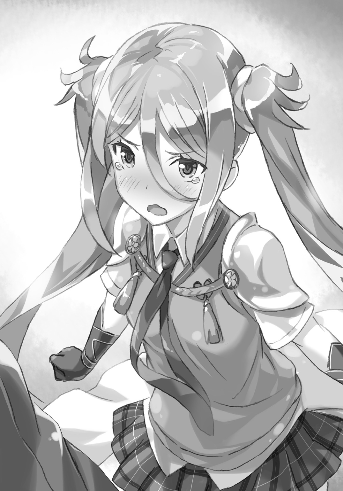
「何が、『悪かった』よ。あなたは悪くなんてないでしょ！ 仙人のルールとしては悪でも、人として正しいことをやった！」
まあ、いいか。
今はこの状態をありのままに受け入れよう。そのほうが仙人らしい。
それに、楊戩にこれだけ認めてもらえるんだったら、それでいい。ほかの平凡な仙人何万人に褒められるより価値がある。
「そうだな、俺のおかげで西岐の兵は救われたよ」
その一言で、楊戩の息がぴたりと止まった。
「バッカじゃないのっ！ 天才を舐めないでよっ！」
握り拳を胸にどんどんとぶつけてくる。
威力が思いのほか強いけど、我慢する。
いたたまれなさを、すべてそこに込めるみたいに楊戩は叩く。叩き続ける。
楊戩はとても腹を立てている。怒っている。「ムカつく」だなんて言葉じゃとても足りない。
「あなたは殷の兵士を救おうとしたんでしょ！ 人間でもない、仙人でもない、たんなる化物になり下がるしかない殷の兵士に引導を渡してやったんでしょ！」
......まさか。どうして、そんなことまでわかってくれるんだ。
そこまで受け入れてくれようとするんだ。
とても、自分からそうだなんて言えないけれど。
「封神できると思ってたんだよ......。そんな、かっこいい理由じゃない......」
「そんな根拠、何もなかったでしょ。それに、誰一人封神できなくても、あなたは達成感にひたってたはずよ。大量虐殺者だって言われたって反論一つせずに受け入れてたわ。だいたい、西岐の兵を守るだけだったら、ほかの方法だってあった。――あなたの目的は化物になった兵士を殺してやることだった。もし、殷の兵士が人間の姿に戻ってなかったら、今頃、あなたは残党狩りに向かってた。違う？ それでも、まだ私はあなたを認めるって言ってるのよ！ わかりやすい善人しか認めないだなんて言ってないわよ！」
......もう、化物だからって殺すのはお前のエゴだって言ってくれないかな。
そのほうが気が楽なんだけどな。
「ほら......この天才がこれだけすごいって言ってあげてるんだから......素直に、ありがとうって......言いなさいよ」
もう、楊戩の手は叩いてきたりはしない。また太公望を一途につかむ。
楊戩が苦しんで、これだけ悲しんでくれているから、自分はきっと平気なんだろう。
「ありがとうな、楊戩」
「あなたを処罰なんてさせないから。絶対にさせないから」
楊戩のおかげで、崑崙に戻る恐怖は少しもなくなった。
さあ、審判を下してくれ。
ついでに聞仲が言ってた歴史の真相とやらも教えてくれ。妲己という悪い仙人を倒すだなんて単純な話じゃないんだろ。毒を食らわば皿まで。スッポンみたいに食いついてやる。
あと、どうせなら――
崑崙の自分の部屋に軟禁してくれないかな。
飽きるまでゴロゴロダラダラしてやる。
あ と が き
はじめまして、ＤＸ文庫でお初にお目にかかります、森田季節と申します。
さて、多分タイトルだけ見て、びっくりされた方もいらっしゃるかと思いますが、『封神演戯』です。さりげなく、原典の『封神演義』から一文字変えています。理由は単純で、原典とはストーリーや設定が全然違うからです。というか、元の話だとこんなに女性キャラは出てこないです。
僕の世代は大半の人が『封神演義』に藤崎竜先生の漫画版から入ったかと思います。僕も編集さんもまさに直撃世代で、今回の小説でも一部にオマージュとして漫画オリジナルの設定（四不像の口調とか）を使わせていただきました。過去に本当に楽しませていただいたお礼を、自分なりの『封神演義』を完成させる形で少しでも返せたらと思っております。
あとがきが一ページしかないので早々に謝辞を。イラストを担当してくださった、むつみまさと先生、本当にありがとうございました。最初にキャラのラフを見た時、素晴らしすぎて、変な声が出ました。とくに太上老君と楊戩がかわいすぎて、かわいすぎて、かわいすぎてたまりません！
そして、編集さん、営業の方、書店の方など携わってくださっているすべての方と、読者の方にも最大限の感謝を！ では、二巻でまたお会いしましょう！
著者紹介
森田季節 もりた きせつ
１９８４年生まれ。デビュー作をこういう時によく書きますが長すぎるので省略します。
illustration
むつみまさと
十二使とか十天君とか‥仙人が何人出てくるか
色んな意味でドキドキっス！
ダッシュエックス文庫DIGITAL
封神演戯
著者 森田季節
© KISETSU MORITA 2015
２０１５年６月30日発行
この電子書籍は、ダッシュエックス文庫「封神演戯」
２０１５年５月27日発行の第１刷を底本としています。
発行者 鈴木晴彦
発行所 株式会社 集英社
〒１０１－８０５０
東京都千代田区一ツ橋２丁目５番10号
０３－３２３０－６０８０（読者係）
制作所 株式会社デジタルディレクターズ
本作品の全部また一部を無断で複製、転載、改竄、インターネット上に掲載すること、および有償無償に関わらず、本データを第三者に譲渡することを禁じます。なお個人利用の目的であっても、コピーガードを解除しての複製は、法律で禁じられています。